| 銃とウサギとツインテール（桜ノ杜ぶんこ） | |
| 飯山満 | |
| (2015) | |
桜ノ杜ぶんこ
銃とウサギとツインテール
飯山満
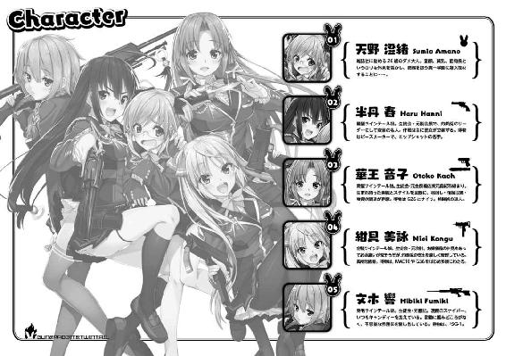
都市伝説 灼熱兎
まず初めに、これはわたしの日記のようなものです。
ある事情により、日々の生活をメモしておかなければならない状況になっています。
場合によっては、これが遺書になる可能性もありますね。
......まあ、そうならないことを心から願いますが。
そう考えると、他の人にも見られることを前提として、出だしくらいは頑張って書いてみましょうかね？
──どんなに完璧に整備されていても、どんなに完全に管理していても、それに関わるのが人間である限り、綻びは必ず出ます。
また、その綻びを〝ありえない〟と言い、目を背け、臭いものに蓋をし、無いことにしてしまうのも人間です。
無いはずの綻びは、いつしか大きな穴となり、裂け目となり、完璧で完全だったそれは、真っ二つに引き裂かれます。
ここはモデル都市であり、とある実験体となっている街。
今までこの国にはなかった、ある一つの要素によって、新しい法、新しい概念、新しい価値観が生まれようとしている場所。
鬼が出るか蛇が出るか......なにが出るのかはお楽しみというやつです。
その要素というのは──銃。
そう、人を殺すための道具です。この街にはそれがあります。
正確にいえば、それらを所持することを許された学園が、この街にはあります。
もちろん法は整備され、銃も人も完全に管理され、むしろ銃のない街よりも安全と謳われています。
ですが......もう一度言います。
──どんなに完璧に整備されていても、どんなに完全に管理していても、それに関わるのが人間である限り、綻びは必ず出ます。
また、その綻びを〝ありえない〟と言い、目を背け、臭いものに蓋をし、無いことにしてしまうのも人間です。
無いはずの綻びは、いつしか大きな穴となり、裂け目となり、完璧で完全だったそれは、真っ二つに引き裂かれます。
今は丁度、綻びが穴になるところでしょうか？
不備があっても、事件となっても〝ありえない〟と言われてしまう時期です。
知らず知らずのうちに何かが起き、知らず知らずのうちに無かったことになっています。
この街にはある都市伝説がありました。
法で捕えられない組織、法で縛れない人間を、法を破った方法で罰するある集団。
まるで正義の味方です。
ですが、彼らはそれには絶対になれません。
跳ねまわり、飛び回り、壊して、壊して、壊して回る。
彼らが通った後には爆炎が渦巻き、まるで何もなかったかのように焼き尽くす。
そんな、テロリストとも思える集団です。
正体も目的も不明。
実際現場で遭遇した者も、炎に映るシルエットしか見ていません。
その姿は、いずれも髪を二つに結わえた四人の女の子だったといいます。
跳ねまわるように爆炎を運ぶ、髪を二つに結わえた女の子の集団。
いつしかこの街では、彼女らをこう呼ぶようになっていました。
──灼熱兎と。
この日記は、そんな街で起きたことを綴ったものです。
......と、そういえば、この日記にタイトルを付けていませんでしたね。
まあ、こういうものは簡潔でわかりやすい方がいいんです。
結局のところこの日記には、銃とウサギが常に付いて回り、わたしが年甲斐もないツインテールになった理由が書かれています。
だからタイトルはこうしておきましょう。
──銃とウサギとツインテール
その様子を、ほんの少しだけ見てみましょうか？
もっとも......わたしは、この時の様子を見ることができなかったので、語り手はわたしでは無くなってしまいますけどね。
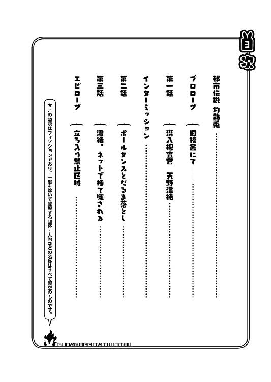
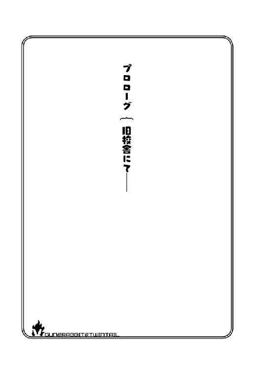
旧校舎にて──
そこは、とある学園の旧校舎。
木造ではあるものの古臭いイメージはなく、どこか品があり全体的にレトロな佇まいをしていた。
三階建て校舎の二階、その中心部にある生徒会室。ドアを開けて入れば真正面に見えるのは、大きな机とその後ろの窓。
外は暗く、窓には大きな月が映し出されていた。
室内灯はつけておらず、月明かりのみ。行儀悪くもその机に足を組んで座る二つのシルエットが映し出されている。
「で、あのちっこい子、本当に使えるのか......春？」
金髪を両脇で結び、所謂ツインテールにした少女が眉を顰めながらそう尋ねた。
本人に自覚はないだろうが、組んだ腕は少々大きめの胸を強調させ、組んだ脚は引き締まった太もものきれいなラインを見せていた。
女性らしくも、アスリートを思わせる体付きである。
そんな彼女が少々のツリ目を細め、もう片方のシルエットへとそれを向けた。
「んー......まあ、無事ウチらに会うことができればかナー」
春と呼ばれた少女はそう答える。
先端で二つに分けられた長い黒髪を指で弄り、へらへらと軽薄そうに笑うその姿は、先ほどの少女の態度とは真逆のものだった。
スカートからすらりと伸びた脚には一切の無駄がなく、それを少し持ち上げると、跳ねるような動作で立ち上がった。
そんな動きにもかかわらず、平均よりも小さいであろう胸は揺れることはない。しかし、その高身長とスレンダーな体付きにより、スタイルが悪いようには見えなかった。
一切無駄な肉のない、全てにおいて均整の取れた健康体の見本のようにすら思える。
彼女の名前......いや、偽名は半丹春。
春がリモコンをいじると、室内にあるいくつもの小さなモニターに映像が映し出される。
そこに映ったのは、制服を着た背の低い少女。
その画面に、黒く、重量感のある何かを向けた。
それは──銃だった。
ＳＡＡ──シングル・アクション・アーミー。通称ピースメーカー。
リボルバーの中でも代表的な銃の一つである。
「あのちっこい子にはやってもらいたい仕事もあるし、頑張ってもらわないとですネー。というわけで、もし無事合格したらエイも仲良くしてあげてくださいネ」
エイと呼ばれた金髪ツインテールの少女は大きく肩を竦め、あからさまな溜息をつく。
紺具美詠──彼女の名も、偽名であった。
彼女もまた、重量感のあるそれを手に持っている。
サブマシンガンのＭＡＣ１０。どうやらスリングを改造しているらしく、本来固定されているそれを銃口付近でクルクルと回している。
「無事に会えたらって、校舎内にトラップしかけてるんだろ？ さっきも一つ作動させてたけど、大丈夫か？」
「わかんないデスねー」
「わかんないって、お前......」
「まあ、あの二人を待機させてるから、最悪の状況にはならないんじゃないデスか？ 用意したのも、死なないようなトラップばっかりだしネー」
「っていうか、何が狙いなんだ？ あの子一般人だろ。トラップなんてあったらここに辿り着けないだろ」
画面に映る小さな子を見ながら、美詠は呆れた表情を春に向ける。
どうやら、モニターに映った『ちっこい子』のテストをしているらしく、その内容が厳しいということらしい。
「そうデスねー。実力も知識もないし、普通に考えたら辿り着けない。......でもね、ここに来るまでに、トラップが全くない道のりってのを用意してるんデスよ」
「どうにかして、そのルートに気が付けば合格ってことか？」
「いーや、トラップは見破られないように作ってマス。安全なルートも、何も作動しないダミーのトラップがあるから、基本見破るのは不可能デス」
「......いや、それって完全に運ゲーだろ」
呆れるような表情をした美詠に、春は楽しそうな笑顔を向けた。
「そうなんデス！ それが狙いなんですヨ！」
「......なに言ってんだ？」
「運ゲー！ 完全な運でしかここに辿り着けないんデス！ これはね、あの子の運を試すためのもの！」
春はモニターに目を向けて、一瞬だけ真顔になり片方の眉だけを吊り上げた。
「あの子の置かれてる状況や、あの体付きなんかはかなり使えるんデスよねー、そのうち必要になってくるんデス。でも、ウチらの事件に巻き込んだら死にますヨ。絶対に！」
「まあ、普通の人間ならそうだよな」
「でもサー、いるでしょ？ 地獄のような状況でも生き残って、なぜか弾が当たんなくて、当たっても偶然胸ポケットに入れておいた物で致命傷を避けちゃう、そんな主人公属性みたいな能力を持ってる人って」
「確かに、不自然に運の強い奴っているにはいるけどな......」
「そういう子なら、実力がなくても知識がなくても、ウチらと一緒に行動したってきっと死なないでしょ！」
「......」
美詠は首を横に振りながら、眉間を指で押さえている。そしてその手を胸の前に持ってきて、軽い祈りを捧げた。
「そこの小さい子よ。どうか運よくトラップに引っかかってくれ。こんな年中脳内麻薬出っ放しで、頭がパミンパミンしてるリーダーと行動することになったら、それこそお前......最悪だぞ」
「そういうの......ウチに聞こえないように言ってくんないデスか」
その願いが届いたのか、校舎の中でいくつもの轟音が響き始めた。
銃声、爆発音、破裂音、何かが割れる音──。
続けて、モニターに映し出されるマズルフラッシュ。
「あーあー......残念デスねー。あの子、いきなり引っかかっちゃいましたヨー」
「ご愁傷様......。まあ、あたし達とかかわらずに帰れるのは、むしろ幸運だけどね」
なむなむと手を合せる金髪の少女。
用意されたトラップは、殺傷能力こそ無いがそれでも暴徒鎮圧用。当たれば痛いし、下手すると意識を持っていかれる。
すぐにこの音も止むだろうと思っていた二人だったが──
──ダダダダダダダダッ！ ──ダァン！ ──ズガァァァァン！
それらトラップが発動する音は止まずにいた。
「......どういうことだ？」
「どういうことでしょうネ？」
美詠が春に尋ねるが、お互い首をかしげるばかりだ。
二人がモニターに目をやると......。
「何だあれ......タイヤ？」
「タイヤですネー」
廊下をヨロヨロと、古びたタイヤが転がっていた。おそらく長年放置されていたものだろう。
そしてそのタイヤは小さな足に蹴り飛ばされると前進を始め、ピアノ線や赤外線等々、ブービートラップのスイッチに触れまくり、その全てを作動させていた。
そしてそれから間を置かず、トラップが発動し、轟音が廊下に鳴り響いた。
「トラップを回避するどころか、むしろ自分で作動させてるってことか？ けど。あの場合ってどうなるんだ？ 運ゲーを力ずくで攻略してるぞ？」
「......」
春は困ったような、楽しんでいるような、ひどく不思議な表情を浮かべている。
それは、いい意味で自分の予想を裏切られた嬉しさ。そして素人だからといって、舐めていた挙句、攻略されてしまった悔しさ。それらの感情が混ざり合った表情だった。
しばらくすると、全てのトラップが作動し終わったのか、先ほどまでの轟音は聞こえなくなり、水を打ったような静けさとなった。
モニターからも、何かが動く様子は見て取れない。
「なあ春。これで全部のトラップ終了か？」
「そですねー。残ってるのがあっても、あの二人に解除してきてもらいますヨ」
そう言って黒髪の少女・春は無線を操作し、その相手に話しかける。
「──状況終了。オン、キョウ、仕掛けたトラップを解除して戻ってきてくださいネ」
『はい、かしこまりました』
『......わかった』
無線が切れてしばらくすると、部屋のドアがノックされ、ゆっくりと開かれた。
そして青髪の少女と栗毛の少女が、両手に銃器や配線などを持って中へと入ってくる。
「オンもキョウもお疲れ様デス」
「本当にクソほど疲れました。あのロリさん、くたばらずにいらっしゃるとは予想外です」
そう言ったのは手入れされた長い青髪の横を、左右それぞれ結ったオンと呼ばれた少女。
甘えるようなタレ目と、気品を感じる柔らかい表情は、どこか大和撫子を思わせる。
疲れている表情ですら色っぽく見え、それに負けないような凶悪なスタイルをしていた。大和撫子のような顔つきでありながら、そのスタイルはまるで慎ましやかさはなく、全力で女性であることを主張していた。
この彼女もまた偽名である。その名は華押音子。
「うん......もにょひゅごく......予ひょう外......」
キョウと呼ばれた栗毛の少女は、口にロリポップキャンディを咥えたままそう答えた。
積極的には手入れをしていないのか、少々広がりを見せている。全体的にショートカットだが、肩まで届いた後ろ髪を左右それぞれ三つ編みにしていた。
身長は高く、それに準じて胸やお尻や脚にも程よく肉が付いている。言ってしまえば、全てにおいて発育がよく、外国のモデルのような体形をしていた。
しかし、それより気になるのはその表情である。眠そうな眼をしたまま、ほぼ表情が変わっていない。時々眼球が動くだけである。
もちろん彼女も偽名である。名は紋黄響。
帰って来たばかりの音子は、春と美詠に視線を向けた。
「それで、いかがいたしましょうか？ 美詠と春はあのロリさんに、私たちの巻き添えを喰らわせるおつもりですか？」
「あー......あたしは反対だな。あの状況を切り抜けたって言っても、こっちの思惑どおりに動いてくれないんじゃ意味がないだろ？」
美詠はそう答えるが、春は対象的にへらへらと軽薄な笑顔を浮かべている。
「まあ、まだ終わってないじゃないデスか。あの子には、ウチら全員に会えたら依頼を受けるって言ったんデスから」
「だったら、あたしは先に帰らしてもらうからな。合わない方がきっとあの子のためだ。もし事件に遭遇したら、あんなの一瞬にして血の海に──」
──タァーンッ！
「──!?」
その場にいた全員が、声もなく、驚きに喉を鳴らす。
今まで何の音もなかった旧校舎内に、一発の銃声が響き渡り、モニターからほんの一瞬だけマズルフラッシュが見えた。
何者かが銃を撃ったのか......。それとも、何らかのトラップが誤作動を起こしたのか。
だとしたらそれは今回用意した暴徒鎮圧用か、それとも......実弾か。
最初の疑問の答えはすぐには出なかったが、次の疑問に関してはすぐに答えが出た。
──ピチャン ──ピチャン
暴徒鎮圧用のものは、喰らったところで打ち身程度にしかならない。水音が聞こえているということは......そういうことなのだろう。
見れば、少なくない量の水分がモニターの中の彼女から溢れ出ていた。手で必死に止めようとしているが、それは無情にも零れ落ち、何度も何度も床を叩いた。
さらには脚を伝い床に大きな溜まりが出来上がると──パシャーン、とその上に倒れこむような音が聞こえた。
「──っ！」
画面の中の少女は、広がる液体の上にペタリと崩れ落ち、呆然としている。
「......」
月にはゆっくりと雲がかかり、この部屋の明かりは、今全員が凝視しているモニターの光だけとなった。
「今のって......やはりそういうことなのでしょうか？」
苦い表情をしている音子に、美詠はシリアスな表情を向ける。
「二人とも、トラップは解除したんじゃないのか？ なんでこんなことになったんだ！」
「あちら側は響の管轄ですので、私に言われましても」
「キョウ、トラップは解いたんデスか？」
「解いてない......今日仕掛けたのだけだと思った。......だから、いつものやつは......そのまま......」
シュンとした表情を見せる響に、春は困ったような表情で溜息をついた。
「いつものやつって、よりにもよって実弾ですネー......。致命傷じゃないといいデスけど」
「あら、きちんと響に伝えない春のせいで、ロリさんの尊い命が失われちゃいましたね」
「え？ ウチのせいデスか!?」
非難する瞳を向けられた春は、慌てるように全員を見るが、みんな同じような目をしていた。
それこそ、解除をし忘れていた響もである。
「そもそも、何の才能も持っていなさそうな一般人に、あんなトラップを仕掛けるなど、明らかにやりすぎだと思うのですが？」
「しかも、融通の利かない響にしっかり伝えてないなんて、完全に怠慢だな」
「......ちょっと引く」
「えぇ～......完全にウチ一人が悪者じゃないデスかー......」
春は困ったような表情を見せるが、誰も助け舟は出さず、ただただ目で非難され続けていた。
「と、とにかく助けに行きませんカ？ なんかこう、胸の脂肪で致命傷になってないかもしれませんシ」
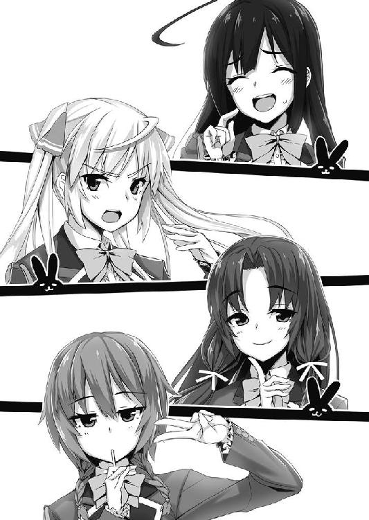
「あの方、引くほどに貧乳でしたけど？」
「う......」
「まあ、あれだけ血が出てたら致命傷だろ？」
「わ、わかんないデスよー？ 血の気が多いかもデスよー」
「......それは......意味が違う」
「ええっと、じゃあ......じゃあデスね！」
「春、もういいですよ。早くしないと、彼女が遺言すら残せなくなってしまいます。さあ、春への恨み言を聞きに行きましょう」
音子は柔らかく微笑んだまま両方の手の平を合わせた。祈っているようだが、その表情からか、あざといように見える。
「恨み言デスかー......」
「まあ、当然だな。ほら、響も行くぞ」
「れっつ......お悔やみ......」
四人はそれぞれ、少々暗い表情を浮かべながら生徒会室を後にした。
部屋の中には誰もいなくなり、動くものはほとんどない。
かすかに移動する雲のせいで、斑になった月の明かりと、画面の中で力を失った少女の足元からジワジワと広がる液体だけが、今この場所で動くものだった。
先ほどまでの騒がしかった四人がいないだけで、部屋はまるで、死んでしまったかのように静まっていた。
この物語は、こんな彼女たちの話である。
さて、主役は誰であろうか？
黒髪で年中脳内麻薬が出っ放しと言われていた、リーダーの半丹春だろうか？
──いや、ちがう。
金髪で不機嫌そうな表情をしていた、紺具美詠であろうか？
──そうではない。
青髪で柔らかそうな表情をしていた、華押音子なのか？
──それもちがう。
栗毛で無表情、独特な喋りをしている紋黄響だろうか？
──やはり違う。
それは、これから彼女たちを見届ける、ある女性の役目である。
──彼女たちの活動の中心となるその部屋に、淡い光が差し込んだ。
それは、先ほどまで雲に覆われていた月の明かり。
月光は窓から入り込み、まるでスポットライトのようにある場所に光を送った。
『......』
それは、先ほどまで凝視されていたモニターだ。
そう......彼女たちを見届ける女性というのは──
──今、画面の中で力を失い、物言わぬ彼女の役目だった。
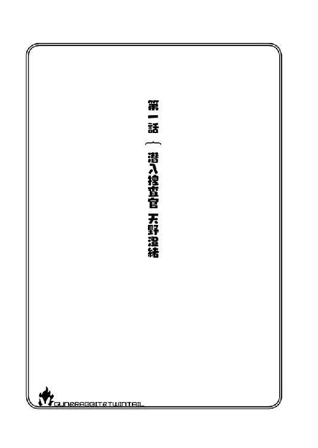
第一話 潜入捜査官 天野澄緒
わたしは今、怒られています。
大人なのに、ものすっっっごい怒られています。
「それで、どうしてこうなったのか説明してもらいましょうか？」
女性の、震えた声がわたしに向けられました。
「いやぁ......説明と言いましても。たぶん、聞き間違いなんでしょうねー......」
わたし──天野澄緒は、彼女に向け苦笑いを浮かべながらそう言いました。
「聞き間違えたのまでは納得するけれど......それを記事にする時、どうして気が付かないのよっ!!」
──ドンッ！ と大きな音を立てて、編集長は机に溢れんばかりの怒りを叩き込みました。というかまあ、溢れてるから叩き込んだんだと思います。
仕事で疲労の溜まった顔が、怒りによってとんでもないことになっちゃってます。
スタイルも年収も地位もそこそこで、メイクをすればまだまだ美人と言い張れるというのに、この怒りをすぐに顔に出してしまう癖が、編集長がアラフォーで独身な原因だと思います。
さて、彼女の役職でわかると思いますが、わたしの職場は編集部で、主に雑誌等を扱っています。吹けば飛ぶようなとは言いませんが、四回くらい吹かれたらもしかしたら危ないかも知れないような会社です。中規模ビルのワンフロアを貸しきり、全国誌ではないまでも、その地方ではそこそこに知られている雑誌なんかも作っていたりします。
わたしはその中でも、女性の行くお店などにインタビューをして記事にする、いわゆるインタビュアー兼ライターの業務についているんです。
そんな職場ですので編集部自体は整理整頓がされていて、結構きれいだったりします。
でもそこには今、感情の整理がついていないとんでもない人がいます。
まあ、その原因はわたしなんですけどね。
はっきり言ってわたしの腕は未熟です......驚くほど未熟です。それは自他ともに認めています。
それなのに、なぜこの職業を続けていられるか......それはこの外見のおかげでしょう。
身長は低く、ピンクの髪の毛に生まれながらの困り眉と大きなタレ目。太ってはいませんが、丸っこいと言われるフォルム。......清楚系のシャツを着れば学生と間違われます。
今日はピンクのシャツをビシッと着てきたら、ファストフードの高校生アルバイトと間違えられました。......ちくしょーです。
一応言っておきますが、胸もひんにゅーというやつです。
おっぱいが貧乏なんて、残酷な言葉を考えた奴がいたもんですね。
「あ......あの、編集長。そろそろ勘弁してあげませんか？ 一見するとこの状況......編集長の方が悪者に見えますし」
新人のくせに、わたしより三〇センチも身長の高い男性社員が、そう言って編集長を止めようとしますが......。
「ダメに決まってるでしょ！ こんなでも、キミより先輩なの！ この子は四半世紀以上生きてるのよ！」
まあ、無理ですよね。
そして今編集長が言ったように、わたしは四半世紀以上生きています。まあ、正確に言うと二六歳です。にもかかわらず、未だに中学生に間違えられます。
今だって、超頑張ってメイクをして大人っぽく見せていますが、言ったとおり高校生に間違えられました。
お店に取材に行けば、大体のお店の人から頭を撫でられますし。泣いて謝れば大概のことは許してもらえます。
そのおかげで、腕も記事も悪くとも、ライターとしてお金をもらえ、お仕事も普通にいただいているのです！ いるのです......けど。
「で！ 自分が何をやったのか言ってみなさい！ アナタの書いた記事を、声に出して読んでみなさい！」
どうやらそれも限界を迎えたらしく、お店と編集長がブチギレタというわけです。
「えーっと......『閑静な住宅街にある、ケーキと紅茶の隠れた名店。おすすめは消毒液と大●林──』です」
「天野さん。アナタ、何のお店に取材に行ったんだっけ？」
「今言ったように、ケーキ屋さんです」
「どうしてこのケーキ屋は、消毒液と大●林をおすすめしてるの!!」
「いやぁ......えっと。これはたぶん......ショートケーキとダージリンを消毒液と大●林に空耳したのかと......」
「聞き間違えても、記事にするときに判るでしょ！ 普通は気付くでしょ！」
編集長の鬼のような顔が、もはや『ような』はつかない、鬼の顔になってしまいました。
ここで下手に言い訳したら、食べられるかもしれません。何せ相手は鬼です。
「す、すみません。確認ミスです」
「......まあ、素直に認めたのならいいわ」
いいんですか。......わたしが店主なら、記事書いた人をひっぱたきますけど。
「でも、問題はその後」
「その後？ 記事にミスって、まだありましたっけ？」
「記事にはないわ」
記事にないなら何にあるんでしょう？
「この記事を出した後、アナタに『菓子折り持ってお店に謝ってきなさい』って言ったわよね？」
「言われましたね。でもわたし、ちゃんと謝りに行ってきましたよ？」
「向こうはどんな対応してきたかしら？」
「ふざけるな！ って追い出されました」
「でしょうね！ アナタが持って行ったのって、菓子折りじゃなくてカシオレですものね！ 店主さんが、カシスオレンジ持ってきて乾杯しようとしたバカがいるって電話してきたわよ！ 何考えてるの!? 何で乾杯しようとしたの!?」
「だ、だって......カシオレ持って行けって言われたら、飲んでうやむやにしちゃえってことだと思うじゃないですか」
「思わないわよ！ そもそも謝罪にカシオレ持ってくバカがどこにいるの！ 謝罪と言えば古より菓子折りの持参って決まってるのよ！」
そのバカ......ここにいるんだから、しょうがないじゃないですか。
「あの......お言葉ですが編集長」
「なに？」
「ケーキ屋さんに謝りに行くのに、他店で買ったお菓子持っていくのは、なんというか微妙に失礼になるんじゃないでしょうか？ だとしたら、お酒の方が全然いいのではないかと思いますが」
「なに微妙に正しいこと言ってんのよ!!」
微妙に正しいならいいじゃないですか......なんてことは言えるわけありません。
怒り狂うこの鬼にたてつけば、鉄拳的なものでわたしの頭が吹き飛ぶかもしれないからです。
「......はぁ。それで天野さん、今回の処罰だけど」
「あ、はい」
編集長は親指をグッと立てると、そのまま拳を下に向けて──
「ファイア」
わたしに向けてそう言ったのです。
「......？ コーヒーを買って来いってことですか？ 今回の罰は優しいですねー。わかりました、最速で行ってきます！」
「違うわよ。調べてみなさい。アナタの大好きな大●林でね」
「わたし別に、大●林好きじゃありませんけど？ それにあんな大きなもの、今持ってませんよ？」
「うるさいわね、こっちはイヤミを言ってるのよ！」
「ははぁー......イヤミでしたか。それは気が付きませんで」
「......アナタのそういうところが溜まりに溜まって、今回のファイアにつながるの」
「......？」
わたしは頭上に大量のクエスチョンマークを浮かべながら、スマートフォンでその意味を調べてみます。すると......。
【fire】英語で火、火災をあらわす単語。また、クビにするという意味もある──
──!?
「クビ!?」
えええぇぇ！ 頭は吹き飛ばされなかったけど、クビを吹き飛ばされてしまいました！
いや、そんなこと言ってる場合じゃないです！
「ちょ、ちょっと待ってください！ 編集長！」
「充分待ったわよ」
「そんな、一回の失敗くらいで！」
「もう失敗は二桁を超えてるわよ！ しかも今回は一回の失敗に三つの地雷が埋まってるでしょうが！」
「うぅ～～～～～～～～～～!! うぅ～～～～～～～!! う～～～～！」
何も言い返せず、口からよくわからない嗚咽が漏れてしまいます。
「小学生みたいな泣き方はやめろ」
「だっで......ぐびっで......ひじょうしきです......」
生活カツカツで、貯金も全然ないのに......。どうしろっていうんですか！
だめです......涙が止まりません......うぅ、鼻もかみたいです。
この情けない泣き顔を見ても顔色一つ変えないなんて、この人は本当に鬼です。
かくなる上は、こうするしかありません。
「へ、へんしゅうちょー。お願いがあります」
「一応、聞くだけ聞くけど......何？」
「しつぎょうほけんをはやぐうげとりたいので......かいしゃつごうでやめたごとにじてください。のこっているゆうぎゅしょうがも、しんせいします」
「......アナタ、ちゃっかりしてるわね......」
そりゃそうです。わたしだって生きていかなければならないんですから。
はぁ......明日から職探しかぁ。
「......まあ、クビにするつもりだったけど、ある取材を受けるなら考えてやってもいいわ」
「ほ、本当ですか!? やりますやります！ 絶対やります！」
これで職探しをしないですみます！
......というのもあるけれど、これは自分で選んだ仕事です。できることなら、クビなんていうことで終わらせたくない。自分が納得するまでやってみたい。
才能も腕も無いかもしれないけど、仕事自体はいくつかいただいてるし、できるところまで勝負してみたい。
「そう？ 受けてくれる？ 天野さんにしかできない仕事だから、誰もフォローできないけど？」
「大丈夫です！ お任せください！」
わたしは、中学生張りの薄い胸をドンと叩きます。......自分で言うのもなんだけど、本当に薄いです。
「今までのように、ミスをしたら命取りになるわよ」
「はい！ 次で本当のクビですもんね、ミスしないように頑張ります！」
「ああ、命取りってそういう社会的にってことじゃないの」
「......？」
「えーっとね、この仕事って、ミスしたら......命とられるのよ、たぶん」
「え？ ......えっと、それってどういう......？」
編集長は、一瞬困ったような顔を浮かべた後、嘘くさーい笑顔をわたしに向けて、こう言いました。
「アナタには、これから潜入取材をしてもらうんだけど、ばれたら......死んじゃうかも」
「し？ ......しって......──死ぃっ!?」
これから数日後、わたしは心からこう思うのでした。
なんでこんな非常識な目にあっているんだ......と。
あの時、きちんと原稿の見直しをしておけば......と。
どうしてあんな記事を書いてしまったんだろう......と。
そしてこの経験を機に、わたしの記事は間違えがぐっと少なくなることとなります。
それは、経験を積んだからとか、覚悟ができたからとか、そういうことではありません。
単純にただ一つ一つ、大事に書くことにしたのです。
だって......今書いているこれが、遺書になってしまうかもしれないじゃないですか......。
潜入一日目
「うわぁ、本当にここに行かなきゃいけないんですねぇ......」
わたし、天野澄緒は校門の前に立ち、その奥にそびえ立つ校舎を呆然と見つめていました。校舎の上まで視線を向けると、変装用の慣れないメガネが軽くずれてしまいます。
──真一学園。
門には大きくそう書かれていました。
「はぁ......どうしてこんな目に」
まあ、わたしがミスをしたからなんですけどね......。
「死......ですかぁ。この学園なら、確かに可能性はありますね」
ここは、この国で今一番話題になっている学園です。
もちろん知っていると思いますけど、この国で銃を撃っていい場所なんてありません。
まあ、治外法権が発動するあんな場所やこんな場所等々の一部例外を除いてですけど。
だけど、唯一撃てる場所があります。......それがこの学園です。
ここ数年、銃規制が緩和されようとしています。
理由は、「テロだ！ 爆破だ！」が多くなってきているからで、国際情勢の関係なのか何なのか......この国も物騒な感じになってきてしまっています。
いくら平和で事なかれ主義であるこの国の人間でも、そんなことが多発すれば黙ってはいられない。右の頬を叩かれたら、左の頬を差し出すなんてことはしません。
だって向こうは叩けば叩くほど利益が出ると思ってるわけですし、有名ゲームのコインが出るブロックよろしく、出なくなるまで何度も叩いてきます。
というわけでこの国は、右の頬を殴られる前に『こっちにも殴る準備くらいはあるんですよゴラァ！』という感じで銃を持ちましょう！ ......なんて運動があったりするのです。
そんな影響で、実験的に銃を正しく扱う英才教育をしてみよう......ということで、この学園が出来上がりました。
学園ならば銃の管理も簡単。講習だって授業と一緒にやればいい。小さい頃から道徳心と一緒に教えれば、きっとわかってくれるよね？ なんて理由らしいです。
でもまあそれは表向きの理由。裏では様々な思惑があるんじゃないかと噂されています。
そしてその噂が本当なのかを調べるのが......わたしです。
「......わたしで大丈夫でしょうか」
いやぁ、絶対に大丈夫じゃないような気がしてきましたー......。
校舎は住宅街を抜けて山と隣接した所にあり、建物は七階建ての吹き抜け構造になっています。
コンクリート打ちっぱなしで、中央にはモニュメントらしきものがあり、中庭にあるベンチやテーブルにビビットカラーが使われていたりして、お金のある大学や専門学校のようなイメージです。
調べたところによると、生徒は約三三〇人。一学年一一〇人で少ない感じがします。
しかしまあ、これには理由があるのです。
銃を扱うわけですから、下手な人は入学させるわけにはいきません。そのため、受かった後にも厳正なる審査があるそうです。
そりゃもう、生まれから人間性から親類関係まで。
ということで、この学園に通える人数はかなり少なくなってしまいます。......にもかかわらず、なんで七階建てなんかにしたんでしょうね。非常識です......この学園。
「おはようございます......」
「ん、おはよう」
偽造した生徒証を守衛さんに見せて挨拶をすると、普通に挨拶を返してくれました。
もうちょっと怪しめ、仕事しろ守衛め。こっちはもう二六歳ですよ。しかしまあ、おかげで難なく門を通過することができましたね。
......と思っていたんですけど。
「ああ、キミ。わかってると思うけど、校舎に入る前にメガネははずしておいた方がいい」
「メガネ？」
何のこっちゃと思いつつも、校舎までの道のりを歩きます。
周りの様子を見てみますが、意外にも生徒たちはみんな普通です。
てっきり迷彩服を着ていたり、銃をむき出しで持っていたり、行進のように歩いているものだとばかり思っていましたが、いたって普通です。
昨日見たテレビの話とか、彼氏に振られたとか、バイトが面倒くさいとか、原付を買おうと思っているとか、いかにも高校生な会話でした。
「......ちょっと拍子抜けしましたね」
この任務、意外とチョロいかもしれません。
彼らに続いて校舎の方へと移動すると、生徒たちが機械に顔と手を向けています。
「......あれって？」
みなさん、何か覗いてるみたいですね？ 職員室の様子とか、学食のメニューとか、そういうのが見えるのでしょうか？
とりあえず、わたしもそこに移動して、そこを覗き込むと......
──ヴィーーーーーー！ ──ヴィーーーーーー！
「え？ なんです？ 何なんですかこの音？」
赤色灯が回転を始めました。警報音のような音と共に、いえ......のような音と共に、というか、これ、警報音ですね。
「もしかして、この覗いていたやつって......」
あー......これ、映画とかで見たことがあります。静脈認証とか光彩認証とか、そういうやつですよね。
そしてこの警報音。......なんだかもう、嫌な予感以外何もしません。
なんてことでしょう！ 用意してきてるのは偽造の生徒証だけです！ こんなので生徒かどうかの確認をされたら、即ばれちゃいます！
守衛さんは仕事をしてないんじゃなくて、偽造生徒証くらい入れても何の問題もないだけでした！ こんなのがあるなんて、本当に非常識です！
どうしましょう！ 不審者だってばれたらどうなるんでしょう!? 蜂の巣ですか！ ブラッドバスですか!?
数人の守衛さんが、スタンロッドのようなものを持ってこちらへ向かってきました。
そして、先ほどまで高校生高校生していた生徒たちも、距離をとりながら鞄からハンドガンのようなものを取り出して──
「そこから動くな！」
──そうわたしに言って、突きつけました。
「お、おぉぉぉ......」
喉の奥から、変な呻きが漏れてきます。知らぬ間に、歯がカチカチとリズムを刻んでいました。
向けられているのは９２Ｆ、Ｇ１７、デザートイーグル──男子生徒はアサルトライフルのＭ４、Ｇ３６等々。
一応ここに来るまでに銃のことは勉強しておきました。詳しい機構や性能なんかはあまりわかりませんが、これだけは言えます。
どんな銃でも当たったら痛いし、下手すると死んじゃう！
「手を頭の上において！」
「そのままうつぶせに！」
さっきまで、彼氏がどうのと言っていた女生徒が叫びます。あなた......そんな感じなら、そりゃ振られるでしょう。
「あ、あの......頭に手を置いたままうつぶせになったら、途中で顔を地面に強打する気がするのですが、順番は変えていいですかっ！」
......答えはありません。
「お、落ち着いてくださいー......わたし......怪しい者じゃないんですよー」
わたしは涙目になりながら、手をぶんぶん振りつつ頭の上に置きました。
そしてそのままうつ伏せになろうとして、案の定バランスを崩して、額を強打します。
「いたいっ!?」
うずくまりながら、手を頭の上で広げる。この状況......まるで幼稚園児に見せるウサギのモノマネです。
......さて、この先どうなるのでしょう？ 死んじゃうんでしょうか？ それとも、痛い拷問とかされるのでしょうか？ まさか......卑猥な尋問でしょうか？
ダメです！ 経験がほぼない体にそんなことをされてしまっては、一瞬ですべてを吐き出すことになります！
と、わたしが戦々恐々と怯えていると──。
「ネ、ネ、そこのあなた？」
「ひっ！」
女生徒らしき人の手が、わたしの肩を掴みました。こんな状況なのに声は明るく、跳ねるような喋り方をしています。
降伏している不審者に明るく声をかけるなんて、きっと楽しんで拷問をしちゃうタイプの人ですよね......。うぅ......痛いのは嫌なので、せめて卑猥な拷問で勘弁してほしいです。
「ほら、立って。今度はしっかり触れなサイな」
「......触れる？ 触れるって？」
卑猥な拷問が始まるのでしょう。
わたしは彼女に促されるままに立ち上がり、その子の胸に触れてみます。
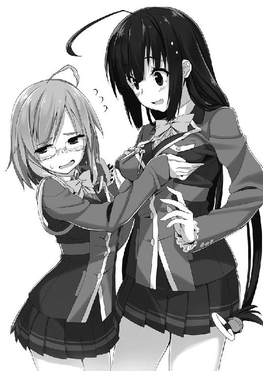
柔らかいです......わたしよりは大きいです......近頃の女子高生の発育は非常識です。嫉妬してしまいます。
「いや、何してるんデスか？」
「わたし......女の人とできるかわかりませんが、頑張りますので命だけは......」
「いや......なにを言ってンですか？」
わたしの目の前にいる女生徒は、ケラケラと楽しそうに笑い、わたしの体に付いた砂をはたいてくれています。
「......あの？」
「ん？ どうしましタ？ こんな訓練、いつものことじゃないデスか？」
「......え？」
訓練？ 訓練って何ですか？
「あれ？ もしかして今日初めて見マシた？ おかしいなぁ......時間帯バラバラでやってるはずなんデスけど......」
よくわかりませんが、なんか突破口になりそうな気もします。話を合わせてみましょう。
「そ、そうなんですか？ わたし今日、これ、初めてなんです」
「ああ、そうなんデスネ。侵入者が来たときのために、一日一回わざとエラーが出るようにしてるんデスよ。で、その時周りにいた人は、拘束する訓練をするって決まりナノ」
その女生徒は、楽しそうに満面の笑みを浮かべます。
「あー......あはは、そうだったんですかぁー」
よかったです。妙な訓練に助けられました。
......にしてもこの子、敬語でしゃべるのに語尾を上げたりアクセントがおかしかったり、こちらを小バカにしてる風とでも言いましょうか？ 飄々としている？ ......うーん、性格の尻尾を掴ませないというか......情緒が不安定な臭いがしますねぇ。
「っていうか、さっきなんでウチの胸、触ったんデスか？」
「え？ いえあの......なんか、この訓練初めてなので、もしかしたら捕まっちゃって、この後で拷問とかされるのかと思いまして......それで触れって言われたから、百合の気がある人なのかと......」
女生徒は一瞬、きょとんとした表情をした後に、くすくすと笑い始めて──
「まあまあまあまあー......ありマスけどねー。......百合の気」
と、耳元で囁きました。
......どうやら、ちょっと危険な人のようです。
「それはともかく、早くしないと遅刻しマスよ。はい、認証ニンショー」
「い、いえ......ちょっと手が荒れてるもので、うまく認証されるかなって......」
「そのくらいなら問題ないと思いマスけど」
「あ、あと！ 目の充血がひどいので、こっちも認証されるかなぁ？」
「平気ヘーキ」
まずいです！ このままじゃ今度こそばれてしまいます！ 何かしらの言い訳をしないと！
「あ、あの！ 実は目玉も指も家に忘れてきたので！ 今持ってないんですよ！ 家を出るとき、下駄箱の上に置いちゃったからですかねぇー......」
......我ながらひどい言い訳です。
と、そんな時でした。
──ヴィーーーーーー！ ──ヴィーーーーーー！
先ほどと同じように、警報音と共に赤色灯が回転を始めました。引っかかったのは男子生徒です。
皆さん、彼に向かって銃を構え、地面にうつ伏せにさせました。
そんな中、目の前の女生徒さんだけは、不思議そうな表情でわたしに視線を向けます。
「......あれぇ？ 故意のエラーは一日一回しかないはずなんデスけどねぇ？」
「え......えっとー」
「つまり、どっちかが本物の侵入者なわけですよネー」
ニヤリとした表情をわたしに向けてきます。そして、絡みつくような視線を私に向けると──
「あなたの正体、知りたいナ」
そう言って、わたしを拘束しようと腕を伸ばします。
──ありマスけどねー。百合の気。
「ひぃっ！」
先ほどの言葉が頭の中で再生され、思わずその手を避けてしまいます。
「ちっ！」
再びわたしに腕が伸ばされますが、それも何とかかわします。そしてそのまま──
「い、今のエラーは訓練です！ さっき鳴ったのは本物の不審者で、その不審者はこの人です！」
わたしはそう叫びました。
「え？ ちょっと待ってくださイ！ なに言って──」
すると、訓練のために別生徒に向けられていた銃が、全てわたしの前の女生徒に向けられました。
「いやいやいやいやいや！ おかしいですヨ！」
全員の注目はその女生徒に集まっています。
わたしはゆっくりと彼女から離れ、そのまま人だかりの外へと移動していきます。
「こらっ！ 待ってくだサイ！ ちょっと！ そこの小さい子！」
切羽詰まったその声に背中を向けて、わたしは全力でその場を後にしました。
「はぁ......」
とにかくわたしは走り、真一学園の生徒が少ない方向へと脚を動かします。
閑静な住宅街を抜け、その途中にある大きな公園に入りました。
遊具はほとんどなく、芝生が広がり、休日になればフリスビーに興じる親子なんかが見られそうな雰囲気です。
わたしは近くのベンチに座って、大きな溜息をつきました。
「はぁ......まさかあんなものがあるなんて」
......いえ、あんな問題アリで注目の的な学園ですし、あったっておかしくありません。
それどころか、武器を扱うところですし、ない方が不安です。
そういうことですので、まあ納得しましょう。
「あの生徒さんには悪いことをしました」
まあ、すぐに自校の生徒だって判明するでしょう。
しかし、それにしたって......まさか学校に入れないなんて。
設備に納得はしたものの、自分の仕事が進まないことに関しては納得なんてできません。
いきなり暗礁に乗り上げてしまいました。ですが、自分の顔をパチンと叩いて気合を入れ直します。
「いえ、まだです！ まだこれがあります！」
わたしは、鞄からあるものを取り出します。興信所からもらった大きな封筒です。
実はこの潜入取材、何の当てもなくやっているわけではないのです。
編集長はある程度、取材する内容を絞っていたのです。そしてその調査を興信所に頼んでいました。
「──いい？ 今回の取材でやることは、ある人間を調べることよ。アナタ一人なんだから、話はちゃんと覚えておきなさい」
「わたし一人......。危ないかどうか......無理をするべきかどうか......そういう判断も自分でしなきゃいけないわけですね」
「いえ、どんな状況でも無理はしてもらうから、その判断はいらないわ」
......すごいこと言われてます。ブラック企業がかわいく思えます。
「こ、怖いけですど、クビは嫌なのでやれるところまでやってみます......」
「やれるところまでじゃなく、完全にやり切りなさい。じゃないとクビが飛ぶわよ」
こちらはクビどころか頭とか吹っ飛ばされそうな任務なんですが......、
「それで、調べるべきはこの四人」
編集長の出した書類に目を向けます。
「......全員女の子なんですね」
「そう。そして全員、生徒会の元役員」
「真一学園の生徒会役員って──」
噂でだけ聞いたことがあります。
銃とか扱っちゃうおっかない学校なので、通う人間はそこそこのお偉いさんの子供や、警察関係者の中でもエリートな人の子供が九割だそうです。
つまるところ、真一学園に入った時点で、ある程度の社会的な信頼を得られているということになります。
......まあ、世間やマスコミや一部の団体では真逆の反応ですが。
保護者の方々がそんな偉い感じの方々になってしまうので、なんだか確執や派閥の争いなんかがあるらしく、子供たちも子供たちで面倒くさいことになっちゃうそうです。
なので生徒会というのは、残り一割の人達から選ばれるそうなんですが......。
その人達は、親の庇護が無くても真一学園に入れるような、超優秀な生徒ということらしいです。
「──役員に選ばれれば、大学とか、就職先とか、もはやフリーパス状態になると聞いたことが......」
「ええ、そのとおりよ」
こっちはクビになりかけているというのに、うらやましい話です。
あれ？ ......でも？
「編集長、今、生徒会の〝元〟役員って言いませんでした？」
「そう、元生徒会役員」
編集長は眉を顰めたわたしの顔を見ています。
「生徒会を辞めたのよ、この四人は」
辞めた？ そんなすごい役職を？
「......もったいない話ですね」
「そうね、誰だってそう思う。だから疑問なのよ......普通、そんなことってある？」
うーん、そんな特典満載な役職を放棄するなんてありえないでしょう。
だからといって、そんな優秀な人たちが、自分から辞めるなんて......。
「普通は考えられないですよね」
「ということはつまり......」
編集長はもったいぶった風に、一度口を静かに閉じると──
「彼女たちは、辞めさせられたんじゃないかしら？」
「......」
確かにそうです。
この先、どこに行くことになろうとも、必ず有利になる肩書きのはずです。それを自分から放棄するとは、まともな人間であればするはずありません。
「でも、そんな優秀な人間が辞めさせられるなんて、どんな事件を起こしたんでしょうね」
「それなんだが......爆破事件、知ってるよな」
爆破事件──。
この街に住んでいて、それを知らない人はいないでしょう。
それは完全なる無差別連続一斉爆破事件です。ここ最近、この真一市で起こっているテロ事件......いえ、テロなのかすらわからない事件です。
まあまずは、連続なのか一斉なのかという部分に引っかかるかもしれませんが、一斉爆破が連続して起こっています。
ビルの屋上、誰も使わなくなった公衆トイレ、公園の噴水の中、一般家庭、スーパーのゴミ捨て場、警察署、ラブホテル、大企業の社長室、タクシー......等々。爆破されるもの、される場所が本当に無差別......そして一斉になのです。
そのため、犯人の動機が全く読めず、テロと断定していいのかもわからないという状況です。
「もしかして！」
「これだけの大きな事件を起こしたのであれば、辞めさせられてもおかしくないでしょ？」
「ですが、彼女たちが犯人なら、学園から何らかの発表があるんじゃ？」
「世間から注目されている学園よ、こんなことが起きればただじゃすまないわ」
確かにそのとおりです。
きな臭い学校で、きな臭い事件が起きれば即廃校でしょう。しかもそのために法の整備までしています。廃校になるだけならまだ優しい方です。
「事件が起き始めた時期と、彼女たちが辞めた時期は一致しているのよ」
編集長は四人の写真と名前とプロフィールの書かれた書類をわたしの前に差出し、こちらに笑顔を向けました。
「何が起こって何故辞めたのか......絶対にとんでもない裏があるはずよ。アナタにしかできない仕事だわ！」
......わたしにしかできない仕事！
いい響きです。
「この街の平和のためにも......ジャーナリズムに携わる人間として、頑張ってくれるわね！」
「わかりました！ このわたしにお任せください！」
「いい返事ね。さて......ここまでに出た情報を調べてくれた興信所に、もっと深い情報を探るように言ってあるわ。私の信頼する連中よ......きっと役に立つわ。それを受け取って役立てて」
「編集長......ありがとうございます！ 必ず、これをスクープにして見せます！」
──などというやり取りがありました。
その深い情報というのがここにあります！
学校に潜入するという一歩目は躓いてしまいましたが、住所や電話番号等々の情報さえあれば、接触する方法はいくらでもあります。
この情報を元に、学園外の本人たちを実際に見てみることにしましょう。
「さて、調査の結果はと......」
編集長が調べた名前と写真をもとに、興信所で調べてもらった結果がこれです！
【対象１】半丹 春
この街にその名前を持つ人間は存在しておらず、その他一切に関して不明。
【対象２】華押 音子
この街にその名前を持つ人間は存在しておらず、その他一切に関して不明。
【対象３】紋黄 響
この街にその名前を持つ人間は存在しておらず、その他一切に関して不明。
【対象４】紺具 美詠
この街にその名前を持つ人間は存在しておらず、その他一切に関して不明。
【対象の４人について】
彼女たちを名前から調べるが、この街、市、県には該当する人物は見当たらなかった。また、それぞれの名前は、古い海外ドラマをもとにしたものだと思われる。以上のことから、我々が掴まされたそれぞれの名前は、おそらく偽名であると判断する。
また、登下校時を狙って尾行するものの、似たような生徒はおらず、数日間にわたる調査では発見できなかった。こちらもおそらく、偽物の写真であると思われる。
そのため、これ以上の調査は不可能だと判断した。
「......」
偽名？ 偽の写真？
唯一の手掛かりだったそれが......偽物？
これは──。
「つっ、詰みましたぁぁぁぁっ！」
詰みました！ 完全に暗礁に乗り上げました！ 座礁も座礁、ありえないほど乗り上げました！
潜入もできなかった上に、唯一の手がかりである情報が嘘ときたものです！
もうどうにもなりません！ 調べられません！ クビ確定です！
編集長！ 所詮わたしもあなたもただの地方雑誌社の人間であり、こういうハイクラスな人たちのことを調べるには、全然力が足りないようでした！
無理です！ 編集長の信頼していた人達は全然役に立ちませんでした！ あれだけ格好つけていた編集長が、もはや滑稽を通り越して不憫で仕方ありません！
あーーーーーーーー!! 今わたしたち、超かっこ悪いですよ！ 編集長ぉ!!
「......うぅ」
どうしましょう。
──はぁ。
「もうだめでしょうねー......」
一通り絶望したら、なんだかもう虚無感でいっぱいになりました。
「......就職、どうしましょうかね」
この仕事とあの会社は早々に諦めて、新しい仕事を探したほうが無難でしょう。
就職情報誌をもらいに行かないとですね。
そんなことを考えながら、空を見ていると......。
──ザッ ──ザッ ──ザッ
一つの足音がこちらに向かって、近づいて来ました。
そしてその方向に顔を向けると──
腰まで伸びた真っ黒い髪、切れ長の瞳、無駄な肉のついていないスレンダーな体つき。 ダークグレーのスーツと、目元を強調したメイク......。髪は後ろできつめに束ねられていて、急に動く時にも邪魔にならないような状態です。
たとえるのなら『魔女』でしょうか......。作り物のような、空寒い美しさを感じます。
自然とこちらの身がこわばってしまい、背中を冷汗が伝います。一見して普通の職業の人じゃないと分かりました。
記者歴一年と三ヶ月の勘が、彼女は危険だと告げています。......まあ、それもお菓子専門ではありますが。
「アナタ、真一学園の子よね？」
魔女は、思ったよりも高い声......というか若い声でわたしにそう話しかけます。
さて、どうしましょう。ここは頷くべきでしょうか？
もしかしたら、真一学園の追手かもしれません。
偽造生徒証で侵入しようとしていたわたしを、消しに来たのかも......。
「......」
何も答えられずにいると、魔女はにっこりと笑ってさらに私との距離を詰めました。
「そう......答えられないの？ だったら......」
するとゆっくりと内ポケットに右手を差し込みます。
これはあれでしょうか......やはり拳銃とか、そういうのが出るのでしょうか？
だとしたら......戦うべきです！
「──そやぁぁぁぁぁぁ！」
わたしは拳を握り、魔女めがけて渾身の一撃を繰り出しました。
しかし──
「ふっ！」
魔女は残った左手で、わたしの腕を掴みます。
「ふあぁぁぁぁっ！」
そしてそれを捻りあげられ、わたしは無様にも地面に転がりました。
「いたい！ すごくいたいです！」
やはり、見様見真似のパンチでは何もできませんでした。
完全に拘束されて、しかも敵意があるとわかってしまい、状況は完全に悪化しました。
「はぁ......あのね、アナタ。逃げたいのはわかるけど、あたしに手ぇ出すとまずいんだよ」
そう言いながら魔女が内ポケットから出したものは──
「......補導員？」
補導員と書かれた腕章でした。
「学校サボって、こんなところで何やってるのかなー？」
記者歴一年三ヶ月の勘は、完全に的外れでした。
「い、いえその......ち、違うんです！ わたし実はもう二六歳の記者でして」
「はい、お話はゆっくりできるところで聞くからねー」
「あ、あの！ ちょっと待ってください！ 本当なんです！ ホントに！ ちょっと！」
二六歳を補導なんて、この人、非常識すぎます！
「......すみませんでした編集長」
「まあ、その格好だし。仕方ないと言えば仕方ないわね」
結局、補導員さんにファミレスに連れて行かれたわたしは、そこで様々な個人情報を聞かれ、調べられ、問い詰められ、でも信じてもらえなく、最終的に編集長に連絡をして身元をはっきりとさせました。
ちなみに補導員さんは、編集長が来てくれたことでやっと信じてくれたらしく、自分の分のお金を払ってここを後にしました。
今回のこともきっと怒られるんだろうなー......なんて思っていたら、思いのほか彼女は優しく微笑んでくれます。
「補導されるくらいなんだから、学園への侵入も楽勝よね？」
「......」
なるほど。どうやら、わたしがこの件に関して、そこそこの成果を上げるであろうと思っているから怒らないようです。
残念ですが編集長、こっちはもう詰んでます。
一雑誌社のお菓子専門インタビュアー兼ライターには、国が関わるような学園に潜入することは無理なんです。
「......どうしたの天野さん？ うまくいきそうなのよね？」
しかし、これを言ってしまえば、即座にわたしのクビは飛んでっちゃうことでしょう。
仕方がないので、わたしの社会人スキルを総動員して返事を濁すことにします。
「あ、はぁ......まぁ......」
これでたぶん大丈夫です。
「さてと、私は次の打合せがあるから、そろそろ行くわね」
「あ、はい。がんばってください」
「ああ、アナタもね。期待してるから」
「あはは......いや、まぁ......そうですねぇ」
軽く別れの挨拶を済ませると、編集長は領収書を持って席を立ちました。
彼女がお金を払い、店を出て、見えなくなると、わたしは盛大な溜息をつきます。
「......」
どうしましょう。
......まあ、もうどうしようもないんですけどね。
名前も偽名、写真も偽物。
一体何を、どうやって探せばいいのやら......。
というより、もはやどうやってごまかすかを考えた方がよさそうですね。
「とりあえず、真一学園生のネタが少しでもあれば、ごまかせるかもしれませんね」
こうなれば、その生徒会をやめた方ではなく、他の人の不祥事を探ってみましょう。それでもそこそこの記事にはなるでしょうし。
「もうここにいても仕方ないですね」
怪しいことが起きそうなところに移動することにしましょう。
「......はぁ」
それにしても、今日は疲れました......。
いろいろ気も遣いましたし、慣れないことばかりでした。
外は涼しくなってきてますし、ファミレスから出たくありません。
「あー......甘くて温かいものが食べたいです」
今日は十分に働きましたし、明日からでいいでしょう。
明日できることは、今日やる必要はありません。今日のところはこのまま甘いものを食べて、それから家に帰ってゆっくりしましょう。
いいんですいいんです。今日はついてない日なんです。
こんな感じでわたしは自分を納得させて、一日目の取材を終了としました。
──こうして、わたしの潜入取材一日目は目立った成果は『補導』という形になりました。
インターミッション
──プルルルルルル ──プルルルルルル ──プルルルルルル
人気のない公衆トイレの個室でそんな音が響いている。
電気はついていないらしく、薄暗い中で携帯の画面が煌々と光を放っていた。
「......」
その持ち主は、黒髪にダークグレーのスーツを纏った女性。コールはすでに、一五回を超えていた。
だがイラつく様子もなく、指をうねうねと動かしながら手遊びのようなことをしている。
すると──
『......ん』
「あ、もしもし。ウチです」
どうやら電話の相手が出たようで、手遊びをやめて話はじめた。
だがその口調はどこか軽薄で、その外見とまるで似合っていない。
「うん、今朝の子の正体がわかかりましたヨ。
補導員のふりしたら、目的から正体まで全部教えてくれたんデス。
ん？ アーそうそう、あの格好してね。
で、名前は天野澄緒ちゃん──あんな外見だけど二六歳デスッて。
で、雑誌社に勤務してるみたいデスから、普通に潜入取材ってところじゃない？
だからまあ、心配するほどのことでもないデスかねー。
むしろ肩書きとか、この合法ロリな感じとか、すごく使い勝手がいいと思うのですヨ。
あとはまあ、修羅場を潜り抜けられる運でもあればネー。
それじゃあ、その後のことはお願いシマスね......キョウ」
女性はそう言って電話を切った。
「えーっと、次は......」
続けて電話をいじり、またどこかへと電話をかけているようだ。
──プルル ──ピッ
『はい』
「あ、もしもし。相変わらず出るの早いなぁー」
今度は一コール目もすまないうちに相手が出たようで、彼女は呆れるように軽く笑った。
「あのさ、今から言う子を、学園に入れるようにしてあげて。ん？ 大丈夫。補導員って嘘ついて、指紋も静脈の情報も、光彩も調べてあるから。
名前は......天野澄緒。身長も身長だから、適当に一年生ってことにしておいて。他のデータは後で持ってくから。それじゃあ、よろしく」
ダークグレーの女性は「ふぅ」と溜息をつくと、おもむろにそのスーツを脱ぎ始める。
そして全裸になったかと思うと、胸の部分から数枚に重ねたパットが地面に落ちた。
下着を変え、メイクを落とし、髪をほどいて、そして制服を着る。
その胸に縫われているのは、真一学園の校章。
彼女は機嫌よさそうに笑うと、学生用の鞄を手に取り──
「さて、学校行きますかネ」
そう言ってこの場所を後にしたのだった。
潜入二日目
「......いました」
わたしは今、繁華街のはずれにある、ラブホテル街に来ています。
潜入捜査二日目──まぁ、当初の目的地には潜入できていないわけですが......。
ともかく、学園生がよく見られる場所を聞き込みしてみました。すると、その情報の中の一つに『ラブホテル街の近くで最近、特徴的な生徒をよく見かける』というものがありました。
そしてその現場に来てみると......確かに特徴的なのがいました。
学園には風紀委員というのがあると思いますが、彼女はまるでその逆です。いうなれば〝風紀乱し委員〟です。
というのも、胸は大きく、ウエストは細く、お尻も適度に大きく、すらりと伸びた脚は適度に肉が付いています。
表情は柔らかく、大きくてほんの少しだけ垂れた目がかわいらしいです。
普通に制服を着ているだけなのに、全く着崩していないというのに......エロイです。歩いているだけなのに色気を感じます。
「......うらやましいですね」
非常識なおっぱいに思わず歯ぎしりをしてしまいます。
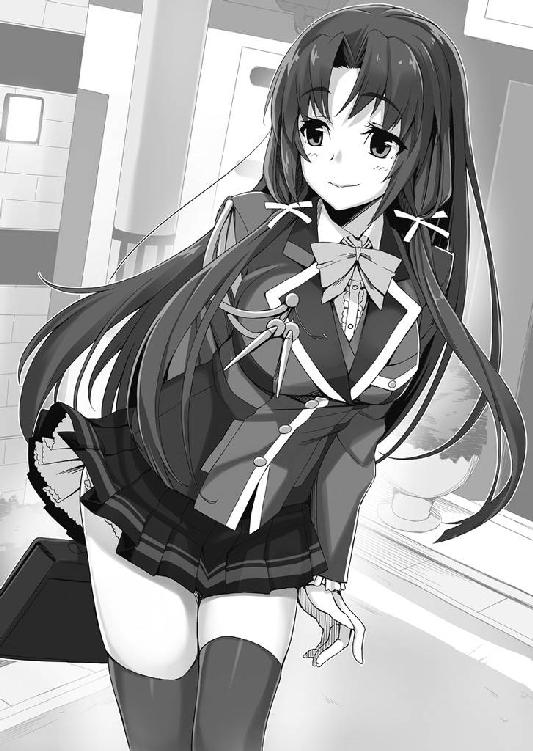
なんというか、清楚系ビッチとでもいう感じです。合コンに来られたら、全てを持っていくタイプです。あのタイプは、絶対に呼びたくありません。
しかし、今のわたしにとって彼女は、救世主になるかもしれません！
なにせあの外見でこの場所です。このまま『援助交際』とか『売春』等々の性に関することに結びつければ、スクープになります！
「あの子......うまく、援助交際してくれればいいんですが......」
......。
それは大人として、すごくダメな考えで、とんでもない発言のような気がします。
前言撤回しておきましょう。うまくスクープになる程度の、そんなことになればいいんですが......。
というか、彼女はこんなところで何をやってるんでしょう？ 場所はホテル街。まあ、この先にはライブハウスもあるし、抜け道にも使えるからそれが目的かもしれないけど......そうではなさそうです。さっきから三〇分ほど、この辺りをずっとうろうろしています。
そんな彼女の後をつけ、制服でこんなところにいるわたしも充分「何やってんだ」って話ですが......。
とりあえず、彼女のことは〝制服ビッチ〟さんと呼ぶことにしましょう。
そんなことを考えながら彼女の後をつけていくと、急にその歩みを早めました。
目標は多分、前方にいるのはサラリーマン風の男性......。
そしてその直前で息を整えて──
「あの、そのネコのヌイグルミ、すごくかわいいですね！」
「は？」
彼女は人懐っこい笑顔で、そう男に話しかけました。
ネコのヌイグルミ？ と、疑問に思って男の手を見ると、透明な袋の中にいくつものヌイグルミが入っています。
「あ、ごめんなさい。急に話しかけちゃって、ビックリしましたよね」
「い、いや。別にいいけどさ。こんな所で人に声かけられるなんて思ってなかったからね」
「え？ こんな所って......」
制服ビッチさんは辺りをキョロキョロと見回すと、急に下を向き、恥ずかしそうに──
「ち、違うんです！ こっちから行くと近道だって友達から聞いて......その、こ、この辺りに用事があったわけじゃなくて......も、もしかして私、騙されたのかなぁ......」
そう言いながら顔を赤くして視線をさまよわせています。
男の方は、あたふたしている彼女の様子を見て、軽く頬を緩ませました。
「ははっ、大丈夫だよ。確かに近道に使う人も多いし、僕もそうだからね」
「そ、そうだったんですか。よかったぁ......」
ホッとする制服ビッチさんに、男は年上らしい笑みを浮かべています。
「それで、どうしたんだい？」
「あ。えっとですね、そのヌイグルミがかわいいなって思って、つい声をかけちゃったんです」
「ん？ これかい？」
「あ、これです」
男は、袋からネコらしきヌイグルミを取り出します。......お世辞にもかわいいとは思えないんですけど。
若い子の感性はわからないですねぇ。
「これ、欲しいなぁ......って言ってみてもいいですか？」
甘えるような声を出しながら、ヌイグルミと男の指にそっと触れました。
「え？ いや、これはちょと部下からの預かりものだから」
「......ダメですか？」
「う、うん」
「じゃあ、売ってる場所だけ教えてくれませんか？ できれば案内してほしいんですけど？」
「売ってる場所って......」
男が視線を逸らす。と、彼女は「お願い！」と言いながら、不自然じゃない程度に体を密着させていきます。
柔らかそうな体の色んな部分が触れているのでしょう、男は困ったような表情を浮かべ、顔を赤くしています。
......同性のわたしですら「気持ちよさそうだなぁ」なんて思います。
「あ、ああ、えっと、まあ......。わかったよ......本当に部下から貰ったもので、僕は売ってる場所を知らないんだ。だからこれ、キミにあげる。部下には新しく買って返すことにするからさ」
サラリーマン風の男は困ったように笑い、袋を制服ビッチさんに渡しました。
「本当ですか？ ありがとうございます！」
彼女はそう言って深々と頭を下げると、胸がギュッと強調されました。
そして頬擦りでもするかのように、ヌイグルミに顔を近づけています。
「あの......これ、私の番号とアドレスです。もしまた同じのが手に入ったり、部下の方が持っていたりしたら、連絡してもらえませんか？」
彼女は顔の半分をヌイグルミで隠し、名刺のようなものをヌイグルミに持たせて男に渡しました。
......女の子らしくてすごくかわいいです。そしてそれが似合っているのが憎らしいです。
彼も頬を緩ませながら、それを受け取ると「仕事に戻るからすぐには無理だけど、今夜にでも連絡するよ」と言って彼女に笑顔を向けています。
制服ビッチさんも「はい、待ってますね」と、人懐っこくて柔らかい笑みを男に向けました。
そしてその後、二言三言交わすと、二人は別々の方向に歩いていきました。
「......これは、あれでしょうか？」
看板の陰からこっそり覗いていたわたしは、今見た情報を頭の中で整理します。
あんなにかわいくないヌイグルミを、そんなに欲しがるでしょうか？
それ以前に、彼女はこの辺りをずっとうろうろしていました。にもかかわらず、サラリーマン風の男に「近道だって聞いて」ということを言っていました。
本当は援助交際の相手を見つけるために、あの辺りをうろうろしていたんじゃないでしょうか？
ヌイグルミをカワイイといったのも、男に声をかけるためのきっかけなんじゃないでしょうか？
そう思えば思うほど、さっきの行動が男に媚びているような......とてもとてもあざといような、そんな感じだった気がします。
しかし、あのあざとさが似合うのだからすごいですね......。
「あれ？」
先ほど男性が歩いてきた方向に、ヌイグルミが一つ落ちていました。
落としてしまったのか。それとも忘れ物でしょうか？
まあ一応、拾っておいてあげましょうかね。
わたしは小走りでその場所に行き、ヌイグルミを手に取ります。
「......やっぱり、カワイイとは思えないんですけどねぇ」
なんてことを言いながらさっきの場所を振り向くと──
「あれっ!?」
制服ビッチさんは姿を消していて、どこにも見当たりません。
どこかのホテルに入ってしまったのでしょうか......。
「うぅぅ～......」
もし決定的な瞬間を見ることができたら、ネタになったかもしれないのに～......。
「あの、あなた？」
「ふわぁ!?」
急に後ろから、甘い声が聞こえてきました。
そちらの方向に目を向けると──
「あの、こんなところで何やっているのですか？」
──制服ビッチさんです。いつの間にこっちに？
思わずわたしは、持っていたカバンとヌイグルミを、後ろ手に隠してしまいました。
そういえば、さっきとは喋り方が違うような気がします。お嬢様っぽいというか、大和撫子っぽいといいますか......いったいどうしたのでしょうか？
「え、えーっと、道に迷ってしまったんです」
「あら......そうなんですか？ このような場所で？」
彼女の大きな目が少し細くなりました。......きっと疑っているのでしょう。
こういう場合は、質問されてしまうと立場が下になってしまいます。なのでこちらからも質問を返して、立場を入れ替えるのが上策です。
「そちらこそ、こんないかがわしい場所で何をしていたんですか？ 言えないようなことじゃないんですか？」
「今質問しているのは、私の方ではありませんか？」
無理でした。
完全に策失敗です。
「まあ、あなたのような小さい子の方がいいという、奇特な性癖をお持ちの方もいますし、変なところに連れ込まれ、変なことをされ、頭が変になっても知りませんよ？」
「うおぅ、一つのセリフに『変』が三回も入ってるなんて、わたし、あなたの想像の中でよっぽど変な人に変なことされちゃってるんですね......」
「ここはそういう人がいっぱいいる場所です、気を付けたほうがよろしいかと」
「......わかりました」
「そういうあなたはどうなんですか？ 危なくないんですか？」......と聞こうと思いましたが、なんだか怖くて聞けませんでした。
だって、怪談話や童話にあるような感じで「私は平気。だって......私が変なことをする方だからね！」なんてことを言ってきそうな気がするんですもん。
なんなんでしょうね、この佇まい。その手のことに関して百戦錬磨とでも言わんような雰囲気です。
「それでは、わかったのでしたら早くこの場所から出ていってくださいね。でないと、その手の変な方に『ここに発情したロリが出現しています』と連絡をしますので」
「わ、わかりました！ わかりましたから止めてください！」
ものすごく怖い脅しです！ っていうか、なんでその手の変な人の連絡先を知ってるんでしょう、この人は？
その後、彼女に追い立てられるようにホテル街を後にしました。
なんとなく歩いているうちに、この前補導された公園にやってきていました。人気はほとんどなく、いるのはわたしを除けば鳩くらいのものです。
はぁ......ヌイグルミに気を取られたせいで見つかって、取材対象に見つかるとは。
「......こんなもの、拾わなければよかったです」
よくわからない、猫のヌイグルミ。
こんなものを拾っていたせいで、ネタになりえる情報を逃してしまいました。
公園でボーっとそれを見つめながら、ただただ自分の注意力のなさに落ち込みます。
はぁ、悔やんでも悔やみきれません。
「どこの誰が持ち主かもわかりませんし、何より可愛くないんですよねー......」
のほほんとした顔の、太った猫のヌイグルミ......。なんだかこれを見ているとムカムカしてきました。
「......可愛くないどころか、憎たらしいですね」
ああ、もう！
もう少しだったのに！ もう少しだったのに！ こいつのせいで......このヌイグルミのせいでっ！
そんな気持ちをぶつけるため、ヌイグルミを思いっきり振りかぶります。
そして地面に向けて、力いっぱい叩きつけようとすると──
「だめぇぇぇぇぇぇぇぇーーーーーーーー！！」
「え？」
ものすごい叫び声と勢いで走りこんでくる女の子がいました。
一直線でこっちに来ます......やばいです、完全に目標はわたしみたいです。
何が『だめぇぇぇぇぇぇぇぇーーーーーーーー！！』なのかよくわかりませんが、わたしの体は ヌイグルミを全力で地面に叩きつける気満々で、今更止まりそうもありません。脳が止めようと命令をしても、全然聞き入れてなんかくれないようです。
そしてヌイグルミはわたしの手を離れ、地面に叩きつけられる──
「だああああぁぁぁぁぁぁぁぁぁーーーーーーっ！」
──直前。ズザァァァァァァァァ!! という音と共に、砂埃が舞いました。
「ふわぁ!? な、なんですか!?」
『だめぇぇぇぇぇぇぇぇーーーーーーーー！！』の女の子が、地面とヌイグルミの間にヘッドスライディングで体をすべり込ませていました。
「......え......えっと......」
痛そうです......ものすごく痛そうです。全面を地面に擦り付けてるわけですから。
「う......ぐ......」
呻いています......やっぱり痛いのでしょう。
「あ、あの......大丈夫ですか？」
そう聞いてみると、女の子はむくりと上半身を持ち上げます。
制服で豪快にヘッドスライディングを決めたせいか、アウターもインナーもボタンが千切れていて、下着が露わになっています。
しかも涙目で体中土まみれ......。嫌な犯罪が起きた後のような見た目です。
「......そっちは？ ヌイグルミは無事か？」
「え？ あ......はい。大丈夫みたいです」
起き上がった女の子をよく見ると、胸には真一学園の校章が縫い付けてありました。
......この子も、生徒さんのようです。
金色の髪を大きく広げたかのようなツインテールに、そこそこきついツリ目。
制服ビッチさんに負けず劣らず......うーん、ちょっと負けてるけど、かなりのスタイルの持ち主です。
というか、こいつもそんなスタイルですか......。
最近の若い子の発育に、妬みと嫉みと歯ぎしりが止まりません。思わず舌打ちしてしまいます。
でも、柔らかそうな肉感がある制服ビッチさんと比べると、アスリートのような、健康的な色気を持つ体付きをしているようです。
見た目は派手目......でも、男性には慣れていなさそうな雰囲気。
先ほどの子と真逆で、〝処女ビッチ〟とでもいう感じの子です。
「えっと......もしかして、このヌイグルミを守るために、走ってきたんですか？」
だとするなら、見た目に似合わず可愛いらしい子です。ヌイグルミのためにここまでするなんて。本当はきっとすごく女の子女の子しているような、心の優しい子なんでしょう。さすが処女ビッ──
「──コロスぞ！」
......え？
「あなた、ヌイグルミのために──」
「おいこらっ！ お前、何考えてるんだ！ 生きたまま燃やすぞ！」
「ふおうっ!?」
彼女の指が、わたしの頭にめり込んでいます！ 片手です！ アイアンクローです！
前言撤回です！ 女の子女の子してる心の優しい女の子じゃありません！ こんなの優しめのゴリラです！
「いいいいいい！ 痛いです痛いです！」
「あたしはもっと痛い！ そしてすごく恥ずかしい！」
「だったら手を放して隠せばいいじゃないですか！ 恥ずかしいのだけは何とかなりますから！」
そう言うと彼女はぱっと手を放し、宙に浮いていたわたしの体が地面に落っこちます。
「うぐっ！ ......な、なんなんですか、いったい？」
彼女は胸を隠すように手を置いて、そしてわたしの顔をじーっと見ています。
......なんなんでしょう？
「あー......うー......えーっと。......ね、ねぇ......そ、そのヌイグルミ、かわいいね」
「は？」
いつの間にか、その女の子がこちらに向けて笑顔を作っていました......けど。
「あ、あたしにくれないかなぁ」
「ひぃっ！」
その笑顔はとんでもなく引き攣っていて、小さい子が見たら泣いちゃうような代物でした。
かくいうわたしも、肉体は小さい子なのでつい悲鳴を上げてしまいます。
「だ、だめかなぁ？」
「い、いえ......その......」
彼女の顔を直視したくなくて、恐怖で首を何度も横に振ってしまいます。
むしろこんなヌイグルミいらないのに......。こんな大怪我してまで欲しいんなら、別に快くあげられるのに......。
ギギギギと震えながら、なんとか首を元の位置に戻すと──
やはり、表情は無理やり作ったような......ものすごく硬い笑顔です。違和感の塊です。
「でぇ！ それ、あたしにくれるのくれないのぉ！」
彼女的には多分、精いっぱいの笑顔なんだろうけど......見ていて痛々しいです。
「あああああ、あげます！ いくつでも持って行ってください！」
「え？ いくつもあるの？」
「な、ないです！ 一つもないです！」
「いや、一つはあるでしょ！ 持ってるじゃない！」
「ひぃ！ これはその！ わたしのじゃないもので！」
そうしてしばらくの間、違和感の塊との噛み合わない会話が続きました。
この地獄のような時間が、ずっと続くのかと思いきや。
「あー！ もう、めんどくさい！ 交渉事なんてあたしにできるかぁっ！」
今まで不自然だった笑顔から一転、眉間にしわを寄せた不機嫌な表情になりました。
なんというか、その表情はとても自然で、それが彼女の素なんだろうなということが窺えます。
「悪いけどソレ、必要だから貰ってくけど、文句あるか？」
「あ......いえ。別にいいんですが、これ元々忘れ物で......」
「あ？ それって文句か？」
「い、いえ......」
状況としてはさっきに比べてカツアゲ寄りですけど、あの違和感の塊のような笑顔で優しく迫られるより全然マシです。
むしろ不機嫌な方が、似合っているというか、ちょっと魅力的な気がします。
「それじゃ、悪いけどこれ、貰っていくからな」
「あ、はい。元々わたしのではないので......」
金髪の少女は、フーンと言うと踵を返し、わたしの元から立ち去ろうとしました。
けど、なぜか再びこちらを向き、わたしの元へと近寄ってきます。
「な、なんですか？ これ以上は持ってませんよ？」
「いや......あの、そうじゃなくて」
彼女は「うー」とか「あー」とか、言葉を濁しながらこめかみの辺りを指で叩いています。
そして意を決したような表情をしたかと思うと、
「ソーイングセット、持ってるか？」
「ソーイングセット？ えっと、針と糸ですか？」
「そう、針と糸。なんていうか......ほら、このままじゃ見えちゃうだろ」
ああ、とれちゃったボタンを付け直すんですね。でないと、下着丸出しで帰ることになちゃうでしょうし。
ですが、それより気になったのは、
「......なんでそんなの借りるのに、ためらってたんですか？」
「だって、見ず知らずの人に『針と糸を貸して』なんて言われたら、気持ち悪くないか？」
いえ、ヘッドスライディングでヌイグルミを救出し、違和感バリバリの笑顔でそれをねだられ、最終的にカツアゲしていく方が気持ち悪いです。
......思っていても口には出しませんけどね。
「言われてみればそうかもしれませんね」
「そうだろ？」
とりあえず話を合わせてみましたが、彼女の中の基準がよくわかりません。
「それで、あるなら貸してもらってもいいか？」
「あ、ごめんなさい。持ってません」
「そうか......持ってないか」
申し訳ないんですが、そんなに女子力も高くないので持っていないんです。
でもさすがに、こんな格好で歩き回らせるのはかわいそうですね。
わたしのブレザーを貸してあげてもいいんですけど、たぶんわたし達の体格差から『萌えアニメに出てくる胸の谷間とおへそを露出させた制服』みたいになるでしょう。
たぶん、その方が恥ずかしいです。
あざとさが見え隠れしていた制服ビッチさんだって、躊躇っちゃうと思います。
「......あ」
彼女のことを考えると、ふとあることを思い出しました。
「あの......こうすれば、自然と隠せるんじゃないでしょうか？」
「え？ ......いや、でもこれって」
わたしは先ほどのあの子のようにヌイグルミを持たせて、胸と口元を隠すようにしてあげました。
これで完全に隠れているうえに、女の子らしくてとても自然です。
「あの......ありがたいんだけど、むしろ恥ずかしくないか？」
「下着を露出するよりはマシかと」
露出狂が不思議ちゃんになるだけではありますが、前者は犯罪、後者は奇行。明らかに後者の方がマシです。
「なんか、妙に痛くないか？」
「大丈夫です！ 全然痛くありません！」
嘘です。やっぱりちょっと痛いです。
「あたしにはこういうの似合わないだろうし」
「そんなことありません！ 似合ってます！」
嘘です。そんな変な人形、似合う人は中々いません。
「そ......そうかな？」
「そうです！」
嘘です。そうでもないです。
「ほら、すごくいいですよ！ あなたに似合ってますよ！ 可愛いです！ ヌイグルミも喜んでるみたいです」
「そ、そうか......喜んでるか......」
ほんの少し顔を赤くして、照れたように頬を緩ませています。
「......」
それにしても......この子、ものすごくチョロいです。
誉めたら誉めただけ真に受けて、満更でもない風にデレていくタイプです。
少し試してみましょう。
「あの......あなたみたいに可愛い人、あんまり見ることがないので、友達に自慢したいんです。今度、わたしの知り合いの男性の別荘に行くので、その時会ってみてもらえませんか？」
「え？ ......ま、まあ......そう言われたら悪い気はしないけど、......言っとくけどあたし、人見知りだから、初対面の人と喋ったりとかそういうのはあんまりできないけど......」
将来が不安なレベルです。
やばいです。チョロすぎます。
「あの......今みたいに誉めてくるタイプの男の人には、絶対に気を付けてくださいね」
「え？ 何が？」
まずいです。自分のチョロさに気が付いていないようです。
まあ、人のヌイグルミを持って行ってしまうような変な人ですし、あまり関わり合いにならない方がいいでしょう。
「それじゃあ、そのヌイグルミ、大切にしてあげてくださいね」
「わかった......」
〝チョロ子さん〟は不思議そうな表情を浮かべつつ、わたしに背を向け、この場を後にしました。
どうか、悪い男にだけは引っかかりませんように......。
そう祈りを捧げます。
「......あ」
よくよく考えてみれば、あの子も真一学園の生徒です。後を追ってみれば、何かしらのスクープをものにできるかもしれません。
というか、今さっきヌイグルミをカツアゲされたばかりです。確実に何かあるでしょう。
「よしっ！」
わたしは手早く荷物をまとめると、チョロ子さんの後をこっそりとつけていきました。
公園を出て、住宅街を抜け、商店街に入り、その中でもシャッター通りとなってしまっている地域に、チョロ子さんは足を踏み入れました。
わたしもそれに続いて、見つからないように彼女を追います。
「こんな場所に何の用が？」
そのまま彼女を追い続けると、途中でコンビニに寄り、炭酸のジュースとブラックコーヒー、それと大量のロリポップキャンディを買ってから、ある雑居ビルに入っていきました。
「あの飲み物......好みがバラバラですし、他に人がいるのでしょうか？」
わたしも彼女に続いてそのビルに入っていきます。
中は少々埃っぽく、あまり使われていないというのがよくわかります。彼女もここを頻繁に利用しているわけではなさそうです。
彼女は三階にある部屋に、ノックをした後入っていきます。
できれば中を覗きたいな......と思っているうちに、飲み物やヌイグルミを置いて彼女は出てきました。制服が破れたせいか、上はジャージを着ています。
とりあえず彼女に見つからないように、ロッカーの中に身をひそめていると、わたしに気が付くことなく立ち去ってくれました。
「......ふぅ」
中々スリリングな体験です。
さて、あのヌイグルミ......ここに置いていって、いったい何に使うんでしょう？
怖い人とかいなければいいな......。そう思いつつ、彼女の出て行った部屋を覗こうとすると──
『......入ってきて』
「──っ!?」
ドアの向こうから女性の声が聞こえてきました。
あまりのタイミングに、大声をあげそうになりましたが、ギリギリのところでそれをかみ殺します。
そーっとドアから離れようと思うと。
『......今なら誰もいない......だから入ってきて』
「......」
これは......わたしがここにいるのは完全にばれてしまっているのでしょうねー。
というより『誰もいないから入って来い』っていうのはどういうことなのでしょう？
もしかして、誰か監禁されてるとか？ ......チョロ子さんが監禁してるとか？
......まぁ、さすがに無いとは思いますが。
でも......万が一ということもありますし、ヌイグルミを持って行ったくらいだから、子供だったりするのかも......。
「はぁ......」
もしそうで、それを見逃したら目覚めが悪いですし......。覚悟を決めて入ることにしましょう。
心臓を高鳴らせながら、わたしはドアノブに手をかけます。
「し、失礼します......」
ゆーっくりとドアを開けて、わたしは室内に入ります。
「......うん」
返事をしたのは、栗色で少々癖のある髪質のショートカット、後ろの髪を軽くおさげにした女性でした。
口には先ほどチョロ子さんが買ってきたであろう、ロリポップを咥えています。眠そうな目と長い睫で、顔立ちは美形で高身長......意外と胸もあります。
モデル体型とでも言うのでしょう......近頃の子の発育はどうなっているんでしょう？
そして、やはりというかなんというか......真一学園の制服を着ていて、手には件のヌイグルミを持っています。
チョロ子さんの知り合いなのでしょうか？
「あ、あの......こんにちは......」
わたしがそう話しかけると、
「ちゅーたつ......よく入ってこれ..................誰？」
途中までは穏やかな顔をしていたものの、最後の方は軽く目を見開いていました。
驚いているようですが、表情の変化はそれほどありません。
「......ちゅーたつ......じゃない？」
「え？ あ、はい......ちゅーたつさんという方ではありません」
「ちゅーたつ......来てないの？」
「来てないと思いますけど......。あの、その人の特徴とかってありますか？」
わたしの知る限り『ちゅーたつ』という人は、三国志に出てくる司馬懿仲達さんしか知りません。でもそんな人がここにいるわけもありません。
「特徴......」
顎に手を当てて、何やら考え始めています。
「特徴は......柴犬であること」
「柴犬......」
人どころじゃなく、犬のようです。
「それにしても」
しばいぬちゅーたつ......。
三国志の司馬懿仲達さんが好きな人に、しこたま怒られそうなネーミングセンスです。
「あの、わたし『こんにちは』って言ったんですけど、それでも犬だと思ったんですか？」
「......喋れるように......なったのかと」
「そ、そうですか」
どうやら、色んなことが少し独特な方のようです。......少々悪い方向に。
でもなんでしょう......人間性自体は悪くはなさそうな気がします。
この方にだったら、あの件を聞いてみてもいいかもしれません。
「えーっと......あの、実は金髪の人に、そのヌイグルミが欲しいって言われたんですが、それ、集めてるんですか？」
「......これ？ もしかして......大事なものだったの？ だったら......ごめんなさい」
彼女はぺこりと頭を下げます。
「あ、いえいえ！ 拾い物だったので、わたしは別にいらないんですが。ずいぶん必死に集めておられたので」
「......だったら......よかった。大切にしていたら......すごく心が痛むから......」
やっぱり彼女はいい子のようです。
少し独特な感性も、放っておけないような。庇護欲を掻き立てるような感じです。
まぁ、わたしが言うのもなんですけど。
自然と持ち上がった頬を直すこともなく、わたしはそのまま彼女に聞きました。
「そのヌイグルミ、いったいどうするんですか？」
「......はぐ」
「はぐ？ あ、あぁ！ 抱きしめるということですか！ そうですよね、女子高生といえど、まだまだ女の子ですもんね」
きっと照れたような笑顔を返してくれるんだろうな。
そう思っていたのですが、彼女の口から出た言葉は違いました。
「......ちがう。......はぐ。抱きしめないタイプのはぐ......はぐ」
「......どういうことですか？」
抱きしめるハグじゃないハグ？ ......はぐというと他には。
──はぐ？
──ハグ？
──剥ぐ？
............剥ぐ？
ああ！ これっぽいです！
「はぐって、ヌイグルミの外側を剥ぐんですか!?」
「......うん。......はぐ......全部はぐ。......ひとつ残らず......はぐ！」
「......」
ふと部屋の隅に目をやると、剥いだヌイグルミの皮（？）が、大量に放置してありました。
「はぐ......これもはぐ......あっちにあるのも......はぐ......はぐっ！」
先ほどチョロ子さんが持ってきたヌイグルミの縫い目に、はさみを入れ始めました。
そして横にあった段ボールの中には、大量に同じヌイグルミが入っています。
怖い！ 怖いです！ なんですかこの子！ なんでヌイグルミを集めては剥いでいるんですか!? なんで剥ぐために集めているんですか!? やばいです！ 非常識です！ サイコです！ 我が町にサイコがいます！
これはたぶん、刺激したらたぶん、怒らせたらたぶん、わ、わたしも剥がれます！
刺激しないようにしながら、ゆっくりとこの場から離脱することにしましょう。
「そ、そうなんですか......いっぱいあって大変ですね」
「......そうでもない。こういうの......得意だから」
剥ぐのが得意って、もはや病的です。
とりあえず、名目上〝サイ子さん〟と呼ぶことにしました。
そんなことを考えながらその作業を見ていると、恐ろしく器用に縫い目をほどいていっています。
これは、剥ぐのが得意っていうより、彼女はこういう精密作業全般が得意なようです。
「あの......すごく器用なんですね？ ちょっとうらやましいです」
「......ありがとう」
そう言うと彼女は、白い頬をほんのり紅くさせ、照れたように笑います。
ちょっと意外な様子が可愛く、同性ながらドキッとしてしまいました。
「いいとこ見せたいから......もっとはぐ」
......まぁ、この何とも形容しがたい状況にドキッとしただけかもしれませんが。
「......？ なんかこれ......はげにくい？ ......これは......今度でいいや」
そう言ってサイ子さんは、そのヌイグルミを端に寄せました。
そこには、同じように剥がしにくい物があったらしく、いくつかのヌイグルミが放置されています。
サイ子さんにもこだわりみたいなものがあるのかもしれません。
「あの......質問してもいいですか？」
「......うん」
「どうして、剥いでるんですか？」
「......」
サイ子さんは意外そうな表情を浮かべた後に、眼球だけゆっくりと逸らして......また戻して......もう一度逸らして......と繰り返し、最後にわたしの方を見ました。
「......言っちゃいけないって......言われてる」
「そ、そうですか......」
不思議な人です。
......でもそういう人ですから、会話を誘導すれば教えていただけるかもしれません。
「少しだけ、少しだけでいいんで教えてもらえませんか？」
「......んー......」
数秒悩むようなうめきを出した後、無理やり作ったようないびつな笑顔になりました。
「キセル。......はいだのを......着せる」
「剥いだのを着せる？ その小さいヌイグルミから剥いだのを、誰かに着せるんですか？」
「家のネコに着せる......」
「えーっと、ヌイグルミが動くように見えるわけですか......」
「そう......そういう感じ」
「その発想はカワイイと思いますけど、でも、ネコにネコのヌイグルミを着せるんですか？」
「......そんな感じ」
よくわからないですけど......なんか病的な感じがします。
「そんなにいっぱい剥いで、ネコは何匹くらい飼ってるんですか？」
「ネコ......飼ってない」
......？ ......？ 飼ってない？
「あれ？ でもさっき、家のネコに着せるって......」
「......間違えた。やっぱり、うちの犬に着せる」
「えっと......ちゅーたつさんにですか」
「そう......ちゅーたつに」
「あ、ああ、そうですよね。ネコにネコを着せても意味ないですもんね」
「うん。そんなことしても......何の意味もない。アナタの皮を剥いで......私が着るようなもの。それは何の意味もない」
それは......何かしらの意味が発生しているような気がしますけど......怖いのでこれ以上は踏み込めません。
「あ、わたしは実家で、シーズーを飼っているんですが、これがもうバカでバカで......。先ほどからのお話を聞いてると、ちゅーたつさんは頭がよさそうですね」
「ちゅーたつ？ ......飼ってないけど？ でも飼いたい......」
「えーっと......」
......どうしましょう、話せば話すほど会話が通じなくなってきている気がします。
そもそもちゅーたつという犬が、存在するのかよくわからなくなってきました。
もはや怖いです、そろそろこの場からお暇したいです。
「犬......好き。かわいい......はぐしたい」
そのはぐはハグでしょうか？ それとも剥ぐでしょうか？
「......ねぇ......あなた......」
「は、はいっ！ なんでしょうかっ!?」
急にこちらに視線を向けられて、体がビクリと跳ねてしまいました。
「あなた......小さくてかわいい。はぐしたい」
それはハグでしょうか!? それとも剥ぐでしょうか!? 命の危険を感じます！
「抱きしめて......眠りたい......」
ほっ......よかったです、どうやら前者のようですね......。
「......でも、動かれると......寝れないから、剥製にしてからがいい......」
両方のようですっ!?
「......どう？」
「どう？ って言われましても......」
な、なんだか......こちらを見る視線が熱いような気がします。
これ以上ここにいると、身の危険に曝されてしまうのではないでしょうか!?
「あ、あの！ わたしはここで帰りますね！ またご縁があったらお願いします！」
「......あ」
何かを言いかけたサイ子さんを置き去りにして、わたしは走りました。
鞄をひっつかみ、これでもかというくらい高速でお辞儀して、外に向けて走りました。
だって怖いんですもん！ 身の危険を感じたんですもん！
「──はぁっ ──はぁっ」
久々に全力疾走をしたせいで、ものすごく気持ちが悪いです。
大人になってから、初めて全力疾走したような気がします。
「さて......」
この先どうしましょうかね......。
さっきから真一学園の生徒に関わっていますが、全体的に嫌な思いしかしてません。
次あたり、売り飛ばされたり、体の中の色々な臓器をとられちゃったりするんじゃないでしょうか？
そんなことを考えていると、
「あら、あなた......」
後ろから声をかけられました。聞き覚えがあります......この声は。
「補導員さん！」
振り返ると、ダークグレーのスーツに身を包んだ、女性がいました。
いくら制服を着ていたとはいえ、二六歳であるわたしをナチュラルに補導した憎き相手です。
「この前はごめんね。まさかそんな年だとは思ってなくて」
けれどまあ、この人もそれが仕事ですし、許してあげましょう。
「その節はお世話になりました」
「いえいえ～......って、二六歳なのに今日も高校の制服を着てるのね......。なんて言うか、ちょっとイタイわねー」
「会って早々ものすごく失礼ですね」
「四捨五入したら三〇なんだから、もうちょっと考えなよ」
「放っておいてください」
「ちなみにわたしは、四捨五入したら二〇だから」
──!? この魔女みたいな人、少なくともわたしより二つ以上年下じゃないですか！
「わたしの方が年上じゃないですか！ それじゃあもうちょっと敬ってください！」
「敬えっても......そんな格好だし。それで私より一〇上って言われてもねぇ」
──一〇!?
「四捨五入した年齢差を言わないでください！」
でないとこの人、自分のことを一六だって言ってることになります。
「大体、第三者に『わたしたち一〇離れてるんです』って言ったら、上だと思われるのはあなたですよ!?」
「余計なお世話よイタイ子ちゃん」
「イタイ子ちゃんじゃありません！」
そのネーミングセンスに、ちょっとだけ親近感を覚えました。
「っていうかこの格好は、仕事なんだから仕方ないんですよ」
「仕事でその恰好って......」
憤慨するわたしの言葉を聞いて、補導員さんは顔をしかめました。
「......ＡＶ？」
「違います！ なんでそんな発想になるんですか！」
失礼にもほどがあります！
「いや、年齢的に合法ロリだし、制服着てるし、そこそこの見た目だし、もしかしたら副業でやってるのかなって......」
納得したくないけど納得できる理由です。
「で、昨日、補導した時に記者って聞いたけどさ、そんな格好してどんな取材してんの？」
......あんまり明かしたくありませんが、どうしましょうね。
補導されることはないにしても、わたしは偽造生徒証や、ちょっといかがわしい店で買ったこの制服も身に着けているわけです。下手に悪印象を与えたら、そっちの件でしょっ引かれる可能性があります。
そうなったら、編集長どころか親に迎えに来てもらうことになるかもしれません。そのデメリットを考えれば、少し嘘を入れつつも、軽く明かした方がいいでしょう。
「えっとですね、仕事が地域コミュニティ雑誌の記者みたいなものなんですが、真一学園の生徒に、学校ではやってるスイーツの取材をしたくて、この格好なんですよ」
普通に雑誌社って答えるより、地域コミュニティとか付けた方が受けはいいと思います。
「......なんでお菓子の取材をするのに、そこの制服着ていくの？ インタビュアーなら、普通のカッコでいいんじゃない」
「う......」
「っていうか、昨日あなたの上司の名刺もらったけど、地域コミュニティ誌じゃないじゃなかったよ？」
「ふおう!?」
そうでした！ 忘れてました！
えーっと......えーっと！
「あの......しゅ、趣味なんです......高校の制服とか来て出歩くの、好きなんですよねー」
「ああ、変態なんだ」
「そ、そうです。若い男を狙ってるからなんですよー。だから......実のところ制服であることは取材とあんまり関係なくてですね......単にわたしの癖みたいなものです。あー......年下の男の子を手籠めにしてやりたいですねー」
「うわぁ、気持ち悪い」
うぅ......ごまかすためとはいえ、なんてことを。
「っていうか、そんな変態ならなおさら放っておけないわね。ちょっと昨日と同じファミレスで話聞かせてもらえるかな？」
「わぁーーー！ 待ってください待ってください！ 嘘です！ 変態じゃありません！ 実はちょっと調べ物がありまして、それで潜入したいんです！」
「ふーん......まあ、信じておいてあげようかな。それじゃあ、真一学園の何を調べてるの？」
「えーっと......」
はぁ......これ以上ごまかそうとしても、わたしのスキルじゃ無理でしょうね。
「あのですね......辞職した生徒会役員の方々について、お聞きしようと思いまして」
「あれ？ アナタお店を紹介するライターよね？ 専門が違くない？」
「話題の学園ですし、危険もいっぱいありますからね。実力を考慮してわたしが選ばれたわけです！」
まあ、本当は体格を考慮してなわけですが。
「それで、潜入していろいろ調べようとしていると」
「そうです」
補導員さんは訝しむような表情を向けていましたが「まあいいや」と、表情を元に戻しました。
そしてその後、考えるような仕草をして、わたしに向き直ります。
「あのさ......普通の取材はしたの？」
「普通の取材？」
「そう。あの学校、広報課なんかもあるから、取材を申し込めば普通に入れるし、ある程度までなら普通に答えてもらえると思うけど」
「......そんなのあるんですか？」
「調べてないの？」
......調べてませんでした。
「で、でも、正面から行ったら、重大なことは隠されてしまうんじゃ」
「それはわかんないけど......でも、新役員が決まった時に警察署に挨拶に行ってたよ？ まあ、銃を使うんだからそういうところに挨拶に行くのは当然だけどね。だからまあ、新役員の情報くらいなら普通に表に出すんじゃないの」
「......」
わたしとしたことが......正面からの取材をすることを忘れるとは......。
潜入捜査という言葉のかっこよさにテンションが上がって、完全にそのルートを忘れてました......。
「じゃ、じゃあ......取材を申し込みに行ってみます」
「なに？ ......本気で忘れてたの？」
「......いや、まあ......そんなところです」
呆れた顔をしている補導員さんですが......仕方ないじゃないですか。
いつもはパティスリーばっか行ってるんですし『映画みたいだー』って変に張り切っちゃったんですから。
「まあ、それじゃあお仕事がんばってね。縁があったらまた会いましょ」
「......補導員と縁があるってあんまりウェルカムじゃありませんけど......一応、その時を楽しみにしてます」
お互い、軽く手を振ってその場を後にしました。
その日は家に帰り、早速真一学園に取材の申し込みをしました。
返信は早々に来まして、翌日の取材に了承していただけました。
これで、ようやく一歩前進です。
この日の成果。
取材の申し込みに成功。
真一学園に通う、変人三名との出会い。
潜入三日目
「それではご案内します」
「あ、はい。お願いします」
潜入三日目──まあ、今日初めて入ったわけですから、本当は潜入一日目ですが、面倒くさくなるので三日目としておきます。
時間は正午。丁度お昼休みの時間でしょうか？
守衛の女性に取材の話をすると「うかがっております」とのことで、学園内へと案内されました。
校舎の中は意外というかなんというか......すごく普通の校舎です。まあ、外見のようにスタイリッシュ感というか、洗練されたイメージはありますけど。
「どうされましたか？」
「あ、いえ。思ったより普通だなって思いまして」
「そうですね。まあ、材質は防弾ガラスや防音壁を使っていますが、見た目は変わらないようにしてあります」
「そうなんですか。......てっきり、映画に出てくるような兵舎みたいなところに、鬼教官が立っているのかと思いました」
「兵士を育てるわけではありませんからね。あくまで、銃の取り扱いを教えるだけです」
なるほど。思っていたよりも、ずいぶんと普通のようですね。
そんな話をしながら、わたしは彼女の後に続いて廊下を歩きます。
ふと窓から外を見ると、とんでもなく広い校庭が目に入りました。わたしがこの前取材で行った、北海道の大きな畑を見た時と同じくらいの衝撃です。
「......なんでこんなに広いんですか？ 校庭一〇周とかの罰があったら、死んじゃいませんかね？」
「校庭ですか？ まあ、人が行動するのはごくわずかな空間ですから、それはありません」
「では、何のためにこんな大きな校庭を？」
「はい、流れ弾が学園の外に行かないようにです」
流れ弾......非常識な言葉です。こんなに普通に見えて、本当に銃を扱うんですね。
現実感があまりないので、弾や薬莢の一つでも落ちていないかと、校庭を凝視していると、
「あれ？ あそこの建物は何ですか？」
校庭の中途半端な位置に、古い建物がありました。木造の建物で、それにしてはきれいです。レトロな雰囲気というか、大正ロマンが感じられる、モダンな佇まいです。
「ああ、あちらは旧校舎です」
「旧校舎？」
「ええ。銃教育を取り入れる前は、あちらの建物で授業をしていたらしいです。カリキュラムに取り入れられることになってからは、さすがにあちらの建物では設備も強度も心配ということで、新たにこちらの校舎を建てたそうです」
「一つの授業のために、建物を作るとは......豪気ですね」
そうしてしまうほど、普通ではないカリキュラムということですね。
しばらく廊下を歩いていると、ある部屋の前へとたどり着きました。
「ここは......」
生徒会室──そう書いてあります。
そう、件の生徒会です。役員が数人、解任......もしくは辞任したというあの生徒会です。
「こちらへどうぞ。本日は、生徒会長がお話を聞いてくださるそうです」
「え？ いいんですか!?」
「ええ......構わないと思いますが。何か都合の悪いことでも？」
「い、いえ......何でもないです」
......ふぅ。
昨日一昨日の完全に詰んでいた状況から、一気にお目当ての人物に辿り着いたので、自分の運のギャップに少々驚いてしまいました。
さて、件の話を聞き出せればいいのですが。
重厚な扉をノックすると、そこから電子音と機械が動くような音が聞こえてきました。
先ほどの話とこの学校のセキュリティから察するに、この扉も防弾防音、電子ロックになっているのでしょう。
「どうぞ」
警備員さんに促されて、扉を開けてみます。
「......失礼します」
中に入ると、オフィスのような作りになっていました。といっても、わたしの勤めている会社のような、雑居ビルの一階を間借りしてるオフィスではありません。
ＦＢＩだとかＣＩＡだとか映画のワンシーンに出てきそうな、新進気鋭のベンチャー企業のような、シンプルで整然としているオフィスです。
......うらやましいです。ここの学園の生徒は、わたしが持っていないものを持っていすぎです。
「ようこそ、天野澄緒さん」
「え？ は、はい」
うらやんでボーっとしているわたしに、中央に座った女生徒がそう声をかけました。
透き通るような......この学園で発せられる『銃声』とは、まるで正反対の声です。
そして見た目も、完全にお嬢様というべきものでした。
腰まである軽くウェーブのかかった銀髪は、同性のわたしでも見惚れてしまうほどです。体のラインは丸みを帯びつつも、出るところは出ていて、男性が魅力的に思うスタイルと女性が目指すものが同居しているようでした。
柔らかな笑顔と雰囲気......もはや完璧というより無双です。ずるいです。
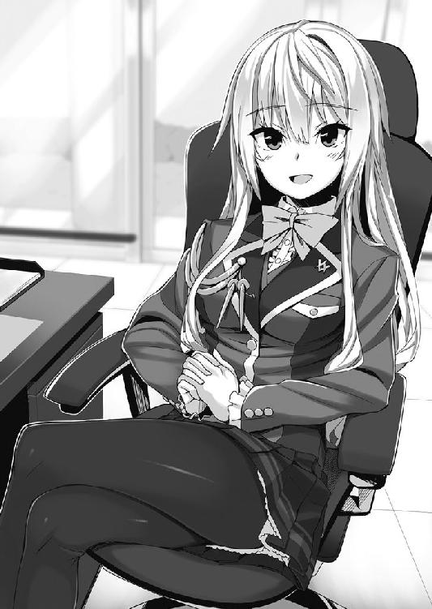
「綺麗なお名前ですね？」
「そ、そうですか？ そう言われると嬉しいです」
この名前、昔から『男みたいな名前だ』ってバカにされてきましたからね......。
「あ、でも生徒会長さんのお名前だって......」
あれ？ なんでしたっけ？
昨日、メールでやり取りした時に、シグネチャに書いてあったはずなんですけど。
えーっと......確か。
「申し遅れました、鈴千幸佳です」
そう！ 鈴千幸佳さんです！ 彼女は深々と頭を下げました。
「お名前、すごく似合っていると思います」
「ふふっ、名前負けしていなければいいのですが」
名前の音から『凛然』とした雰囲気を出し、更には『幸』せを『佳』しとするという慎ましい部分が、彼女にぴったりです。
「では、天野さん。自己紹介はこのくらいにしておきましょうか？」
「あ、はい。そうですね」
わたしは、彼女の正面の椅子に促され、そこに座ります。
鈴千さんは一度視線をわたしから外し、扉の方へと目を向けました。
「それでは警備員さん。後はお任せください」
「ん。じゃあ、よろしくね」
......？
警備員さんが、生徒会長にタメ口？
まあ、大人と子供ですし、彼女が雇っているわけではないのでいいのですが。
なんでしょう？ 妙な違和感があったような気がします。
「それで、本学園の取材ということでよろしいですか？」
「へ？ あ、はい。そうですね......よろしくお願い致します」
「こちらこそ、お願い致します」
わたしは、ＩＣレコーダーを取り出し、スイッチを入れて机の上に置きます。
それに了承してくれたようで、彼女は軽くうなずきました。
「さて、天野さん。いったい何を聞きたいのですか？」
「はい。えぇっとですね──......では、解任された生徒会役員につきましてお聞きしたいのですが」
「......なるほど」
いきなり、失礼で触れられたくないであろう質問をぶつけ、反応を窺ってみました。
しかし、彼女はまるで慌てた様子もなく──
「──彼女たちには、申し訳ないことをしてしまいました」
「え？」
まるで普通の会話のように、喋り始めました。
「彼女たちが解任されたのは事実です」
「え、えと......？」
「知ってのとおり、生徒会役員になるということは、様々なメリットがあります。進学、就職、コネクション、社会的信頼等々、並の待遇ではありません」
それは確か、編集長にも聞きました。
「その分、内部からの妬みや嫉み、敵が多くなってしまうのです。その快く思わない方々から、彼女たちはある容疑をかけられました」
「容疑......ですか？ 具体的には？」
「窃盗容疑、強盗容疑、恐喝容疑、殺人容疑、自殺関与容疑、同意殺人容疑、遺棄容疑、暴行容疑、住居侵入容疑、業務妨害容疑、詐欺容疑、往来妨害容疑、文書偽造容疑、売春容疑、放火容疑、麻薬所持容疑、騒乱容疑、公然わいせつ容疑等々──果ては航空機の強取容疑に関することまで」
「いやいやいやいやいやいやいやいや！ なんですか、その非常識な容疑の数は!?」
「なんでしょうね、この数」
落ち着いているようですが、とんでもないことです。それが本当であろうとも、そのまま容疑であろうとも、普通の状況ではありません。
相当妬まれているのか、それとも本当に行ってしまって解任されたのか。
「もちろん、彼女たちのことは信じています。それに罪を犯したという証拠は全くありません。しかし、これだけ容疑をかけられては、解任せざるを得なくてですね」
「あー......大変ですねぇ」
鈴千さんは疲れたような笑顔で、軽く溜息をつきました。が、すぐにハッとしたように表情を変えます。
「人前で失礼いたしました」
「いえいえ、気にしないでください」
何と言うか、わざとらしいほどにいい人っぽいです。
心からの善人というか、世間のことをあまり知らなそうなお嬢様といいますか。......年の差は一〇くらいあるのに、色々な面で勝てそうな気がしません。
まぁいいです。解任になった大体の理由もわかりましたし、かなりの情報です。
「えっと......一応聞きますけど、取材を受けてくださったということは、記事にしちゃってもいいってことですよね？」
「はい、構いません。むしろ、彼女たちにかけられた容疑や、その異常な状況を表に出してもらえるとありがたいです」
「わかりました。できる限りやってみます」
「よろしくお願いいたします」
彼女が深々と頭を下げたので、わたしも頭を下げます。
......あ、でも。
「あの、実際彼女たちにも会ってみたいのですが、連絡って取れますか？」
「え？ うさぎたちにお会いになるつもりですか？」
......うさぎ？
「すみません。一応彼女たちのことも、こういう取材などから守るためのものですので、個人を会わせてしまうことはできません」
「あ、はい......そうですよね」
この人、今〝うさぎ〟って言いました。ポロッとこぼれてしまったかのように......。
それってもしかして、その解任された方々のことでしょうか？
言った方がいいのでしょうか？ ......それとも、聞かなかったことにするか。
「それでは、本日はありがとうございました」
「あ......いえ、こちらこそです」
彼女のお辞儀につられ、わたしも頭を下げます。ここで取材は終わり......そういうことでしょう。
結局わたしは、うさぎの言葉の意味を聞くことなく、学園を後にしたのでした。
「さて、こんなもんでしょうかね」
家に帰ってからわたしは、今日聞いたことをまとめてみました。
元生徒会の方々は、何者かに恨まれたのか、それとも本当に犯罪を行ってしまったのか、とんでもない数の容疑がかけられているようです。
そのため、生徒会としても解任せざるを得なかった......というのが真相のようです。
「容疑をかけた人間が誰か......という感じを切り口にすると面白いかもしれませんね」
ただ、相手は学生ですし、そういうわけにはいかないんですよねぇ。
プライバシーとか、人間関係とか、そういうのをかなり傷つけちゃうことになっちゃうと思いますし。あくまで『銃を扱う学園の不祥事！』っていう切り口でないといけません。
「......はぁ」
結局のところ、規模の大きな内輪揉めで、銃を持った学生同士の派閥争いです。記事にしたところで、生徒たちがただただ傷つくだけになりそうですねぇ。
まぁ、最終的な判断は編集長に任せましょう。
「さて、もう少しまとめたら、編集長に送っておきましょう」
これだけちゃんとした情報なんですから、彼女だって誉めてくれるでしょう。
まぁ、自分の足じゃなくて、ほぼほぼ生徒会長さんから聞いたことですが。
......といいますか、これって全部生徒会長さんからの情報ですね。他の人から聞いた情報なんかは一切ありません。
でも、あれだけちゃんとした人からの情報ですし、間違えはないでしょう。
だって、生徒会五人のうち、四人が容疑をかけられているのに、彼女だけ何もないんですから。
「......え？」
彼女だけ何の容疑もかかっていない？
......そんなことってあるのでしょうか？
他の四人はとんでもない数の容疑がかかっているのに、彼女だけまるで何もない。
それどころか、他の四人がそんな状況にもかかわらず、責任を取る立場の彼女はやめていない......。
......おかしくないですか？ 不自然じゃないですか？
「もしかしてこれって......」
四人に容疑をかけたことに、生徒会長さんが関わっている？
「でも何のために？」
......いえ、いくらだって想像はつきます。
たとえば、武器の横流しをしているところを、四人の生徒会役員に見つかったとか。
たとえば、横領をしているところを、件の役員たちに見つかったとか。
いずれにせよ、生徒会長さんのことが怪しく思えてきました。......これはやはり、解任された四人に会って話を聞いてみた方が──
──ゴァァァァァァァーーーーーーン！
「なっ!? なんですか！」
くぐもった爆発のような音と共に、部屋の床が大きく揺れました。
地震ではありえない、突き上げるような瞬間的な揺れです。それに、それなりにお家賃のするタワーマンションです。耐震構造だってしっかりしているはずですが......。
部屋のテレビや観葉植物は揺れ、天井から埃のようなものがパラパラと落ちてきます。
「......」
とりあえず家具の揺れは収まり一安心です。
と、ふと窓の外を見ると、煙が上がっていることに気が付きました。急いでベランダに出てみると、二つ下の階から軽く火が出ています。
どうやら、そこが爆発の原因のようです。
「ガスでしょうか？ それとも何か別の......？」
そんなことを思いながら、外に目を向けてみると......。
「......え？ なんですか、これ？」
わたしの住むマンションから見える範囲で七件......火災が起きていました。
それも、どれも同じように......まるで何かが爆発したかのような。
「あっ！ 連続一斉爆破事件！」
思い出しました......。
これはきっと火災ではありません。編集長からも言われていたあれです、爆破事件です。
えーっと、下の下の階は、確か看護師の方が住んでいたはずです。彼女とはさっき、マンション前で軽い挨拶をして「今日は夜勤だ」と言ってましたし、命は無事でしょう。
しかし、あんな何でもない方がそんな事件に巻き込まれるなんて、本当に無差別なんですねぇ。
「はぁ......無差別なものに巻き込まれるなんて、ついていません」
犯人はいったい誰で、何の目的でやっているのでしょう？
「意外と、無差別じゃなかったりするのかもしれませんね。本当は何かの目的があって、無差別に見せかけただけ......だったりとか。まぁ、わたし程度が推理しても、わかるようなことじゃありませんね」
そんなことを呟いた時でした。
「ん？」
ＰＣメールの受信音です。
部屋の中に戻って確認してみると、
『件名：本日はご足労いただきありがとうございました』
どうやら、生徒会長さんからのメールのようですね。
『ご無事ですか？ 先ほど起きました爆発事故ですが、私の記憶が確かならば天野様の住んでいらっしゃるマンションではありませんか？ もしご無事のようでしたら、ご連絡いただければ幸いです』
わざわざ心配してくれて、丁寧な方ですねぇ。
「......」
......本当にそうでしょうか？
さっきわたしの中で考えた『彼女が怪しい説』ですが、忘れたわけじゃありません。
もちろん継続して怪しいと思っています。
そもそも、彼女はなんでわたしの住所を......住んでいるマンションを知っているのでしょう？ 教えてなんていません、名刺にも家の住所は書いていません。
そう思うと......今回のこれ......本当に無事を確認するための行為なのでしょうか？
もしかしたら、無事かを確認するためというより──
「死んだのを確認するためだったり？」
さっきの爆発、彼女がわたしに害を与えるためにやった行動なのでは？
本当は無差別なのではなく、彼女にとって都合の悪い人間を消すためだとか......。
いえいえ。だとしたら、わたしの部屋を直接狙うはず。それをしなかったということは......警告？ そう......きっとそうです。
あまりにメールのタイミングが良すぎます。
──これ以上深入りするな。次はお前の部屋がこうなるぞ。
そういうことでしょうか。
背筋に、とんでもなく嫌な汗をかいてしまいます。
「これ以上、関わらない方がいいんでしょうか？」
......関わるべきじゃないでしょうね。
思っていたよりも数段きな臭く......とんでもなく危険なようです。
「生徒会長、鈴千幸佳さん......思った以上に危険な方のようですね」
とりあえずこの日は、マンションではなく、近くにあるビジネスホテルに泊まることにしました。
さすがにこのままでは危険ですし。
潜入四日目
「ふぅ......」
爆発事件の翌日、わたしはビジネスホテルで目を覚まし、何事もなく夜を迎えました。
追手的な誰かが訪ねてきた時のために、偽名にしてみたり、タオルとポットでトラップを作ったりしてみましたが、全くの徒労に終わってしまいました。
むしろ、掃除のおばさんをケガさせてしまったり、ルームサービスのお兄さんを気絶させてしまったり、マッサージのお姉さんを激怒させてしまったり、ジュースを買って帰ってきた時に自分が引っかかったり、散々でした。
「うむー......」
命まで狙ってきたわけでもありませんし、警戒するほどではないのかもしれませんね。
もしかして、この警戒態勢は徒労に終わるのでしょうか？ まぁ、それならそれでいいのですが......。
このままビクビク怯えながら、小動物のように生きていくなんて願い下げです。
「あ、小動物といえば......生徒会長さん、確か『うさぎ』って」
そうだ。思い出しました。
解任された彼女たちの話をしている時に、ポロッと『うさぎたちです？』と言っていました。
あれはいったい何だったのでしょう？
うさぎ......ウサギ......兎......ＵＳＡＧＩ......。
他にも何かないかと、持ってきたノートＰＣで『うさぎ』を検索してみると、
──うさぎ：警察の隠語で脱走犯
脱走犯。
「......もし解任された四人が、解任されたのではなく『自ら辞めた』のであれば──」
生徒会長の何かを見てしまい、巻き込まれる前に生徒会から逃げ出した。
「つじつまは合います」
でも、あくまでこれは全部想像です。
一体、何をどこまで信じていいのでしょう？
これ以上考えても、わたしの頭では何も思い浮かびません。
もうちょっと思考を柔らかくできればいいのですが......。と、外を見ると、いくつかの飲み屋さんがありました。
「......思考を柔らかくするには、適度なアルコールは効果的と言いますし」
行ってみるとしますか。
もはやわたしの思考は、昨日からの怯えた様子から一転「お酒飲みたい！」に変わりました。
命を狙われているというのに、楽観的と思われるかもしれませんが、人間お腹も空きますし、目の前に欲望を駆り立てるものがあれば、酔いたくだってなります。人間なんてそんなものなんです。
ホテルを出て、飲み屋の方に歩いていくと......。
「......？」
目の前を通った人から嗅いだことのある臭いを感じました。
えーっと、なんでしたっけこの臭い？
「ああ、昨日学園で嗅いだ、あの臭いです」
そう、火薬の臭いです。銃から放たれる、あの独特の臭い。
普通であれば、そんな人が目の前を通ったら大騒ぎですが、今に関してはそれほどの違和感もありません。
だって今わたしの前を通った人は、いかにも軍人って感じの外国の方です。
きっと、この近くに駐留している基地の方なのでしょう。
その方は、わたしの目指している飲み屋さんの一角にあるバーに入っていきました。
「......」
ふと、さっきのあの言葉が、頭の中に浮かびました。
うさぎ。
うさぎ──ＵＳＡＧＩ。
「ＵＳＡＧＩ......ユーエスエージーアイ」
アルファベットで分けてみると──
──ＵＳＡ--ＧＩ
アメリカの兵士になります。
「もしかして......彼女の言っていた〝うさぎ〟と何か関係があるのでしょうか？」
銃を扱う学校ですし、何らかの関係があるのかもしれません。
彼自身に関係あるかはわかりませんが、もしかしたら何かそれにつながるヒントは得られるかもしれません。
わたしも彼に続いて、そのバーに入ってみました。
カランカランとドアの内側につけられたベルが鳴り、お店の人がこちらに声をかけます。
内装は普通のバーと変わらず、特に怪しいところも、基地の方々御用達な感じもしません。
店内にはわたし、女性で金髪のバーテンさん、軍人さんとそのお連れさん、男性が一人、青髪と栗毛の女性が二人の計七人です。
まあ、とりあえず注文しましょう。
「......えーっと、レッドアイとチーズの盛り合わせをお願いします」
「かしこまりました」
......あれ？ ちょっと違和感です。いつものであれば、年齢確認だのなんだのされるのに、この店はわたしくらい小さい子にも、普通にお酒を出すんですね。
まあ、自分で言っていて、ちょっと悲しくなりますけど......。
「お待たせしました」
「どうも」
出てきたカクテルに口をつけると......なんだか分量が変な気がします。
レッドアイ自体ビールとトマトジュースを混ぜたもので、苦みがあるんですが、それにしても苦いような......変な味です。
「あの、これ......ビール多すぎませんか？ なんか、あんまりおいしくない気が」
「......失礼しました。お代は結構ですので」
「そうですか」
まあ、多少まずくても、タダなら全部飲みます。アルコールには変わりありませんし、苦めのレッドアイではなく、トマトっぽいビールだと思えば、まあいけなくもないです。
次のが欲しいので一息で飲み、あわよくばもう一回失敗してタダにならないかと同じものを頼もうとすると、
「おにゃじもにょで」
......？ 呂律が回らなくなっていました。
「ふぇ？」
いくら一息と言っても、この程度で酔う筈がありません。
どういうことかと店員さんの方を見ると、お客の男性の方に目配せしています。するとその男性客は──
「はい、それじゃあちょっとこっちに来ようか？」
そう言ってわたしの肩に手を回します。
「うぇ？ これっひぇ!?」
......まずいです。
これはもしかしてとんでもなくまずい状況なんじゃないでしょうか？
変な人に変なところで変なことされて、頭を変にされちゃうんじゃないでしょうか？
目配せしていた店員もグルだから、わたしに年齢確認も何もしなかったんですね。
件の軍人さんに助けを求める視線を送りますが、携帯に夢中でこちらにまるで気が付いていません。
「......あいつにばれないように、トイレにでも連れて行ってちょうだい」
「はいはい、了解」
面倒くさそうなバーテンに、男は軽薄な笑みを浮かべます。
やばいです！ これは本当にやばいです！ もしかしたら外国に売られちゃったり、内臓とか持って行かれちゃったりするのでしょうか？
想像は嫌な方へ嫌な方へと膨らんでいきます。
「......よっと。ちょっと静かにしててねー」
「ふぐぅ......」
力が全く入りません。
わたしは肩を抱かれたまま、酔った人間を運ぶようにトイレへと連れて行かれます。
そしてドアが閉められ、鍵もかけられてしまいました。
ああ......まさかこんなことになるなんて。しかも、やるべき取材とはまるで別のところで。
「お嬢ちゃん、大丈夫だよー。すぐ終わるからねー」
「......うぅ」
どんなことをされてしまうのだろうと、絶望感でいっぱいになっていると、男は携帯を取り出して──
「状況開始デス」
そう言い放ちました。
その瞬間──
──ダァン！ ──ズガガガガガガガガガ!! ──バララララララララッ！
店内から銃声が聞こえてきました。
「むぅ!? ら、らりがおこっへ！」
「ああ、大丈夫ダイジョーブ！ もう終わるから、静かにしてくださいネー」
そう言った男の声は............女の人でした。
しかも何か、どこかで聞いたことがあるような......。
そのまま数分、店内からは何人かの男のうめき声と、殴るような音、人が倒れる音、たまに銃声が聞こえてきました。
そしてさらに数分経つ頃、その音は全てやみました。
「......終わりましたかネ？」
男性はもう、隠す気もないとばかりに女性の声でそう言います。
「全く......作戦ギリギリであなたが入ってきた時はビックリしましたヨ。で、まあ追い返すのも不自然だと思ってトイレに連れてったわけですヨ。わかる？」
「ひょうなんふぇふは？」
「......ナニ？ 今『長男ですか』って言ったんデスカ？ 残念ながら次女ですネ。まあ、何が残念かはよくわからないデスけど」
そうなんですか、です。
「ああ、そっかそっか、そでしたネ。体の自由をなくす薬も、ウチらが盛ったんだっけ？ まあ、そのうち元に戻るから大丈夫ですヨ」
ものすっごく不安をあおる笑顔です。やけに明るい......責任とかそういうものを何も考えてない笑顔です。
っていうか、この人......いえ、おそらく外の人も仲間でしょうし、この人達の方が正しいかも知れませんが、それはともかくいったい何なんでしょう？
『こっちは終わったけど、そっちは平気？』
扉の向こうから声が聞こえました。察するに、さっきのバーテンのようです。
......やっぱりあの人も仲間なんですね。
「ああ、平気ヘーキ。全然オッケーですネ！」
わたしは全然オッケーではありませんが。むしろ未だに足腰立ちませんが？
「とりあえずそっちに出マスね」
すると扉が開き、わたしは再度担がれて店内の方へと戻ります。
「......うぁ」
呂律の回らない口で、驚きの声をあげます。
倒れている軍人さんと、その連れの人。顔がとんでもなく膨れ上がっています。
店内もグチャグチャで、いたる所に穴......そして何かを叩きつけたかのような跡が残っていました。
「......ひじょうしき......」
まるで銃撃戦でもしたかのような後......というか、まんま銃撃戦の後ですよね、これ。
「えーっと、これであたしの分の横流し容疑は解決っと」
金髪の女性バーテンさんがバインダーを取り出し、そこに何かを書いていきます。
「こいつがいる限り、銃器横流しの容疑はエイにかかったままデスよ？ 犯人引き渡しまでは容疑者なんだカラ。それまでは油断しないようにしましょうネ」
わたしを担いでいる男装女子が、よくわからないことを言っています。
「では次に解決するべき容疑は私のですね。とりあえず、ビッチ疑惑を晴らすため、売春の容疑から何とかしたいのですが......」
女性客のうち、青い髪をした方がそう言いました。
「......それは多分無理......容疑が晴れても......ついて回る」
もう一人の栗毛の女性客がそう言います。
男装さん、金髪バーテンさん、青髪さん、栗毛さん。その四人が謎の会話をしています。
何なんでしょうか、この状況は？
「あーっと、この子に聞かれちゃまずいデスし、その話はあとアト！」
「そうだな、わかったよ」
「承知しました、とりあえず安全なところに連れて行きませんと。状況からすると、おそらく一服盛られてファックされてしまうと勘違いしているはずですから」
「あたし達、全員女だし、それはないんじゃないか？」
「あら？ やる気になれば大丈夫ですよ？ まあ、その気はありませんが」
「まあ、ウチはありますけどネ......百合の気」
......？ なんだか聞いたことがあるフレーズです。
「......早くしないと......警察とか来るかも」
「ああ、そうでしたソーデシタ。じゃあ解放してあげましょうかネ」
と、三人の視線がふっとわたしの顔に集まります。
すると......。
「あれ？ その小さい子って......」
「あら？ その変態に好まれそうな体躯は......」
「あ......この人......」
な、なんですか？ なんかよくわからないんですが、三人が不思議そうな目でわたしを見ています。
そしてわたしを担いでいる男装さんが、わたしを降ろして、まじまじと顔を見ると、
「ああ、この子ぉ！」
は？ なんですかなんですか？ なんでみんな知ってるかのようなノリなんですか？
誰なんですか誰なんですか？ わたしの知り合いには、銃を使うような人はいませんよ!?
「ああ、みんなこの子のこと知ってるんだ？ イヤー、この子だよこの子、この子にしようと思ってたの」
「いや、知ってるってほどは知らないけどな。まあ喋ったことがある程度だ」
「私も同じです。二言三言交わした程度です」
「......この子......たぶん......私の親友」
親友!? 銃を使う人も、そんな喋り方をする人も、わたしの知り合いにはいないはずですが!?
「縁がありますネー。やっぱりこの子、にしましょうネ」
「こんなちびっ子で、本当に大丈夫なのか？ 二六でこんな感じなんだろ？」
大きなお世話です。
「そうですね。私たちの今後を担うのがこのロリでは......クソほど不安が残ります」
とんでもねー言いぐさです。
「......親友の悪口は......許さない」
だから、いつ親友に......。
「いいのイーノ。決定ケッテー。全員に拒否権はありまセン！」
一体この人達は何なんでしょう？
「アナタ、雑誌社の人ですよネ？」
「──!?」
どうして知っているんでしょう？
「あのさ、アナタに頼みたいことがあるんデスよ。まぁその見返りに、アナタが調べてる四人の解任の話と、『うさぎ』の話を聞かせてあげマスから」
......!? それもどうして知っているのでしょう？
わたしの知らないところで、いったい何が起こってるんですか？
「もちろん強制はしないから。その気になったらいつでも連絡してくださいナ。連絡方法は......そうデスねー」
彼女はわたしの耳元でボソボソと何かを喋ります。
薬のせいで意識が飛びそうなわたしは、何とかその言葉を覚えようと耳を傾けます。
「......え？ しょんなほうほうなのですか......」
耳を傾け、そして耳を疑います。
......なんでわざわざそんな方法で？ というようなものでした。
そしてわたしの意思は少しずつ白くなっていきます。
床に寝ているわたしの肩を、男装女子がポンと叩きます。
「それじゃあ、待ってますからネー」
「そうは言っておりますが、ご無理をなさらないでくださいね」
「つーか、来られたところで迷惑だし、来なくていいからな」
「......来る。親友同士......心で繋がってるから......わかる。......来るって声が聞こえる」
四人が四人とも、好き勝手にいろんな意見をわたしに浴びせます。
そしてそれぞれが荷物をまとめると、ドアの方へと向かっていきます。
っていうか、一番最後の意見......。親友なら、心がつながっているなら、気が付いてもらえませんかね。
今わたしが、最もあなたたちに願っていることは『あなたたち薬のせいで動けないんだから、とりあえずは安全なところまでに運んでくれませんかねー......』です。
もちろん自称親友と残り三人は、そんな気持ちに気づくこともなく、ドアを開けると出て行ってしまいました。
こんなところで、このまま寝ちゃう方がさっきの状況よりよっぽどやばい気がするんですけどねー。
はぁ......危ない人が来ないのを祈るのみです。
そんなことを思いながら、わたしの意識は眠気の中に落ちていきました。
潜入五日目
気が付けば、わたしはビジネスホテルの一室にいました。
「......なんでっ!?」
ベッド上で上半身を起こして、辺りを見回します。
なんでこんなところにいるのでしょうか!? しかも、服も着替えさせられています！
昨日の記憶を辿ってみます。
えーっと......外国人の後をつけて......バーで薬を盛られて......そのあと......。
「うわぁ」
なんだかものすごく嫌な想像が膨らみます。
もしかしてあの外人......寝ているわたしを手籠めに......。
ものすごく心配になり、自分の体の色んなところをまさぐります。
「......大丈夫そうですね」
ヒリヒリするところもなければ、体から変な臭いがすることもありません。
なんて考えている間に、少しずつ眠気が覚めてきました。
「そうでした！ この部屋は自分でとったものでした！」
そうですそうです。昨日、下の下の階が爆発して、ここに避難してきたんでしたっけ。そしてその後、飲みに行こうとして、薬盛られて、変な男にトイレに連れ込まれて......。
「......濃い一日でしたね」
中々味わえない修羅場を二つも経験してます。
それで......なんだか、怪しい女の人達に話しかけられて......。バーで放置されたはずなんですけど、なんでここにいるんでしょう？
とりあえず、なにか手掛かりになる物はないかと色々探ってみると、わたしの服に黒くて長い髪がくっ付いていました。
「......誰のでしょう？」
依然、謎は謎のままです。
「まあ、命も貞操も無事のようですし、それならそれでいいでしょう」
わからないことは悩むだけ損です。
「あ......そういえば」
あそこでわたしを担ぎあげていた、あの男装女子......何か言ってましたね。
そう、確か『うさぎ』の話をしていました。
真一学園の生徒会長の言っていた謎の言葉。......疑おうと思えば、いくらでも疑えます。
うさぎが何なのか......昨日のバーにいた彼女たちが何者なのか......。
「はぁ......どうしましょうかね」
ここで引き返すべきでしょうか？
それとも進むべきでしょうか？
これ以上は、本当に危険ではないでしょうか？
ドア一枚隔てた向こうで行われていた銃撃戦......。
進むのであれば、わたしはその向こう側へと足を踏み入れなければなりません。
砲煙弾雨に、自分の意思で身を投じるわけです。
命の危険があるような気がします。もの凄く危険な気がします。
普通は絶対行きません。知り合いなんかが『行く』なんて言ったら『バカなんですか？』と言うでしょう。
そんなあからさまに怪しいのに巻き込まれに行くなんて、正気の沙汰じゃありません。
ありません......が。
「......行った方がいいんでしょうね」
怖いです......すごく怖いです。
絶対行っても碌な目に遭いません。昨日も碌な目に遭ってませんし......。
でも、なんだか確信があるんです。
あの学園について、まだ誰も知らないことが知れるんだって。そしてそれは、全てのマスメディアの中で、わたしが今一番そこに近いんだって。
それほど職業意識の高くないわたしですが、そんなわたしでも......一記者としてのプライドはあります。
目の前にある宝箱が、世界中でわたしにしか開けられないのであれば、中身が宝石だろうが悪魔だろうが、絶対に開けるべきです。逃しちゃいけないってそう、告げてます。
だって、わたしがその雑誌を買った読者だったら、ここは絶対に行ってほしい。この続きを読みたい。
だったら、行くしかないじゃないですか！ それがわたしの仕事なんですから！
「よしっ」
わたしはベッドから抜け出し、綺麗に畳まれていた真一学園の制服に着替えます。
やはり記者として、どうしてもこの秘密に、首を突っ込みたくなってしまったのです。
「......ちょっと怖いですけど」
でも、ここで動かなければきっと何も進みません。
「さあ、行きますよ！ わたし！」
「......とは決意したものの」
まあ、やっぱり怖いのです。
あの後も「やめようかな......」「でも、行けば記者として！」なんてことを繰り返し、うだうだと時間をつぶしていました。
あれから半日くらい経ってますね......。
結局、四本ほど缶ビールを飲んで、恐怖感を麻痺させてから、やっとこの部屋を出る決心が付きました。危険はかなりあると思いますが、もう半分くらい首を突っ込んじゃってる気もしますし、行くしかないでしょう！
わたしだって記者の端くれです！ 彼女たちを付け回して、丸裸にして見せます！
「よしっ！」
そしてわたしは、ある場所に向かったのです。
あの時、耳打ちされたように、わたしは深夜の〇時丁度、駅前にある監視カメラの前に立ちました。
『駅前に監視カメラがいくつかあるでショ？ 深夜〇時、そのうち三台に同時に映る場所にいてくだサイ』
これが彼女から言われた『連絡方法』とやらです。
「......で、どうすればいいんでしょうね？」
そしてそのまましばらく待っていると......。
──ヴヴヴヴヴヴ ──ヴヴヴヴヴヴ ──ヴヴヴヴヴヴ
ポケットの中で携帯が震えだしました。
「......きましたか」
例の相手かと思い、電話をかけてきた主を見てみると、
「お母さん？ ......いや、気分的にかなりシリアスになってたんですけどね」
はぁ......なんだか気が抜けてしまいました。
「もしもし。どうしたんですか、こんな夜遅く？」
『もしもし、澄緒？ 今、あなたの高校時代の......えーっと、向田さんから電話がかかってきたのよ』
「向田がですか？」
小学校時代からの友人の名前です。彼女とは、中高時代部活も一緒でした。
親友ではありますが、お互い住んでいる場所も職場も遠いので、成人式以来会っていません。
「それで？」
『今から言う住所に、手紙があるからそれを見てほしいって』
「......？ よくわからないけど、ありがとう。それでその住所って？」
『メモはいい？ 言うよ？』
「うん、大丈夫だから」
記者である癖として、メモは取りだしやすいところに入れてあります。わたしは片手でそれを取り出して、書き留める準備をしました。
けれど結果的に、その行為は全くの無駄になったのです。
『○○市○○区○○。○○ー○○ー○ ○○○号室』
「──えっ!?」
思わず声をあげてしまいました。
そして体中に鳥肌ができるような、ぞわっとした感覚がわたしを襲います。
『そこに手紙を置いてあるって』
「う......うん、わかりました。ありがとうお母さん」
『うん、それじゃあお休み』
......お母さんの言葉に、うまく答えることのできないまま電話を切りました。
そしてしばらくの間、わたしはその場に呆然と立ち尽くします。
なぜならば──
「それ......わたしの家の住所じゃないですか」
お母さんから告げられた住所は、正真正銘わたしが一人暮らししているアパートの住所です。ですが、年賀状のやり取りもメールで済ませている向田が、それを知っているはずありません。
そもそも、今の場所は急遽引っ越した場所なので、母も知らない住所です。それをどうして彼女が？
というか、いったいどういうことでしょうか？
「とりあえず、行ってみるしかないですね」
嫌な汗をかきながら、わたしは自宅に戻ることにしました。
「......」
自宅に戻ると、言われたように手紙が置いてありました。しかも鍵をかけたはずなのに室内にです。
......これはもう、ホラーとかの取材に変えた方がいいような気がしてきました。
恐る恐る手紙を開けてみると、
『○○市○○区○○ ○○ー○○ー○○ ○○ビル内○階 に次の指令があります』
そんなことが書いてありました。
しかも文末には、うさぎの絵が描かれています。
「今度は......わたしの職場じゃないですか！」
なんですかこれ？ なんなんですかこれ!?
パニックです！ 完全にパニックです！ 頭が混乱しています！
三〇分前の自分に会ったら言ってやりたいです『絶対行かない方がいいです！』って。
やめとけばよかったです！ もう嫌な予感しかしません！
「うぅ......でも」
でもここでやめた方が、もっと怖い目に遭いそうな気もします。
もう何もかも忘れてこのまま家で寝たとしても、一回鍵破られてますし、正体がつかめるまで動いた方がまだいいような気がします。
「行くしかないでしょうねー」
心の底から溜息が出ます。
嫌です......本当に嫌です......。
その後、会社に行くと、セキュリティはすべて解除され、わたしの机に『喫茶木馬にてお待ちしています』との手紙がありました。
そこに行くと次はメールが......。
よく行くコンビニ、会社帰りに時々見に行くペットショップ、お給料日にだけ立ち寄る飲み屋、わたしの口座がある銀行三つ。これらの場所へと何度も移動させられました。
さすがに、これだけされれば理解ができます。
「わたしの個人情報は、全て調べ上げられてるってことですね......」
半日程度しかない時間でこれだけ調べるなんて......ゾッとします。
すると......。
──ヴヴヴヴヴヴと、ポケットの中で携帯が震えだしました。
相手は『非通知』でした。......わたしは、非通知は拒否してる設定のはずなんですが。
まあ......もう何があっても驚きません。
「もしもし？」
『合格デスね』
合格しました。
よくわかりませんが、合格したようです。ただ、何に合格したかわからないので、全く嬉しくありません。
「えーっと、わたし、何に合格して、そちらはいったい誰なんですか？」
『あなたが探している者デス。で、個人情報が調べ上げられてるって気が付いたから合格』
まあ、わたしだってバカじゃないんですから、さすがにそれはわかります。
『それじゃあ、ここからが本番デス』
「......合格じゃないんですか？」
『本番に挑む資格ができたということでス。それじゃあ、電話切るからよろしくね』
「あっ！ ちょっと待ってくだ──」
電話からは通話が終了したことを知らせる音が鳴っていました。
「こっちの言うことは聞く気がないんですかねぇ？」
いえ、さっきの独り言を聞いていたようですし、こちらの言うことは電話なんて無くてもわかるのでしょう。
それにしても、これから散々走り回らせておいて、まだなんかさせる気なんですか。
......はぁ。
心の中で、そんな愚痴をこぼした時でした。
また携帯が震え、メールを受け取ったことを知らせてきます。
次の指令を見てみると──
『真一学園、旧校舎にてお待ちしております。
なお、アナタの認証はすでに登録してありますので、どうぞ正門よりお越しください』
──真一学園。
「......ふぅ、やっと会う気になってくれましたか」
どんな人なのでしょうか？ 怖いです......すごく怖いです。
でも、ここまで来たら行くしかありません。
なぜだかわかりませんが、引き返すという考えが全く浮かびません。
記者としての職業意識的な何かなのでしょうか？ わたしが元々持っていた好奇心なのでしょうか？ それとも深夜のテンションと、歩き回った疲れと大量に摂ったアルコールのせいで正常な判断ができなくなっているのでしょうか？
たぶん、三番目が一番近いと思いますが、それならそれでいいでしょう！
「行ってやります！」
「......なんか、不気味ですねぇ」
元々無機質な作りだった校舎は、深夜ということもあり、ＣＧのようなよくできた気持ち悪さを演出していました。
不規則に並んだライトと満月のせいで光源がブレていて、この世ではないおかしなところに迷い込みそうな雰囲気でした。
──ピーッ！ ──カシュン
光彩認証と静脈認証の機械が不思議な音を立てると、今まで赤かったランプが緑色に変わります。
「問題なく開いたってことですよね......」
真っ暗な校舎に入って下駄箱を抜けます。
「で、どこに行けと？」
わたしがこの学校で知っている場所なんて、生徒会室しかないんですけどね。
すると、今度はピンポンパンポーンという、校内放送のチャイムが鳴らされました。
『──天野澄緒さん。天野澄緒さん。旧校舎、生徒会室までお越しください』
そしてまたピンポンパーンポーンと、放送を終えるチャイムが鳴らされます。
「......旧校舎？」
確かこの前来た時に見た、校庭にあったあれですよね。
わたしは近くの扉から校庭へと出て、旧校舎へと向かいます。
グラウンドを歩き、そこに辿り着きますが、窓から明かりが漏れてるということもありません。
「......本当に誰かいるのでしょうか？」
新校舎に比べて二回り以上小さい気もしますが、普通の学校よりちょっと小さい程度です。まあ新校舎がでかいだけなんですけどね。
とりあえず門をくぐり、旧校舎内へと足を踏み入れます。
「......真っ暗ですね」
入ってみると、旧校舎という割に埃っぽくもなく、それなりに綺麗です。
クラスがＡ組からＥ組まであり、わたしは丁度Ｃ組の辺りにいるようでした。
つまり、左右のどちらにでも行けるようになっています。
「どっちに行けばいいんでしょうかね」
ふと教室前に貼られたプリントを見てみると──
『天野澄緒さん。無事に辿り着いてくださいネ！ 無事な道は用意していマス！』
──と、そう書いてありました。
「無事に辿り着いてくださいネ──ってことは、無事じゃなくなる可能性があるってことですよね」
これまでのこととか、この学校のことを考えると、この先はトラップが満載のような気がします......。
実銃なんかを普通に扱う学校の、無事じゃないタイプのトラップ......。
「うぅ......」
考えただけで寒気がします。体が震えます......。
ものすっっっっごく慎重に進めば、もしかしたら、わたしでもそれらを見破れるかもしれません。
方法は映画とかマンガで読んだことがあります。ピアノ線に引っかからないように、重りを付けた紐を垂らして、それを前に出しながら線があるかを見極めたり、赤外線を探すためにタバコの煙を吹きかけたりするんですよね？
トラップがあるということさえわかれば、わたしでもどうにかできそうな気がします。
......気がするんですが。
「これは、ちょっとまずいかもしれませんね」
実は......そうもいかない理由が出てきました。
悠長にしている時間はありません。理由は言えませんが、まあ色々と、少々せっぱつまってきました。
もはやわたしには、ゆっくり進むという選択肢は残されていないようです。
「自分ではまともに解除できない。だからといって時間もない。これは......運に身を任せて進むしかありませんね」
正直、わたしは変に運が悪かったりします。
物語の主人公ならば、当初は悪いと思っていた出来事が、結果的にいい方向に行って『おお、あの不運は伏線だったのか！』なんてなったりしますが、わたしの場合はまるで逆。
運がよさそうなふりして、結果的にマイナスになったりします。
アタリ付きの自販機でジュースを買えば、人数分を買った最後の最後でアタリが来たことがあります。......一本余りました。
値切りに値切って大型テレビを安く買い、もらった福引券で一等の大型テレビを当てたことがあります。......部屋が狭いです。
ＲＰＧをやれば、ダンジョン内で一度も迷うことなくボスに辿り着いたりします。
その途中で手に入れられる宝箱やイベントは、自然と全部スルーすることになるので、装備がいつまでも貧弱です。
どうです？ 運がいいのに、全くついてないでしょう？
「勘とか運とか信じたら、たぶん、猛烈に酷い目にあいます」
たぶん彼女たちの元に辿り着く頃には、二〇回くらい死んでると思います。
宝箱を全てスルーするスキルは持っている気がしますが、逆にトラップは全部引っかかるでしょう。
「......」
全部引っかかる？
「あ......」
なんかの番組で見たことがあります。
地雷除去作業をするのに一番効率がいいのは、地雷を全て爆発させることだと。
その時は、重機を改造したもので、バンバン地雷を潰して爆発させていました。
ということは、これも全部発動させればいいんじゃないですか？
「でもどうやって......」
辺りを見回すと、校舎の脇に放置されている古タイヤが目に入りました。
「これ、転がして先行させて、全部潰してもらいましょう！」
ですが......ですが......。
「いや......いやぁ......」
わたしの予想では、これでうまく行くはずでした。
いいえ、途中まで順調に進んでいました。
わたしの前を転がるタイヤは、様々なトラップを発動させて行きました。
爆音、轟音、これでもかというほどに響き渡りました。
完全に全てのトラップを発動させたようで、わたしは意気揚々と廊下を進みました。
すると。
──ダァン
という轟音を鳴らして、一瞬なにかが光りました。
ふと横を見ると、そこには赤外線のセンサー。
どうやら、少々高い位置にあったらしく、タイヤの大きさではそれをスルーすることになってしまったようです。
そして、わたしはそれを発動させてしまい......その凶弾が......。
「あ......ぁ......あぁぁぁぁぁ......」
神様......どうして私がこんな目に遭うんでしょう。
体に力が入りません。膝がガクガクします。
......足元を温かい液体が伝っていきます。
──ピチャン ──ピチャン ──パシャー............ン！
「あぅ」
その液体の上に、尻もちをつくような状態で倒れてしまいました。
今日ここに来たことを心から後悔し、関わった全ての人間を恨みました。
やめとけばよかった......本当にやめとけばよかった......。
引き返すタイミングは何度もあったはずなのに、どうしてここまで来てしまったのでしょう。
「う......ぐぅ......」
涙が出てきました......。
うまくいったと思っていたのですが......詰めが甘かったようです。
自分を呪います。どうしてそんな判断をしたんだと。
油断していたところをやられ......この様です。
液体は留まることを知らず、わたしの意思に反してどんどんあふれ出ていきます。
「く......うぅ！ 止まって......止まってください......」
これ以上こぼれ出さないように、手で押さえ、何とかしようと、体に力を入れた時でした。
「──っ!? おい、まだ息があるみたいだぞ！」
廊下の端から声が聞こえました。
するとほんの数秒遅れて、四人の少女たちがわたしの方へと走ってきています。
「だ......れ......ですか？」
本来であればここで動くべきですが、もうそんな気力もありません。
わたしはもう諦め、そこでただただ、自分の状況を受け入れました。
「あの、大丈夫ですか!? もう少しくらい保ちそうでしょうか？」
青髪の少女がそう話しかけますが、わたしは首を横に振ります。
......遅かった、全てが遅かったんです。
そんなわたしに、金髪の少女と栗毛の少女は悲しそうな瞳で俯きました。
「悪かったな、あたし達のせいで」
「......ごめん......なさい」
「や......やめてください、そんな顔......」
どうか憐れまないでください......あまりに惨めです。
すると黒髪の少女だけは、わたしを憐れむような表情をせずに、嫌らしい笑顔を向けました。
「さて澄緒ちゃん。よくここまで辿り着きましたネ！ 情報はちゃんと教えてあげマス！」
「おい春、こんな時に何言ってるんだ？」
金髪の少女は気まずそうに黒髪の少女を注意していますが、彼女の言葉は止まりません。
「実はですネ、頼みごとがあったのですヨ。取引と言いますか、そのお礼に情報を教えようかと思ったのデス」
「おい！ この子はもう......」
「でもまあ、ウチらが頼みたいことを聞いてくれたら、それがそのまま『うさぎ』の情報になっちゃうのデス」
黒髪の少女は、少しだけ困ったような表情を浮かべると、こう続けました。
「......まあ、聞きたい情報は全部教えますヨ。なんというか、こんなことになっちゃって、本当に申し訳ないデス」
「......本当です......本当にそうですよ......なんでこんなことに」
「お詫びといってはなんデスけど、あなたの頼みごと、できることならなんでも聞いてあげるから......さあ、困ってること、解決してほしいこと、何でも言ってみてくだサイ！」
「......何でも......ですか？」
「うん、そんな風になっちゃったのは、ウチらのせいでもあるから、どんな依頼だって受けてあげマスよ」
「......そう......ですか」
なんでも叶えてくれるなら、何でも解決してくれるなら、もちろんわたしはこう言いますよ！
「下着を......」
「......したぎ？」
黒髪の少女以外は、ものすごく不思議そうな、困惑した表情を浮かべています。金髪の少女も、青髪の少女も同じようです。
さっきまで、まるで誰か死んでしまった時のような、そんな表情をしていたのに。
「えと......下着が......なんでデスか？」
あれ？ ああ......この人達たぶん、わたしが撃たれたって勘違いしてるんですね？ 血が止め処なく溢れ出てると思ってるんですね。
それは断じて違います......。
「お願いです！ 下着を買ってきてください！」
「あの......天野さんでしたよね？ 確認ですけれど、したぎとは......下着ですか？」
「なんでこのちびっ子、死ぬ直前に下着を欲しがってるんだ？ 変態か？」
「あ......長時間狙撃待機時用の......紙おむつなら......すぐある」
わたしは引き攣った笑いを栗毛の少女に向けました。
「こ、この際......それでいいです」
酔いで恐怖感をごまかすためにビールを沢山飲み、その後ひたすら色んな場所をたらい回しにされて、トイレに行く暇も全くなかったわたしは......なんというか......最後の最後に油断しているところの銃声で......その............決壊しました。
......二六歳にもなって......粗相......正直......死にたいです。
「......ジャージまで貸してくださって、ありがとうございます」
「ん。まあ、半分くらいはこっちのせいだしな」
金髪の少女が、苦笑いしながらそう答えます。
っていうか、ほとんどそっちのせいだと思うのですが。
あれから四〇分後、シャワー室で汚れを洗い流し、用意されたジャージに着替えたわたしは、旧生徒会室とやらに連れてこられました。
新校舎の生徒会室と比べて、ずいぶんと雑然としてるというか......木目調で、いろいろ古臭くて、昔の探偵ドラマのような部屋ですね。
まあ色々ありましたが、とりあえず生きていられただけでもありがたいです。
というのも、実は最後のあのトラップだけ実弾が入っていたらしく、まともに喰らってたら命はなかったそうです。
トラップは、平均身長以上の人間を想定した作りになっていたらしく、わたしの身長の低さでは、ギリギリ頭上をかすめるだけで終わりました。
発育が悪いことに初めて感謝です。
「......？」
あれ？ そういえば金髪のこの方って、確か......。
「さて、ようこそいらっしゃいまシター！」
黒髪の少女が、わたしの手を掴んでガシガシと上下に振ります。身長差もありますが、その勢いが強いせいで、わたしの体がグワングワン揺れて髪がボサボサになります。
「うあっ!? ちょっと、あのっ！」
「すみません。その子、脳が温かいタイプの性格をしておりまして、歯止めが利かないポンコツなのです。まあ、人に危害を加えるタイプのピエロだとでも思っておいていただけると助かります」
青髪の少女がそう言いました。
っていうか、それ、ものすごく厄介な性格じゃないですか？
んん？ ......この青髪。そういえば、この人も......。
「おむつ......サイズはどう？」
今度は栗毛の女の子です。......この子も見覚えが。
「あー......あんまりそれを履いてることを思い出したくないんですけど。まあ、サイズはちょっと大きかった気がします」
するとその子は、いきなり涙をポロポロと流しはじめ──
「......大きくて......ごめんなさい」
しゃくりあげるようにそう泣き始めました。
「ちょ、ちょっと！ なんですか？ なんで泣き始めたんですか？」
「ああ、そいつは全力で情緒不安定だから、あんまり気にするな」
金髪の少女がそう言って、さらに言葉を続けました。
「なんて言うか、乳歯を擬人化したものだと思ってくれ」
彼女は軽くドヤ顔をしていますが、わたしは青髪の少女と顔を見合わせます。
「あの方のたとえ、いまいち意味が......」
「お気になさらないで下さい、あの子は見た目と態度はツッコミですが、知識が著しく足りず、思考が空回りをしているのです。今のも、私のたとえに対抗しようとして失敗したのかと」
......何気にこの青髪の子、さっきから丁寧な口調で仲間の悪口を当たり前のように言っています。
「まぁ......なんというか、ちょっとかわいそうな人みたいですね」
結局、わたしはなぜここに呼ばれたのでしょう。
怖い目に遭って、死にそうになりながら辿り着いた先にいたのは、頭の温かいの黒髪さん、情緒不安定な栗毛さん、空回りな金髪さん、丁寧な毒舌の青髪さん。
わたしには運がないと言いましたが、もしかしたらここに辿り着いたこと自体が、とてもとても不運だったのでは......。
まあいいです。粗相しようが不運だろうが、皆さんが変人であろうが、わたしの仕事は取材をすること。そっちを早めに済ませましょう。
「あ、あの......えーっと、そろそろお話を聞かせていただいてもいいですか？」
「あーあーあー！ ゴメンゴメン、握手に夢中であなたのことを忘れてましたヨ！」
その握手している手は、忘れているはずのわたしの手なんですが......。
「あたしはリーダーの春！ お久しぶりですネ！」
お久しぶり？ ......わたしはこんな人と会ったことありません。
「あの、わたしは初めてです」
「ヨロシクですね！ 初めてちゃん！」
「それ名前じゃないです」
思った以上に変な人のようです。
あれ？ でもなんか......声とか喋り方とか、聞いたことがあるような気が......。外見は確かに見たこと無いはずなんですけど......なんででしょう？ どこかで会ったことがあるような気がするんですよね。
まあとりあえず、こちらも自己紹介をしないとですね。
「......天野澄緒。わたしの名前は『初めて』ではなく、天野澄緒です」
「ああ、そうそうそうだった。そんな感じの名前でしたネ。うんうん、昭和生まれっぽいいい名前だと思いますヨ！」
生まれ、平成です。
「あの......なんだかさっきから会ったことあるオーラを出してますが、わたし、あなたみたいな知り合いはいませんよ？」
こんな特徴的な人、忘れようとしても忘れられないです。
「まあ、そちらのお三方は別ですが」
わたしは目の前にいる、春さん以外の三人に視線を向けました。
そう、偶然にもこの方たちとはお会いしているのです。
制服ビッチさん、チョロ子さん、サイ子さんの三人です。
「ええ、そうでしたね。確かに私たちは、ラブホ街で一度お会いしていましたね」
「......お前ら二人、なんでそんなところにいるんだよ？」
制服ビッチさんはチョロ子さんを無視して言葉を続けました。
「響はどこでお会いしたのですか？」
「........................」
響と呼ばれたサイ子さんは、眼球だけをわたしに向けて、考え込むように少し唸ると。
「............じゃあ......私もラブホ街で......」
そう呟きました。
「アンタ、ラブホ街大好きなんだな......」
「違います！ そんな場所で会った覚えはありません！ この方とは、雑居ビルでお会いしたんです！」
「どっちにしろ、なんでそんな場所で会ってるんだよ......」
確かにそうですが。
「えっと、あなたは公園でお会いした方ですよね」
「まあ......あの時はどうも。アンタのアドバイスのおかげで、下着丸出しで歩き回らずに済んだよ」
チョロ子さんは軽く頭を下げます。
言葉はきつくて、ちょっと抜けてはいるみたいですが、根本的にはいい子のようです。
「いえ、気にしないでください」
それにあれは、下着こそ見えなかったものの、若干痛い感じになっていましたし......。
まあ、それは言わないでおきましょう。
なにより、痛かろうとあんな格好のまま歩き回ったら、男の人に襲われて、口に出すのもはばかられるような目に遭わされるかもしれません。
それこそ、この前わたしが校舎前で捕まりそうになった時、頭に過ぎった卑猥な拷問のような......。
......この前、捕まりそうになった時？
「あ......」
この喋り方！ この適当さ！ 会ってます！ 確かにわたしは春さんに会っています！
「あの時！ そうです。初めてじゃなくて確かに会ってましたよ！」
春さんはニヤリと笑って「でしょ？」と答えました。
「あの時、わたしはあなたに会って、そう、おっぱいを揉みました！」
「お前もう、完全に性欲の虜だな......」
チョロ子さんが引いた表情で私を見ています。
「で？ 会ったって気が付いたのは、どの時？ 校門前？ それとも補導した時？ あー、警備員の格好で学校を案内した時？ それとも飲み屋でトイレに連れ込んだとき？」
「......え？」
ちょっと意味が解らなくて、呆けていると。
「ああ、あれ全部ウチですネ。澄緒ちゃんのこと調べて、最終的にここに来るように誘導してたんデスよ」
そう、軽薄そうに笑っています。
「いや......あの......え？ ......何の目的でですか？」
彼女がなぜわたしを調べたのか、全く意味が解りません。
わたしはただ、学園に潜入取材しようとして、失敗して、春さんに容疑をかぶせただけで......。
......まあ、恨まれたり調べ上げられたりするようなこと......やってますね。
「何の目的......か。そうデスね、すごく簡単な話、頼みごとがあるのです」
「頼みごと......ですか？」
そういえばさっき、足元がビチャビチャになってあんまり聞いてませんでしたが、そんなことを言っていましたね。
「これは、ウチらにもあなたにもメリットがあることなのですヨ」
「わたしにもメリット......ですか」
彼女は少しももったいぶることなく、こう言い放ちました。
「ウチらを取材してほしいのデス。で、それを記事にしてほしい」
「え？」
「まあ、ものすごくぶっちゃけて言うとですネ。ウチらは、澄緒ちゃんが探してた『解任された生徒会役員』なのデス」
「元生徒会役員......。本当にですかっ!?」
完全に見失ったと思ってたその名前が、こんなところから出てきました！
「本当、ホントー。で、これからウチらのやることを記事にしてほしい。もちろん、公正に書いてもらって構わないし、それを載せるかはあなたに判断してもらっていいデスよ」
「......」
なんというか......なんなんでしょう？
言っていることはわかりますが、彼女の目的がまるでわかりません。
「えーっと......簡単な話、あなたたちの専属カメラマンみたいになって、密着取材すればいいんですよね？ それって、そちらに何のメリットが？」
そう聞くと、今まで黙っていた制服ビッチさんが口を開きました。
「お調べになっているのなら存じていると思いますが、私たちにはいくつもの容疑がかけられているのです。それはもう全国ニュースになるようなものから、クソのようなどうでもいい容疑までです」
「......確かに、そうみたいですね」
「あれは......完全に誤解......アリバイもある......」
サイ子さんがそう言って俯いてしまいました。
「にもかかわらず、あたし達には容疑がかかったまま。証拠どころか、状況証拠すらないんだけど......なのに、撤回はされない」
チョロ子さんが、悔しそうに机を叩きます。
「つまり......そのことを記事にしてほしいということですか？」
「違いマース！ 半分合ってるけど、半分違いマス！」
春さんの言葉に眉を顰めると、彼女はこう続けました。
「撤回されたところで、信頼みたいなものは取り戻せないからサ。もう少し派手にいきたいわけですヨ！」
「派手に？」
「解決するんデス」
「......解決？」
彼女はそう言って軽薄そうな、ニヤリとした笑みを浮かべます。
「そう！ かけられた容疑を否定するために、全部の事件をウチらで解決するのデス！ 容疑も晴れるし、たぶん信頼だって取り戻せる！ 一石二鳥ですよネー」
確かに......単純に『証拠不十分で容疑が晴れる』よりも『容疑者自ら、真犯人を捕まえる』の方が見栄えがいいです。むしろ前者は『うまく証拠を隠したんだろ？』という感すらします。
「というわけで、協力してくださいネ？」
「うぅ？ えぇ～......？」
「ダメですカ？」
「いえ......ダメというか、理屈はわかりますけど、真犯人を捕まえるなんて、そんな簡単にできるんですか？ どうやって捕まえるんですか？」
素人にできることじゃないですよ、そんなの。
「それはほら......ガッツとかですヨ！」
......お話にならない気がします。
「あの、春には人を説得したり、信頼されたりという人望が皆無ですので、私からお話ししましょう」
制服ビッチさんが軽く手をあげました。......ぜひぜひお願いします。
「実際、そのうち何人かは捕まえてるのです。容疑もいくつか晴れています」
「え？ そんな話は聞いてませんけど」
「ですので、そこであなたにご協力いただきたいのです。容疑が晴れても、それが世間にも学園にも認識されない。だから私たちの広報のような人間が欲しいのです」
「......広報ですか。でも何でわたしに？ 他にも優秀な方はいっぱいいるんじゃ？」
「確かにそうなのですが、学園内を歩き回っていても、アナタであればまるで違和感がないではありませんか？」
「まあ......確かにそうですが」
「スタイルは引くほどのロリで、大人だなんて絶対信じられません。何よりお顔の作りも、これといって特徴のない地味さ！ 美人では顔を覚えられて潜入任務やスパイには向きませんからね。一般人に紛れられる程度の美貌......だからアナタなのです」
......この人、本当にわたしに頼み事する気があるのでしょうか？
「そういうわけでして、危険な目にはできるだけ遭わせないよう心掛けます。どうか、私たちにご助力願えませんか？」
「......」
危険がありますかぁ。
それは嫌ですが......嫌ですが......。
でも、自分の手で真実を世に知らしめることができるというのは......記者として、やっぱり憧れてしまいますよね。
それになんというか、社会人になって数年。人に頼られることなんてあまりありませんでした。
そんなわたしを、彼女たちは頼ってくれている。
これは......心が揺れますね。
こんな少女たちが『容疑』で未来を潰されようとしている。......それはやっぱり、大人であるわたしが助けてあげなければいけない。
きっと、容疑をかけられてから、誰も信じられずに悲しい思いをしてきたんだろうなぁ。
......よしっ！ 決めた！ 決めました！ 彼女たちを助けてあげましょう！
わたしは、もう大人を信じられなくなったであろう彼女たちの心を癒すために、できる限りの優しい笑顔を作り、それをみんなに向けました。
「わかりました。わたしは、この取材を──」
「あ、ちなみにお断りになられた場合、先ほどのおもらし写真、目線なしで個人情報入れて、ネットと会社に流しますので」
制服ビッチさんは、先ほど粗相したわたしの画像をスマートフォンに映し出しています。
「う、受けます......」
「ええ、ありがとうございます。それでは、これからよろしくお願い致します」
制服ビッチさんはそう言って、これでもかってくらい優しい笑顔でわたしの肩をポンと叩きました。
......まさかそんな脅し方をしてくるなんて。
笑顔を作って死ぬほど損をした気分です。
「それじゃあ、まあ今度ともヨロシク」
春さんはにっこりと笑顔を作り、うんうんと頷きました。
わたしは精一杯の苦笑を浮かべ、それに応えました。
「さて、ご助力いただけると決まりましたし、改めて自己紹介した方がよろしいですね。春、どうかしている人間であっても、一応あなたがリーダーなわけですから、まずはお願い致します」
「ハイハイ！ オッケーです！」
言われて返事をしたのは黒髪さんです。
「ウチのフルネームは半丹春！ と言っても、もちろん偽名ですけどネ」
「偽名？ なんで偽名で自己紹介するんですか？」
「この学園の生徒は全員偽名なのです。外部の関係、親の関係とかを持ち出されると、色々起こってしまいますから。名前を含めた個人情報は全員伏せるという配慮です」
制服ビッチさんが自嘲気味にそう笑います。
確かに、国家の安全を担う仕事をされてる方のお子さんとか多そうですし、その名前が他の人に知られると、それなりに厄介そうですね。、
「ウチは一応この集まり、灼熱兎のリーダー。使う銃はＳＡＡ、得意なのはもちろんファストドロウ！」
「......ひーたーらびっと？ ......って、灼熱兎!?」
灼熱兎って、都市伝説とも言われるとんでも集団です。
この街の都市伝説的な存在。
現在の法では捕えられない組織や、法で縛れない人間なんかを、法を破った方法で罰するある集団です。事件の起きた所で跳ねまわり、飛び回り、壊して、壊して、壊して回る。
通った後には爆炎が渦巻き、まるで何もなかったかのように焼き尽くす......という噂の集団です。
その姿は、いずれも髪を二つに結わえた四人の女の子だったといいます。
ウサギのように跳ねまわり爆炎を運び、ウサギのように髪を二つに結わえた、脱兎の如き逃げ足の速さ。
いつしかこの街では、彼女らをこう呼ぶようになっていました。
──灼熱兎と。
うちの雑誌社でも何度か特集してます。
見出しは確か──
──現代の必殺仕事人。悪人を懲らしめ、火薬の中で跳ねまわる少女達。
──正義のテロリスト!? 少女たちはなぜ悪人を爆炎に巻き込むのか。
──ヤリ過ぎ少女達！ 連続窃盗団のアジトを完全爆破！ 行き過ぎた過剰防衛！
こんな感じでした。
とにかく、犯罪現場に現れては悪人を倒して回る集団です。これだけだと聞こえはいいのですが、見出しにもあるとおりやり過ぎなんです。
彼女たちの活動には、なぜか倒壊とか、爆破という言葉が伴います。
しかしまあ、悪い人が懲らしめられているのは本当で、秘かにダークヒーロー的な人気があるのです。
「ちょっと待ってください！ それ、都市伝説クラスのお話ですよ！ 本当にあなたたちがそうなんですか!?」
「そうデスよ。まあ、勝手につけられた名前で、別に法人化とか商標登録とかしてるわけじゃないんで、何のメリットもないデスけどね。まあ、ＳＮＳのグループ名くらいにしか使えないですヨ」
......これは、すごいスクープです！ 解任された元生徒会役員が、実は灼熱兎だったなんて！
「あれ？ ってことはもしかして？」
「灼熱兎の活動理由デスか？ それはもちろん、自分たちにかけられた容疑を晴らすためですヨ」
なるほど！ ただ単に悪を懲らしめてたわけではなく、そんな目的があって動いていたんですね！
「でもまあ、チームに名前を付けるとデスね、なんかこう、一体感というか、そういうのって出るじゃないデスか！ だからまあ、そう呼ばれるならそう名乗ろうって感じでやってるんですヨ。わかりますよネ、澄緒ちゃん？」
「わからなくはないですが。......それより、さっきから『澄緒ちゃん』って呼び方の方が気になるんですが......」
「で、自己紹介の続きだけど、ファストドロウの他には、知ってのとおり変装や潜入が得意デスね」
呼び方の件は、完全に無視されました。
「ちなみに、元の役職は副会長」
この方が元副会長......。
「大丈夫だったんですか？」
「春はこう見えて、仕事の面では意外と有能なのです。しかしまあ、人間性に関しては大丈夫じゃなかったからっていうのも、解任された一つの理由のようです」
「......もの凄く納得できます」
この方を副会長にしていたとは......会長さんは懐が深いです。
「あれ？ そういえば、警備員とか補導員の格好の時は、普通にしゃべってませんでした？」
「まあ、さすがに口調を変えるくらいはできますヨ」
......じゃあなんで普段は、普通じゃない感じの喋り方なのでしょう？
「それでは、次は私ですね」
制服ビッチさんが軽く手をあげます。
「偽名ですが、華押音子と申します。使用する武器はナイフやＧ２６等々、格闘術を中心とした近接戦闘や白兵戦をメインにしております」
格闘術って......この柔らかそうな体に、そんなイメージは全然ないですけど。
「まあ、実際メインとなるのは、戦闘よりも情報収集や交渉、その他窓口、他諸々の雑務が中心となります」
「なるほど......」
残った三人に視線を向け、もう一度音子さんに顔を向けます。
「あなたが交渉役というのは、ものすごく納得できました」
「そうでしょう？」
頭が温かいリーダー、情緒不安定、ポンコツ......。音子さん以外では、まともに人と交渉できる人間がいません。
「私の元の役職は、会長補佐と風紀取締まりです」
「風紀取締まり!?」
春さんの副会長も驚きでしたが、こちらはもっと驚きです！
だって、完全に風紀を乱す体付きをしているんですから。もちろん服装なんかはちゃんとしているものの、だからむしろエロイと言いますか......。
あからさまな露出の多い服より、清楚な格好をすればするほど色気が出る人って時々いるじゃないですか。......この人はそんな人です。
風紀取締りのパトロールでラブホテル街にいたら、完全に援助交際目的に見えるでしょう。というか、ラブホテル街で発見した時、完全にそうだと思ってました。
「あ......そういえば音子さんも喋り方が違いますよね？」
「ええ、人と状況に合わせて使い分けています。潜入活動も多いですし。素の言葉遣いは、今喋っているようなクソつまらないものです」
いえ......充分個性があります。
「そういえば、先ほど春に『澄緒ちゃん』と呼ばれるのがどうとか仰っていましたが、どのように呼ばれたいのですか？」
「え？ ......特にこれと言って呼ばれたいのがあるわけじゃないんですが、年上だということを意識していただけると」
「年上を意識ですか。それでは、お姉さまと呼ばせていただきます」
「お姉さまっ!?」
そんな呼ばれ方、今まで一度もされたことありません。と言いますか、この体格差でお姉さまって呼ばれるのは、むしろバカにされてる気がするんですが。
でも、さっきの画像の件もありますし......。下手に刺激すると、この人が一番怖そうな気がしますね。
「うぅ～......好きに呼んでください」
「はい。承知しました、お姉さま」
音子さんには、下手に逆らったりしない方がいいでしょう。
「あー......出会った順番からいくと、あたしかな？」
チョロ子さんがそう言いました。
「名前は紺具美詠。二人と同じくもちろん偽名、使う武器はＭＡＣ１０やマイクロＵＺＩなんかのＳＭＧ。あとＧ３６とかアサルトライフルも使うし、ＳＰＡＳなんかのショットガンもかな」
「......おお、多彩ですね」
「多彩というか、他の三人が限られた武器しか使わないんだよ......。春は近距離でリボルバー、音子は白兵、響は長距離で狙撃」
ということは......近距離、中距離辺りは全部この人の範囲ってことですか。
「苦労してそうですねぇ」
「まぁ......」
知識のちょっと足りないツッコミで、気が強くて根本的にはいい人。......この方は多分、苦労性で自爆体質なのでしょう。
しかし、見た目は外国のお嬢様風と言いますか、肌も髪もきれいで、素体としては一番女の子な人なのかもしれません。
「元の役職は会計だ」
「......会計」
お嬢様風の外見も相まって、お金遣いが荒そうなイメージがしますし、もっと言えば、金髪と不機嫌そうな目力は、カツアゲでもしてそうな感じです。っていうか、ヌイグルミをカツアゲ同然で取られましたしね。
やっぱりこの人も、役職と合っていません。
「ちなみに、ここの会計もあたしが預かってるんだ。誰かが経費を無駄に使ったら、その値段と同じ分だけ、次の作戦に使う銃弾を減らすことにしてる」
「それ......かなり危険じゃないですか？」
「だったら、無駄に使うのをやめればいいだけだ」
どうやらお金に、かなり厳しい方のようです。
そんなことを考えていると、背中をツンツンとつつかれました。
「......？ な、なんですか？」
そこには小さめのホワイトボードを持った、サイ子さんが佇んでいました。
そこに書いてあるのは──
『紋黄響。使う武器はＰＳＧ − １。狙撃担当。元の役職は書記』
そう書いてありました。
簡潔です。ものすごくわかりやすく書いてくださいました。
ですが......
「えっと、どうしてホワイトボードに書くんですか？」
すると、響さんは少し考えた後に。
「しょ......書記だから......」
そう言って何故だか照れていました。何故照れるのかはわかりません。本当によくわからない人です。
「あの、書記だからって普段まで板書しなくていいと思うのですが」
「それは............知ってる。......あまり馬鹿にしないで......」
ちょっと怒らせてしまったようです。怒りとか照れとか、感情のスイッチがどこにあるかわかりません。
「えーっと、響さんは人とのコミュニケーションが、苦手だったり嫌いだったりします？」
彼女はまた少し考えた後。
「コミュニケーションは......得意......それに好き。......アメも好き」
コミュニケーションが好きとは、全然思えないんですが。
「ただ......喋るのが......すごく面倒くさい」
それは決してコミュニケーションが得意だとは思えませんが、彼女がそう思うならそれでいいでしょう。
「コミュニケーションをとるのが好きなのに、喋るのが面倒くさいって難儀ですねぇ」
「......あごの筋肉......退化してる......ガムの味が無くなるまで......噛んだこと......ない」
これは、彼女なりのジョークなのでしょうか？ 本気なのでしょうか？ ツッコんでいいのか微妙なところです。
「響......アンタ、さすがにそれは少しは鍛えた方がいいんじゃないか？」
「......ミーさんは、味が無くなるまで......噛める？」
「まああたしレベルになればは、ガムなんて一噛みで味がしなくなる」
ガムってそういうものじゃないでしょう？
「これで全員ですか......」
なんというか......なんといいますか......。
温かい脳をお持ちの元副会長、半丹春さん。
ナチュラルに風紀を乱す元風紀取締り、華押音子さん。
金遣いが荒そうでカツアゲしそうな元会計、紺具美詠さん。
いろいろ不思議な元書記、紋黄響さん。
......解任になったのも、頷けるような気がします。
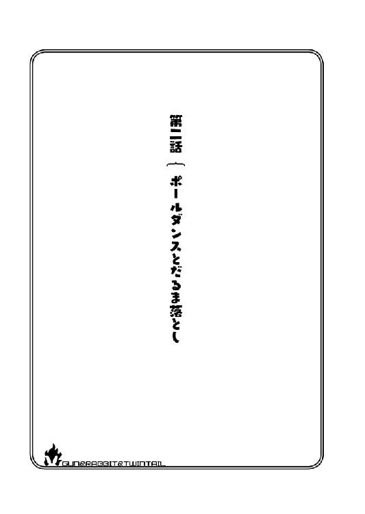
第二話 ポールダンスとだるま落とし
「そういうわけで、今日から澄緒ちゃんにも捜査を手伝ってもらいマス！」
あの夜の翌日、わたしは放課後であろう時間に呼び出され、旧校舎の生徒会室に座っていました。
「手伝うって......なんでそんな話になってるんですかっ!? わたし、ただ取材するだけじゃないんですか!?」
春さんに向かって叫び、心の底から反論をします。
昨日みたいに危ないのは嫌です！ 変なことに巻き込まれたら、死んじゃうかもしれませんし！
「ごめんなさいお姉さま。人手が本当に足りなくてですね、お姉さまではゴミレベルで役に立たないのは重々承知なのですが、それでもお願いしたいのです」
ナチュラルにひでぇことを言いますね。鈴が転がるような声で、人のことをゴミと言いましたよ、この子。
「人手が足りないって、わたし、銃とか扱えませんし、何もできませんよ」
「それは期待していませんから、ご安心ください」
じゃあ何をやらせる気なんでしょう？ ......まあ、どんなことであっても絶対にやる気はしませんけど。
すると、座っていた美詠さんがこちらに視線を向けました。
「あのさ、そもそも何の事件にかかわってるか。それから説明してやった方がいいんじゃないか？ もしかしたら、とんでもなく危ない事件だと思ってるかもしれないしさ」
「なるほど、一理ありますね」
「......そんなに危ない事件ではないんですか？」
「はい、ただの無差別連続一斉爆破事件です」
「危ない事件です！ これでもかってくらい危ないです！ 全然『ただの』ではありません！」
ゴミレベルに使えない人間に手伝いさせるには、ものすごくヘビーな案件です。
この事件、概要としては......ある一定の時刻になると、街中の様々な場所で一斉に爆発が起こるというものです。それが、連続して行われています。
ただ、殺傷能力の低い火薬を使っているらしく、それほどの被害は出ていません。
不思議なのが、本当に『無差別』なんです。
人を故意に狙ったようなものもあれば、誰も傷つけないように、川の中州や誰も立ち寄らない場所なんかで爆発することもあります。
愉快犯や技術を見せびらかしたい人間にしては、主張のようなものが見えてこない......という感じらしいのです。
あまりにランダムで規則性が見えず、爆破という自然災害......とでもイメージすると分かりやすいかもしれません。
「でもこれ、澄緒ちゃんにピッタリの事件なんデスよ」
爆破事件がピッタリって、わたしはこの人達になんだと思われているのでしょう？
でもこのままでは解放もされないと思いますし、とりあえず、拒否するのは話を聞いてからにしましょうかね。
「それで、何がどうピッタリなんですか？」
「えーっと、これ見てもらえますカ？ ......キョウ」
「......うん」
響さんは、紙袋をガサガサと探ると、ヌイグルミを取り出してわたしの方へと投げてよこしました。
「あ......これって、あの時の可愛くないヌイグルミ」
音子さんと一緒の時に拾って、美詠さんにカツアゲされて、響さんに剥がれてしまったあれです。
「今、街中で爆発してるのってこれなんデスね」
「は？」
手に持ったそれを、思わず凝視してしまいます。
爆弾？ 爆弾？ これが爆弾ですか？ これが連続一斉爆破事件に使われてるものですか？
その爆弾が......連続一斉爆破事件の道具がここにあるということは......。
「皆さんが連続一斉爆破事件の犯人！ それをこう、ヌイグルミを持っていても不思議じゃないわたしに持たせて、無差別に色々なところに置いてこいと！ そう言うことですね！」
「すごい想像力ね......」
「音子さんと美詠さんでヌイグルミを集め、響さんがそれに爆弾を詰めていたと......そういうことですね！」
ビシィ！ っと指を突きつけるわたしに、美詠さんは「はぁ」と溜息をつきました。
「逆だ逆。街中にあるのを見つけて、あたし達で解体してたんだよ」
「......解体？」
わたしが首をかしげていると、響さんはヌイグルミをもう一つ取り出して、縫い目をほどいていきます。
すると中から出てきたのは──。
「爆弾!?」
なんだか赤とか青とか黄色とか、そういう線が付いて、カウントダウンしている物があります！
「......ここには、針も糸もない......だからこれを、ヌイグルミに入れられない。......だから......私たちは怪しくない......安心」
「わ、わかりました！ わかりましたけど、爆弾が一緒じゃ安心できませんよ！」
「だいじょうぶ......爆発するまで......あと四時間ある......」
安心していいのかどうか、素人には計りかねる数字です。
「というかわたし、あの日、一時期でも爆弾持ってたんですねぇ」
「しかも、地面に叩きつけようとしてたな」
「ふおぉぉ～......」
今更ながら震えが来ました。
「手伝ってほしいっていうのは、このヌイグルミを集めるのをやってほしいんデスよ」
「お断りします！」
「お断りはできまセン！」
そんなこと言われたって、やるわけないですよ！ 超危険な仕事じゃないですか！
「断っていいのですか、お姉さま？」
「な、何がです？ あの画像を流すっていうなら、流せばいいです！ 命には代えられません！」
「そういうことではなくてですね、お姉さまの部屋、下の下の階が爆発したんですよね？」
「そ......そうですね」
「あれがもし『無差別』じゃなくて、何かしらの意図があったのなら......お姉さまに何かをしようとしているのかも」
「はい？ どうしてわたしが！ 心当たりなんて......」
......まあ、ありましたね。
真一学園のことを調べてたりとかしてましたね。
「この学園には色々なところが関わっていますので、直接学園からではなく、関係各所などから警告があっても不思議じゃありません」
「い、いえ......でも......」
「まあ、元会計のあたしから言わせてもらえば、色んなところからお金が出るし入る。一つの出来事で会社ができたり潰れたり、平気でするようなところだ。学園に不利益な情報が流れるのを阻止したいのは、学園以上に周りの企業や関係者の方が上かもな」
「お姉さま。あれが何かしらの意図があって行われたものでしたら、本気で危険だと思われますよ」
......おぉぉぉぅ......。それはありえそうな気がします！
「命には代えられないって仰いましたが、死んでから『手伝っておけばよかった』となる可能性は充分にあると思います」
はぁ......。まあ、スクープになる可能性だってあるわけですし。
「......手伝います」
「はい、けってーデスね」
春さんは嬉しそうに手をパンッと叩きました。
「じゃあ、そろそろ作業を始めますか！ 澄緒ちゃんはオンと一緒にヌイグルミの回収、他の人間は爆弾の解体」
「......スーさん......初任務......がんばって......」
「......。え？ もしかして、スーさんてわたしのことですか？」
「......うん」
「釣り好きな社長みたいな呼ばれ方ですね」
まあいいですけど。
「それじゃあ、澄緒ちゃんはオンと一緒にどこを回るか決めてくださいネ。キョウも、爆弾の解体を始めてくださいナ」
「ん......そうする」
すると響さんはヌイグルミをいくつか取り出し、この前と同じくそれを剥ぎ取っていきます。中から出てくるのは爆弾......。そしてわたしはそれを探しに行く。
......ほんの数日前まで、スイーツの記事を書いてたんですけどね。どうしてこうなったんでしょう？
「ん......これ、剥ぎにくい......」
ふと響さんに視線を向けると、ヌイグルミを剥ぐのに時間がかかっているようです。この前お邪魔した時もそうでしたが、時々ほどきにくい縫い目があるようです。
でもまあ、それは当然でしょうね。あれ、縫い目が逆になってますし。
「それじゃあお姉さま、打ち合わせをしましょうか？」
「わかりました。あ、でもそういえば、初めて美詠さんと会った時はヌイグルミを集めていましたけど、今日は回収班じゃないんですか？」
「人手がないからやってもらってただけで、エイは元々人見知り気味なところがあるんデスよ。澄緒ちゃんが来たから、解体に移ってもらいマス」
「知らない人に話しかけてばっかりだったしな。......爆弾と一緒の方がまだ心が休まるよ」
ものすごい発言です。
「それに響に話を聞いたら、ずっと一人で解体して、疲れとストレスが溜まってるらしいからな、できるだけこっちを手伝ってやりたいんだよ」
むぅ。やはり口と態度は悪いですが、普通にいい人ですね。
「......ストレスで......死にそう。ノルマ......減らしてほしい」
「響、ノルマを減らすということは、爆発を許すということです。今更、ここにある分をどこかに持っていけるわけではありませんし、文句など言わずそれしかできないバカのように、ただただ解体していればいいのです」
「......わかった......まあ、これだけなら......やってもいい」
「残念ですがこれもです。疲れてるのはわかりますが、それが仕事なのですから頑張ってくださいね」
音子さんはあからさまに面倒くさいといった表情で、響さんの前に大量のヌイグルミを置きました。
「思ったのの......ばいある」
響さんの眠そうな目が、さらにドヨンとしてヌイグルミを睨みつけます。
っていうか、これが全部爆弾だと思うと、正直、気が気じゃありません。
「帰りに、いつも舐めているアメを買ってきてあげますから、機嫌を直してくださいね」
「あのアメ......別に好きじゃない。......口に何か咥えると......喋らなくていいから......楽なだけ......。別に......塩昆布とかでも......可」
そんな理由で舐めてるんですか、あのアメ。
「でもまあ、いくら三人でやるって言っても、ちょっとノルマが多すぎないか？ 今日はあたしと春が手伝ってやれるけど、こいつ持って帰って家でやってることもあるんだぞ？」
「それは申し訳ないのですけれど、数が多すぎるのでおのずとノルマも多くなるのです。......早くしませんと、あと四時間を切っていますし、爆発してしまいますよ？」
「面倒......さすがに疲れた......明日やる......」
「話、聞いてました？」
美詠さんも響さんも、疲れた表情を隠そうともしていません。
それもそのはずで、どうやら事件発生からすでに三桁を超える爆弾を、ここの皆さんで解体しているそうです。
それらが全部、街中で爆発していたかと思うと......ゾッとします。
「爆弾......もういや......別のものを解体したい」
「あ、解体自体は好きなんですね......」
響さんはあまり表情を変えないまま俯いて、
「爆弾......全部爆発しちゃえば......いいのに」
と、ものすごく物騒なことを呟いています。
勘弁してほしいものですが、まあヌイグルミの数と、皆さんの様子を見ているとなんとなく頷けます。
「っていうか音子、いい加減犯人の目星とかつかないのか？ 解体するにも、そろそろ響の集中力の限界だぞ」
「......限界......すごく限界」
「最近じゃ、ヌイグルミの糸すらほどけない時があるんだぞ？ そんな奴に爆弾の解体を任せるって、さすがに危ないだろ？」
「でしたら、こっちの仕事と交代しますか？ チームコミュ障さん？」
「あ？ 誰のことを言ってるんだ？」
「もちろん、春と響とあなたのことです」
「音子......シナス！」
「あ、あの......お二人とも......時間も迫ってることですし」
わたしがその言葉を口にした後、お互い生産性のない愚痴だと気が付いたのか、音子さんも美詠さんも溜息をつきました。
室内の空気が若干重いです。
「あ、えっと......そうは言っても、少しくらいは解決に向かっているわけですよね？ 今は後手に回ってる状況かも知れませんが、何とかなりますって」
何とか空気を変えようと、できるだけの笑顔で声を跳ねさせて言ってみましたが......。
「全然向かっておりません。ヌイグルミに爆弾が入れられてるということと、犯人が単独だということだけです」
......ダメでした。
「でも、単独犯って突き止めたわけじゃないですか！」
「いえ、捜査というより、爆弾から見える癖でそう判断しただけです。それに爆弾が一斉に爆発するのですから、単独犯でしょう？ 情報収集担当の私の手柄ではありません」
うおう......空気が重いです。
「え、えーっと......。爆弾からわかったっていうのは、どういうことなんですか？」
とりあえずこんな空気は嫌なので、無理やりにでも会話を続けてみましょう。
「そうですネー。爆弾がどれも同じ作りで、すごく几帳面に配線してるから、一人で作ってるんだろうなってことデスね」
「その配線の様子から察するに、左利きじゃないかってところまでは掴んでるのですが、そこからぱったり......」
「左利き......」
左利きの人が全部作っている......？ ......なんだか引っかかるような気がします。
なにがなのかははっきりと言えませんが。
「あの......本当にそうなんですか？ 左利きの人が一人で全部作ってるんですか？」
「たぶんな。この爆弾、配線とか、指紋を拭いた跡の流れとか、右利きの人間じゃ作りにくい構造してるからな。仮に複数犯だった場合、そこにいる全員が左利きで、全員同じくらいの技術を持ってるってことになる」
「そういうことなので、普通に考えたら単独犯ということなのです。タイマーの時間を長くしているのも、一人でいろんなところにばらまくためだと思われます」
「爆弾の作成役と運び役がいる可能性もあるけど、複数犯の場合、何かしらの目的がないと統率がとれない。でも、無差別だから目的は無いようなもんだし」
「そう考えると、やはり単独と考えた方が妥当なのです」
「......なるほど」
確かにそうです......そうなんです......そうなんですけど......。
何でしょう？ なんだか、とてつもない違和感を覚えます。
わたしは配線の一本一本、細部まで同じように製作されている爆弾を凝視しました。
......けど、違和感の正体はこれではありません。
もっとこう、わたしのような一般人にもにもわかるような違和感でなのです。
「そろそろ......作業始める。......またこれ......剥ぐ」
少し疲れが取れたのか、響さんがヌイグルミを剥ぎ始めました。
「あ......」
それは本当に何でもないことだと思っていたんですけど、ヌイグルミを剥ぐ響さんを見てあることに気が付きました。
これです！ 違和感の正体はこれだったんです！ これに引っかかってたんです！
何でもないことではなく、とんでもないことです！
「なんです？ 製作者の名前でも書いてあるのですか？ それとも住所が明記されていますか？」
かなり投げやりに質問する音子さんに、わたしは縫い目をグッと開いて、そこを見せました。
「これ、さっきのヌイグルミと、作ってるのが別の人ですよね？」
「え？」
音子さんは声を漏らしながらわたしに視線を向け、続いて春さんと美詠さんもこちらを向きました。ちなみに響さんは、疲れているのか我関せずで、猫のように空中を見続けているみたいです。
「澄緒ちゃん......どういうことデス？」
春さんが訝しげな表情をわたしに見せます。わたしは彼女にも縫い目を見せました。
「えーっとですね、さっき美詠さんが『響さんの集中力が切れて、糸がほどけない時がある』って言ってたじゃないですか」
「あ......うん、言ったけど」
「糸がほどけないって言っていたのは、これとこれとこれです。これらの縫い目を見てください」
皆さんがそれぞれ、ヌイグルミの縫い目を凝視しています。
すると美詠さんは、気が付いたのか顔をしかめた後、ドヤ顔でこう言いました。
「ははぁ、まつり縫いってことか？」
「違います。言いたいこととは違う上、そもそもこれはまつり縫いではありません」
「くそぉ......いらない恥をかいたぁ」
何をもってして、そんなドヤ顔ができたのか謎です。
「まあ、美詠は間違えると思っていたのでどうでもいいですが。私もこれがどういうことなのかわからないのですけれど......」
「あのですね。......これってたぶん、縫い方が逆なんですよ。この縫い目の、左の布から針を刺して右の布から出てきているわけです。でも他のは右の布から針を刺して左の布から出てきているわけです」
「えーっと、右から左......？」
「それが左から右になって、何の不都合があるの？」
「よくわからないデスね」
三人はあまり......どころかこれっぽっちもピンと来ていないようで、眉を顰めています。
裁縫を知らない人に、ちょっと言い方が悪かったかもしれません。
「えーっと、普通に縫った場合、糸だけで考えると糸の形は螺旋になるじゃないですか」
「なる！ ......んデスかね？ アタシにはよくわかんないけど」
「なるんですよ。で、その螺旋が逆向きなんです。音子さんと美詠さんはわかりますよね？」
「......ごめん、あたしも、ほぼほぼわかんない」
「なんでソーイングセット借りようとした人が、これわかんないんですか？」
わたしの説明が悪いのでしょうか......。それとも彼女たちの頭があまりよろしくないのか......。どちらにせよショックなことに変わりありません。
「......ミーさん......頭の回転......遅いから」
「うるさいな！ じゃあアンタはわかったのか？」
「......ばっちり」
響さんは親指をグッと立てた後に、指をうねうねさせながら説明を始めました。
「こう......糸、針、布、布、が......針、布、布、糸になる......」
「全然わかんない！」
理解しても、それをアウトプットする手段が無いようです。
けれど、音子さんだけは空中で何かを縫うような動作をしていて、しばらくするとやっとピンと来たようです。
「螺旋が......逆に......あー......あー!! わかりました！ 理解しました！ そういうことですか！ お姉さま、これはすごい発見かもしれません！」
「わかってもらえましたか！」
「ええ！ ああ！ ......爆弾に気を取られ過ぎて、こちらは気にしていませんでした」
「いやイヤ......二人でわかった感じになってマスけど。どういうこと？」
まあとりあえず、理解できない人には結論から言ってしまった方が早いかもしれません。
わたしは深呼吸すると、彼女たちに向き直ります。
「結論から言うと、この事件は複数犯です」
突入前日
デジカメの電源をつけ、バッテリーが充電されたのを確認します。
うん、残りの容量も充分です。
ＩＣレコーダー。それにメモ帳と、目的地までの住所に地図、それから取材対象店の資料。それらを鞄に詰め込みました。
自室に貼ってある『取材時、最低限持っていく物』と書かれた紙を、もう一度確認します。
「これでばっちりです」
......でもまあそれは、いつもの取材ならって話ですがね......。
そこに追加するため、音子さんの書いたメモを貼り付けます。
「まず防弾用インナーを準備。そしてもしもの時の遺書を書いておく。次に『危険な場所に他者を出し抜くために単独で取材に行く』という内容の書いてある日記を用意。灼熱兎と関わり合いのある資料を全部捨てる......と」
......わたしが死んだら、あの人たち知らぬ存ぜぬを貫き通すようですね。
それにしても、物騒なものを用意することになっちゃいましたねぇ。
「まあ、物騒な場所に行くことになったんですから、仕方ないですけど......」
わたしは明日、灼熱兎の皆さんと一緒に、とあるビルに行くことになりました。
おわかりのとおり、連続無差別爆破事件を引き起こした連中を、潰しに行くためです。もちろんわたしは取材でですが。
準備も終わりましたし、そろそろ床に就くことにしましょう。
重力に身を任せ、ベッドにドサッと体を預けます。すると。
──ピィィィィ！ と、ホイッスルの音が鳴り響きました。
「ホコリが立つ......もっと静かにして......」
「......すみません」
いつもの調子でベッドにダイブしたところ、とある理由で共同生活をすることになった響さんに怒られてしまいました。
なぜか彼女は、ウサギのキグルミパジャマを着て、ホイッスルを口に咥えています。
「......なぜ笛を？」
「......注意するから......そのために」
「いえ、なんでそんな物を持ってるかという意味です」
「きっと......口寂しいから」
口寂しいからホイッスルを咥えている人なんて初めて見ました。
そういえば響さん、喋らなくていいようにアメを咥えてるって言ってましたし、何かが口にないと不安なのかもしれませんね。
「でもまあ......ホコリ立てたのは......いい。私......お邪魔してる身だし......」
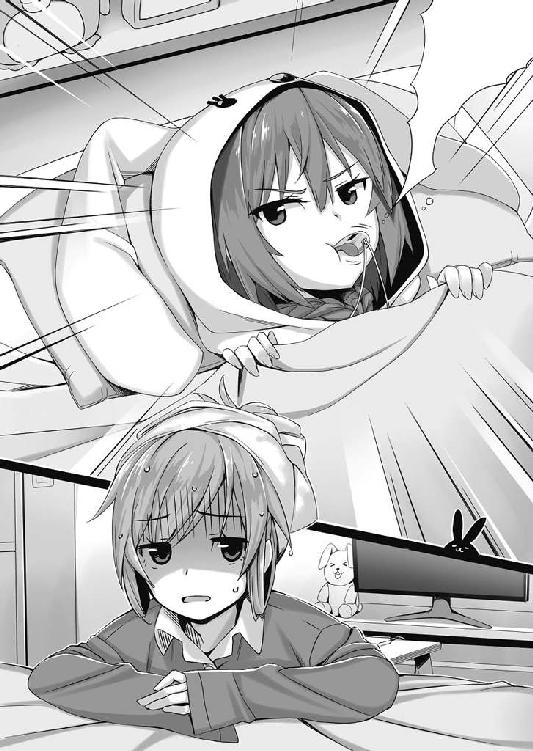
「そう思うのなら、そもそもお邪魔しないでいただきたいのですがね......」
「......ごめんなさい......。ご、ごべんなざい......いまずぐ......帰りまず」
響さんは顔をくしゃりとゆがめ、大粒の涙をこぼし、鼻水が垂れそうな勢いで泣き始めてしまいました。
「ああ！ 嘘です嘘です！ 嘘なんで泣かないでください！」
「......ヴぁい」
響さんは涙をグイグイと拭い、鼻を啜ります。情緒不安定にもほどがあります。
はぁ......どうしてこんなことに。
「それじゃあ、電気消しますよ」
「......ん」
亭主関白気取りな男のような返事です。
リモコンで電気を消して横になると、いつもは無い他人の体温があることにも、だいぶ慣れてきました。
あれから三日でしょうか。緊張もあった奇妙な共同生活も、少しずつ日常のようになってきています。
「スーさん......このベッド......狭くない......？」
「シングルですからねぇ」
「でも......掛け布団があるだけ......全然いい......幸せ」
「ここに来るまで、どんな生活してたんですか......」
さて、なんでこんなことになっているか。わたしは布団の中で、あの日のことを頭に浮かべました。
「──この事件は複数犯です」
わたしがそういうと、音子さんは「そうなりますね」と言って笑顔になります。が、他の方々はよくわかっていないようでした。
「複数犯って、どういうことデスか？」
「ヌイグルミの縫い目が、逆になってるものがあるというのは、いくら理解力のないあなた達でも理解できましたよね？」
「ムカつくけど......まあな」
「ではその理解力の無いあなたたちに簡単に説明すると、縫い目が逆になっているということは、右利きの人と左利きの人の両方がいるということとなります。そうですよね、お姉さま」
「そうです。つまり、確実に二人以上はいるってことです」
そう言ったのですが、春さんも美詠さんも、針でヌイグルミを縫うような仕草を、左右両方でやってみていますが、ピンと来ていないようです。
「とにかくですね、複数犯ということはほぼ確定しましたので、あなた達は爆弾の解体しながら、私の集めてくる情報をアホのような顔をして待ち続けてればいいのです」
「......わかったよ。理屈はよくわからないけど、そっちは音子に任せて、あたし達は解体してればいいんだろ」
「そういうことです」
美詠さんは、理解できていないけど納得したようで、切り替えるように表情をいつものものに戻しました。
まあ、難しい顔が不機嫌な顔になっただけなので、あまり変わりがある気はしませんが。
「でもどうして複数犯が、あんな目的の見えないことをする......っていうかできるんだろうな？」
「それを今から探るのです。しかし確かに、この目的のなさで複数犯というのは、本当に不可解だと思います。どうやって統一してるのでしょうか？」
「もしかしてですけど、目的とかそういうのを、統一してなかったりするんじゃないですか？ 全員バラバラの意思でやってるとか」
「あのさちびっ子、意思がバラバラなのに、なんで全員爆破なんてことしてんだよ？ なにかを壊したいってことで統一できてるじゃん」
「そうなんですけど。......でも爆発は、爆弾の意思じゃないですか？」
「爆弾の意思？」
なに言ってんだこいつ？ とでも言いたげな視線を、美詠さんと音子さんからいただいています？
「なに言ってんだ？」
ああ、言われました。
まあいいでしょう、説明を続けます。
「えーっとですね、爆弾を作った人自体は一人じゃないですか。だとすると『爆発させる』ということに関しては、その人ひとりの意思なんですよ」
「あー......確かにそうですね」
「......？ ごめん、よくわからない」
どう説明すればいいんでしょうね......。何かたとえを出したほうが解りやすいかも知れません。
「たとえばですが......。一人の男が、街の治安を悪化させたくて連続一斉爆破事件を思いつきます。彼は爆弾を作る技能もあるのでお手の物です。
ですが、それを街にばら撒くには労力もかかりますし、犯行がばれる可能性も高くなります。なので、自分とは関係のない人に、爆弾とヌイグルミのカバーを送り付けます。
送り付けられた方々が、それを好き勝手にばら撒きます。
そうすれば『爆発する意思』は最初の一人のものですが『爆破させる場所』に関しては、それぞれの意思になりますよね」
わたしがそう語り終わると、音子さんは感心したかのように頷いていました。
「それは、かなり筋が通っているではありませんか」
「まあ、あくまで例としての話ですが」
「いやぁ、待った。そんなものを送り付けられたら、警察にでも行くだろ？ 警察に持ち込まれた話なんて、聞いたことないぞ」
「だから......例なんですって」
「ですが、爆弾を送る相手が前科者だったりするのならば、あまり警察には行きたくないのではないでしょうか？」
「そうですね。そんな人が爆弾を持って警察に行っても、疑われるだけですからね」
「けど、爆弾を送られたからって、それを使いたいと思うか？」
「使いたくないから、人気のない場所に捨てたんですよ。そのせいで、意味のない場所での爆発が続いたとか。それに、送られてきた時からタイマーが発動してるわけですから、狙って使おうと思っても、その『縛り』で使いこなせないと思いますよ」
「......なるほど」
なんとなく納得したような返事をしていますが、表情を見る限り、完全には理解できていないようです。
「美詠にもわかるように説明して差し上げましょう。前科者なのですから、できれば──」
「──あぁ！ ホントだ！ 右利きと左利きだと、確かに螺旋が逆になりますネ！」
「遅いっ！」
やっと右利き左利きの理解ができたらしい春さんですが、まあ今更も今更です。
「それで、螺旋が逆で、利き腕が逆だと、どうなるんデスか？」
......これ、また説明するんですか？
「えーっと......あー......結論......といいますか、これからやるべきことだけ述べます」
でもそんなことは慣れているのか、音子さんは春さんには触れません。
「とにかく、私が情報を集めますので、皆さんは解体しつつ、戦闘の準備をなさっていてください」
「ああ、わかったよ」
「ハイ！」
「それと響。しばらくの間、お姉さまと一緒に、寝食を共にしてあげてください」
「......私......なんで？」
「護衛よ。あと見張り」
「見張り!? わたし、見張られるようなことしましたっけ？」
「縫い目や利き腕の件、今仰った予想、思っているより使い道がありそうだと考えているのです。今回の件が終わるまで、逃がしてはダメですからね」
「わかった......逃げないように張り付いておく」
「わたし、全然納得してないんですけど!?」
納得はしていないんですが......まあ、評価されたのはちょっと嬉しかったりしちゃいます。
その後、音子さんの情報収集により、事件の全貌が見えてきました。
結論から言えば、あの時言ったわたしの予想は、七割くらい当たっていました。
あのラブホテル街で会ったサラリーマンや、他の方々から様々な方法で聞き出したらしいのです。
......その方法は教えていただけませんでした。
それによると、ある日突然、爆弾とそのカバーであるヌイグルミが、自宅のドアノブにかけられていたそうです。
そしてそこには数枚の紙が同封されていたそうで、それはその方たちがＳＮＳ等で書いた、冗談とも取れるような愚痴。
『上司死なないかな（笑）』『会社行きたくない......燃えてくんないかな』『駅前にいたカップル爆発しろ！』等々。
それらがプリントアウトされ、一緒に入っていたらしいです。
そしてもう一つ。
──あなたの願いを叶える物です。
これをヌイグルミで包み、あなたの望む場所に置いてきてください。
ただし、これを送るのはただ一度だけです。よく考えてお使いください。
そう書かれている用紙でした。
警察に届けようとしたらしいのですが、これらの発言が『犯行予告』としてとられてしまわないか、心配になってしまったそうで......。
文章も、まるで自分が爆弾を取り寄せたかのような文言です。一緒に提出すれば疑われるに決まっています。
それに、そんな書き込みから名前や自宅まで調べてしまう送り主に恐怖し、下手に刺激をしたくないという心理も働いた上、『一度だけ』と書かれているので、これさえやり過ごせば無関係になると思ったらしいです。
結果、誰にも相談できず、だからといって放っておけば爆発してしまうので、人目に付かないところに捨てに行った......ということらしいです。
無差別爆破......これならば無差別なのも、目的や動機や主張が見えないのも納得です。
そして、その爆弾がドアノブにかけられたであろう時間、その場所などを逆算してみると、怪しい地域が見えてきました。
「確かに誰も近づかない所でしょうねぇ」
「色んな意味で近寄りたくない場所だものね。隠れるにはうってつけかも」
そこは、ある国が出資し建設を開始したある施設でした。
とはいっても怪しいものではなく、そこそこ大きめのランドマークビルです。
この学園に銃教育の許可が下りたのとほぼ同時に、様々な都市開発が進められました。まあ、様々な整備が必要だったのでしょう。
そしてその開発された都市の中でも一際大きかったのがそのランドマークビルです。
いえ......一番大きくなるはずだったというのが正しいです。
先ほども言ったとおり、とある国がそのビルに出資し、その国で名の知れた建築家が設計を携わったそうです。彼は自国で有名な建物をいくつも手掛けているそうです
しかし、彼らにとって盲点だったのはこの国に頻発する『地震』でした。彼らの計算の中に、それは入っていなかったのです。
それにより、建物の強度が心配され、完成はしたものの、その欠陥のせいで放置されることとなりました。
かの有名な鹿鳴館も、外国の方が設計したのですが、世界的に地震の多いこの国ではそれに耐えられず、数年でガタガタになってしまったそうです。
まだ名前も決まっていなかったこのビル、公募で決めるはずだったそれは『鹿鳴館ビル』と呼ばれるようになりました。
開発の中止が発表されてから名が付くなんて、なんともまぁ皮肉な話です。ちょっと可哀想になってきます。
まぁ......それよりも可哀想なのはわたしなんですけどね。
「あの、なんでわたしもここにいるんですか？」
わたしは、件の鹿鳴館ビルの前で、灼熱兎の皆さんと一緒に突入のタイミングを計っていました。
あの後、眠りについた私が目を覚ますと、現場に連れてこられていました。拉致です。
たぶん、響さんをわたしの家に寄越したのは、こういう目的もあってなのでしょう。
「爆発時刻まで時間がないですヨー。その時間に突入しますからネー」
「あのさ、なんでわざわざ爆発時刻に突入するんだよ？ そのまま突っ込んでいいだろ？」
「イーエ。爆発時刻ならば製作者の気も意識も、必ずそちらの方に向くからそのタイミングで突入デス」
「なんでそう言いきれるんだよ？」
「自分が作ったものが、どうなるかって気になりませんカ？」
「......まあ、確かに」
「付け足すならば、数回前の爆発から私たちがそれを解体をしていますよね？」
「そうだな」
「そのせいで、爆発する場所が目に見えて減っています。縮小していくことに、製作者は疑問を持っているはずです」
「確かに。そうなったら、確かめたくもなるだろうな」
「ええ。ですからきっと見ていらっしゃると思いますよビルから、街が爆発する様子を」
「だから、そのタイミングで突入デス。向こうの意識は、絶対爆弾の方ですからネ！」
......まあ、それはいいんです、それはいいんですけど。
「あの！ わたし、ここに来て何の役に立つんですか!? 記事にしますし取材もしますけど、戦場にまで入っていくとは言ってませんよ!? もっと遠くから撮るくらいのイメージだったんですよ!?」
「爆発時刻まであと五分デス。そのタイミングで突入しますネ」
......無視されました。
「今から、銃撃戦が......ドンパチする感じのあれこれが始まるかもしれないんですよね？ わたし、いていいんですか？」
「始まるかも......ではありませんわ。始まるのです。始まらなくてもこっちから始めてしまいます」
うおぅ、銃撃戦は確定なんですね......。
「あの......そんなことが起こるなら、わたしなんてほとんど役に立たないんじゃ？」
「ほとんどじゃなくて、全くの足手まといだと思うけどな」
「じゃあ連れてこないでくださいよ！ 足手まといを連れて戦場に行くって、どういうことですか!? 下手すると死んじゃうんですよ！」
「......大丈夫。今回......スーさんを守る人はいない......見捨てるから......足手まといにはならない」
「あなたたちの戦力低下を心配してるんじゃなくて、自分の命を心配してるんですよ！」
っていうか、わたしを守らないって何ですか!? 誰か何とかしてくださいよ！
もう、仕事も正義感的なものも投げ出して、家に帰りたいです！
「大丈夫デスよ澄緒ちゃん。ハイ、これ」
「......なんですかこれ？」
渡されたのは、古い懐中時計でした。
「胸ポケットに入れておけば、胸に当たっても銃弾はそこで止まり、ギリギリで生きられマス！」
「映画でそういうのよく見ますけど、そもそもわたしは『生きてるのか死んでるのか』みたいな状況にすらなりたくないんです！ 全身どこにも当てられたくないんです！」
「じゃあ澄緒ちゃん、後ろを向いてくださイ」
「......？ わ、わかりました」
後ろを向くと、春さんはなぜかわたしの頭に触り、横髪を束で握りました。
するとリボンを取り出し、髪を結っていきます。
「あの......何を？ これ、ツインテールにしてるんですよね？ わたしもう二六ですよ？」
「まあ、オマジナイみたいなものデスから」
「おまじない？」
そういえば、ここにいる皆さんはなぜか全員、髪を二つに結わえていますね。元々、灼熱兎の名前も、そこから呼び名が出たみたいですし......何か理由でもあるのでしょうか？
でもまあ、そうされるってことは......仲間として認められたとか、そういうことですかね？ だとしたら、多少嬉しくありますね。
「お守りで『ウサギの足』というものをご存知ですか？ あれにあやかっていたりします」
「えーっと、ウサギの後ろ足のを使ったのですよね？ でもこれ、見た目はウサギの耳になりません？」
「なんかわかんないけど、響がウサギの足を異常に怖がるんだよ」
「......おっかない......」
何がおっかないかわかりません。
「まあ、文献に残ってる武士なんかもそうデスけど、生きる死ぬの世界にいると、縁起とかお守りとか、結構気にするもんなんデスよね。だから澄緒ちゃんにもお守りデス」
あっという間にリボンできれいに束ねられ、わたしは年甲斐もなくツインテールになってしまいました。
「いい......よく......似合ってる......」
響さんが頭に手を置いて、わしゃわしゃと撫でています......響さん自身の頭をです。
「わたしを誉めながら自分の頭を撫でてますけど、あれは何がしたいんですか？」
「あたしにもわかんないな。響はまあ、ものすごく人間に近い犬だと思っておくと、すごく付き合いやすい」
......ちょっとだけ納得できました。
「さて、お守りも出来マシたし、行きますカ！」
「え？ ちょっと待ってください！ 髪の毛束ねただけで『よしこれで大丈夫です！』とはなりませんよ!? まだまだ全然危険ですよ!?」
そんなことを言っていると、建物の壁からパラパラと音を立ててコンクリートの破片が落ちてきました。
鹿鳴館ビルの名に相応しく、建物はすでにガタガタなようです。
「まあまあお姉さま。どうか落ち着いてください。皆そんなこと言ってはいますが、今回はそもそも、守る必要がないのです」
「......？ 守る必要がない？」
「爆弾を作っているのが一人で、それを関係のない色々な人にばら撒いていたわけです。 察するに、ここにいる犯人は一人ぼっちじゃないかと推測できます」
「え？」
「仲間がいるなら、知らない人にばら撒かせたりしないだろ？ もしあたし達が同じことをするとしたらさ、爆弾の作成は響に任せて、残り三人はばらまくって発想になる。それができないってことは、きっと仲間はいない」
「......なるほど」
犯人はボッチだから、運び役に一般の人を使った......というわけですね。
「そうなると、澄緒ちゃんを守る必要もないわけデスよ！」
春さんはそう言って、軽薄な笑みを浮かべました。
なるほど。皆さんが余裕だったのは、相手が一人で楽勝だったからですね。
「わかりました。そういうことであれば、わたしは安心して皆さんの活躍をカメラに収めることにします」
「......よろしく」
──ピッ！
灼熱兎の皆さんから、一瞬の電子音が聞こえてきます。
すると、春さんはわたしの前で両手をパーにして、一本ずつそれを折り曲げていきました。
どうやら、わたしにもわかるように、突入のカウントダウンをしてくれているようです。
わたしもコクリと頷き、その時を待ちます。
──８ ──７ ──６ ──５
デジカメを取り出し、電源を立ち上げます。
皆さんも銃を構えました。
──４ ──３ ──２ ──１
息を飲み込み、突入に備えます。
走り出すために、足が地面を掴むジャリという音が聞こえ──
──０
まるですべての音が無くなったと思うほどの静寂。
その瞬間、遠くの方から数発の爆発音が聞こえてきました。
そんな中で、春さんが二本の指を入口に向け、囁くように──
「開始デス」
全員がドアまで一気に走ります。
響さんがドアに張り付くと、トラップがないのか調べるためにそっと開け、彼女が頷くと──
ドガァ！ と音を立てて、音子さんが蹴り開けました。
そこにピースメーカーとＭＡＣ１０を構えた春さんと美詠さんが突入します。
続けて、グロックを構えた音子さんが突入し、ケースに入れたままのＰＳＧ−１を抱えた響さんが入っていきました。
見事な連携、その無駄のない動きに惚れ惚れしてしまいます。
わたしもカメラを構えて中に突入しつつ、その内部を撮影します。
すると春さんが叫びました。
「おとなしく投降してくだサイ！ たった一人でこの人数に対抗できるとでも......」
......？ なんだか最後の方は、声がモニョモニョしています。
......なんでしょう？
なんてことを考えていると、わたしが今撮った写真が画面に表示されました。
そこには......なんて言うのでしょう。外国資本のすごーく悪そうな方々が銃を持って、一人の男性に爆弾を作らせている場面でした。
ここにいるの、一人のはずじゃないんですか？
「あー......ごめんね澄緒ちゃん。自分の身は自分で守ってくださいネ！」
引き攣った笑いを浮かべる春さんに、わたしはそれ以上に引き攣った笑みを浮かべます。
「無理ですぅぅぅぅぅぅぅぅぅ！」
わたしの絶叫と共に、相手は銃を構え、
──ダダダダダダッ！ ──バババババババババッババッ！
そんな嫌な音を立てて乱射してきました。
「伏せろ！」
「んぐっ!?」
美詠さんがスライディングをしながらわたしの首根っこを掴み、床に伏せたまま、乱射して相手を牽制します。
起き上がると、今のアクションのせいで美詠さんのタイツには所々穴が開いていました。
初めて会った時のヘッドスライディングといい今のといい、よく服が破れる方ですね。
「お姉さま、こちらに」
灼熱兎の皆さんとそれに引きずられるわたしは、遮蔽物を求めてエスカレーターの方へと移動します。
腰を低くし、器用に走りながら地下一階へと下っていきました。
「ちびっこ、早く下に降りろ！」
「え？ あの！ 美詠さんは!?」
彼女は一階部分で、エスカレーターを守るように立ちふさがり、両手にＭＡＣ１０を持ち、恐ろしい連射音を響かせながら広範囲にそれを向けています。
「いいから早く！」
「見捨てていけません！」
「戦力にならないんだから普通に邪魔！ あんたに見捨てられた方が生存率上がるっての！ 余計なこと言ってないで早くしろ！」
「......」
まあ、そうですね。そりゃそうですね。いいこと言ったつもりが、完全に余計なことでしたね。
邪魔になるだけですし、早々に下階に降りることにします。
と、下に降りると響さんがＰＳＧ−１を上階に向けて構えており、音子さんは両手を広げています。
何をするのかと思えば──
「音子！」
「はい、いつでもいらしてください！」
下の階からでも敵が確認できた時、美詠さんは銃を上階に撃ちながら、エスカレーターから跳びました。
一階から地下一階への、頭を下にしての自由落下。股を大きく開いて、両手で射撃。最速で移動でき、なおかつ攻撃もできます。
そして降ってきた美詠さんを、音子さんは──
「うぐっ！」
と軽い呻きを出しながら抱え、床に転がりました。
その間、響さんは上階に向けて銃弾を放っています。
するとすぐに、エスカレーター前にある防火シャッターが閉まります。そのスイッチは春さんが押していました。
「......ふ、ふおぉ」
とりあえず......とりあえずですが難は逃れました。
ただの変人とんでも集団かと思いきや......なかなかチームワークがいいじゃないですか。
「みなさん、ものすごい連け──」
「美詠、無駄に重いです。また無駄に筋肉をつけたのですか!? 無駄な筋肉は贅肉よりも役に立たないですよ？」
「うるさいな！ 重いならお前も筋肉つければ問題ないだろ！」
「キョウ！ なんでこの室内で狙撃銃持ってくるかナ!? 取り回しが悪いし、この人数相手に連射もできないじゃないデスか!?」
「相手は一人......だから連射もいらない......威圧するだけだから......銃は何でもいい......そう聞いた......」
「そ......う......デスけど！ それは音子の情報が！」
「は？ 情報ではありません、その可能性が高いと言っただけで予想です。それを基に判断したのはあなたです」
......。
前言撤回です。グダグダです。連携のかけらもありません。
「ハァ......。まあとにかく、敵はいっぱい、こっちは五人、戦える奴は四人で、さらに場所的には追い詰められている。どうしますかネ？」
「え？ 地下って、考えがあって来たわけじゃないんですか？」
「ないデスねー。思わず飛び込んじゃっただけだからネー。本当は上に行きたかったんだけどネー」
ヘラヘラととんでもないことを言ってくれます。
「......はい......提案......」
「はい、キョウ！」
「......全員......倒す」
「おお......うん。で、どうやって全員倒すかって話でしょ？ 戦力差あり過ぎデスから」
「......オッさんの......色仕掛け」
「おじさんがどう色仕掛けするんですか？ そもそもおじさんいませんし」
すると響さんは音子さんをのたーっとした動きで指さしました。
「あの、何度も言いますが、私をオッさんて呼ぶのやめてくださいませんか？ 私、オッさんと真反対に生きる人間ですから」
わたしがスミオでスーさん......なら音子さんは......オッさん。
「なるほど」
「お姉さまも納得しないでください」
「......だったら、カーさん」
華押......だからカーさん。
「おお、なるほど！」
「お母さんみたいな呼び方もやめてくださいます？」
「こんな時にこんな会話に混ざるって......ちびっこも、意外と余裕あるんだな......」
美詠さんが呆れたように呟きます。
ちなみにこれは余裕があるのではありません。現実逃避です。
「さて、とりあえずはこれかねー？」
春さんは二台並んだエレベーターを指さしました。
それが上に行かないように、扉の間に拾ってきたであろう石を挟んで、何度も開いたり閉まったりを繰り返しています。
「これって、上の階に着いたらズドンじゃないんですか？」
「まあ、人の少なそうな階に下りればいいデスよ。一階は多いだろうし、思い切って一一階くらいまで行きますかネ」
「幸いここに、配線用のケーブルもあるし、それロープにすれば降りられるでしょ」
あの......一一階からロープで降りるって、素人にはとてもできそうにないんですけど。
そう抗議しようと思い手を上げると。
「あの、わたししろう──」
「あたしやだ！ 絶対ヤダ！ 無理無理無理！ 無理！ 無理無理無理無理っ！」
「え？」
なぜか美詠さんが全力で首を振ってました。
「ああ......そうかぁ。そうでしたネェ」
「美詠がいるんでしたね......」
春さんも音子さんも溜息をついています。あの......これってもしかして......。
「美詠さん、高いところ苦手なんですか？」
「苦手で悪いかっ!?」
珍しく素直に認めました!? これは相当のものでしょう。
「名前はコングなのに......チキン」
「うるさいな！ チキンなんだから飛べなくてもしょうがないだろ！ 悪いか!? 誰かに迷惑かけてるか!?」
「あなた今この状況で、全員にものすっごい迷惑かけておりますが......」
「まあ、撃たれるよりはマシじゃないデスか？ 目ぇつぶってる間に、吊るしながらゆっくり降ろしたげるから......それでどうデス」
「......本当にか」
「マジです。本当にマジでデスよ」
美詠さんは観念したようにコクリと頷き「よろしくお願いします」とつぶやきました。
ビックリするほど殊勝な彼女に、響さんは肩をポンと叩いて──
「......使う？」
──紙おむつを渡しました。
ものすごくいらない気遣いのような気もします。美詠さんのことですから「使うか！」なんて言いながら、放り投げそうな気がしますが......。
「......使う」
......使うそうです。
「にしてもさ、ここまで来て逃げるって、あたし達の性に合わないよな」
「確かにそうですね。ブッ潰せると思っていましたのに」
「......残念......」
確かに、わたし達しか犯人に辿り着いていない状況で、しかも対峙までして、それを逃がすというのはもったいない気もします。
でも、わたしにはどうしようもありませんしね。
──ドァオォォォォォン!! ──ドァオォォォォォン!!
「!? な、なんです今の爆発音！」
「おそらくグレネードでしょう。あの防火扉を破るつもりだと思われます」
「だ、大丈夫ですか？ 破られたりしませんか？」
「まあ、この街の設備ですので、そういう性能はしっかりしてると思います。おそらく、対戦車砲でも持ってこないと破れないのではないかと」
なるほど、それなら安心です。......けどなんでしょう、一抹の不安が過ぎります。
それは、この建物の不安定さです。
「あの......いいですか？ 扉は無事でも、床で爆発を起こしたら、このボロさだと穴でも開くんじゃないですか？」
音子さんはひび割れた天井を見ると、
「......ありえない話ではないでしょうね」
とてもとても渋い顔をしました。ありえちゃ困るんですが。
「あのさ、一瞬だけシャッター開けて、数人だけ中に入れて倒していくってどうだろ？ そうやってれば、そのうち全員倒せるんじゃないか？ 最後にはボスが出てきてさ」
「下の人間倒してたら、最終的に一番上のが来るってことですか？ なんか、だるま落としみたいですね」
「だるま落とし......デスか......」
春さんはその単語を聞くと、考え込むように顎に指を当てました。
「あー......！ それいいかもデスネ！ それ使えば、ここを潰せるかもしれないデスね！」
「......？」
全員がクエスチョンマークを頭に浮かべました。
そんなこともお構いなしに、春さんはニヤリと笑い、わたし達を近くに呼び寄せました。
「いいですカ、まずデスね──」
そして春さんの提案したその作戦に、わたしは耳を疑うことしかできません。
いくらなんでもそんな作戦が、うまく行くとは思えません。
「オン、どう思う？」
「......まぁ、計算上は可能だと思いますが。わたし達がくたばらずにいられるかですよね」
「そこはま、運ですネ。エイは？」
「高いところから一気に下りるよりは大分マシかな。一応は小刻みになるわけだし」
「じゃオーケーってことデスね。キョウは」
「......よくわからないから......まあ......それでいい」
「じゃあ、そんな感じで行きまショウ！」
そう言って、パンと手を叩きました。
「いえあの......わたしには意見聞かないんですか？」
「んー......まあ、澄緒ちゃんってこういう二択の選択を外しそうだし」
大当たりです。全外しする自信があります。
「それにまあ、こんなこといつもやってマスし、一番安全な場所にいてもらいますシ、あんまり気張ることでもないですしネ」
こんなこといつもやってるって......。これからこの人達に巻き込まれると思うと、溜息が出ます。......はぁ。
けれどまあ、わたしも覚悟を決めなければなりません。生きるために、スクープのために！
わたし達は準備を終え、エレベーターの前に立ちます。
そしてストッパーにしていた石を引き抜き、わたし達五人はエレベーターに乗り込み、作動させます。
「目指すは一一階！」
春さんはそう言って一一階のボタンを押しました。
少しだけ音を立てると、エレベーターはゆっくりと上に登っていきます。
「成功するといいですね」
「まあ、大丈夫でしょ」
そう言いながら、春さんは壁に寄りかかります。そこにはかなりの余裕が見てとれました。
さて、ここでエレベーターの特性を紹介します。
ご存知でしょうがエレベーターというのは、こちらが押したボタンの階にまっすぐ行くわけではありません。途中で外側からボタンを押された場合、その階で止まることになります。もちろん、このエレベーターも、そういう構造でしょう。そしてもちろん、敵さん達もそれを知っていて、ボタンを押しているでしょう。
その場合どうなるか。簡単です、一一階に到達する前に、まずは一階でエレベーターが開きます。敵が待ち構えている一階でです。
──ポーン イッカイデス
というわけで、一階でエレベーターが止まり、ドアが開きました。
すると、
──ドガガガガガガガガ！ ──バラララララララ！ ──ズダダダダダダダダダダ！
恐ろしい量の連射音と共に、エレベーター内に大量の銃弾が撃ち込まれました。
こんな箱の中では避ける場所も、遮蔽物もなく、ただただそれを浴びるだけです。
体も顔も、全てが等しく穴だらけです。致命傷も何も関係なく、全てが死につながります。
「......うわぁ。隣のエレベーターに乗っていたら、死んでるところでした」
そう、そのエレベーターに乗っていればの話です。
わたし達はエレベーターを同時に二台動かし、誰も乗っていない方を先に動かしました。
彼らが銃弾を撃ち込んだのは、誰もいない方です。......そして、おまけに、
──ドゴォォォォォォォォォォォ！！！！
と、爆音が響いてきました。
これは、隣のエレベーターにセットしていた、グレネードです。
空のエレベーターが上がる寸前、響さんと美詠さんが手早くグレネードのピンに糸を括り付けました。そして糸の先端には結び目があります。
グレネードはエレベーターの中に、糸の先端、結び目は外にあります。
そしてエレベーターが上に行くと、糸の結び目は下階、グレネードは上階となり自動的にピンは引っ張られ、外れます。そして一階に着いた時には、それが爆発するようになってしました。
「......グレネードの上に......落ちてた釘とか......ガラスとか......いっぱいのせてきた。......たぶん......飛び散って......えらいことになってる......」
「それは......えげつないですね」
「あらお姉さま、これは戦略ですよ戦略。あの数で襲ってくる方が、よっぽどえげつないと思いませんか？」
「確かにそうですけど......釘やガラスが爆風で飛んでくるって、想像するとリアルに痛いんですよね」
「実際当たると、銃弾の方が痛いですけどネ」
そうかもしれませんが、銃弾の痛みってリアルじゃないのでよくわかりません。
しかしまあ、こんな状況でこんなことをやってのけるとは、この人達はさすがです。......なんてことを考えていると。
──ガクンッ
とエレベーターが止まりました。
「何ですか、これ？ 何が起きたんですか？」
「......もしかして、今のグレネードですごい揺れたから、地震かなんかだと思って止まってるのかもしれないな」
美詠さんが何とも言えない表情をしています。
「はぁ......たまに誉めようと思うと、どこかしら抜けたことするのよね」
「だ、だって、こんなことになるなんて思わないだろ！ 一応ビルも最新設備なんだから、地震の揺れを軽減させるやつとかあると思うだろ！」
「このビルが耐震強度の問題でダメになり、こんな状況になったのをお忘れですか？」
「うっ......ぐぅ......」
ビックリすることに、完全に忘れていたようです。
と、そんなことを話している間に、ドアからギギギという音が聞こえてきています。何の音かとそちらを見ると、バールの先端がこちらをのぞき込んでいます。
......外側から、力ずくで開けられているようです。
「開いてます！ 開いてます！ ドアが破られています！」
わたしが言い終わるのとほぼ同時にドアは開き、外気がこちらに流れ込んできました。そしてそこにいるのは銃を持った四人の男と、ドアをこじ開けたであろうバールを持った男。位置的には、エレベーター内のわたし達の目の前に、ドアをこじ開けたバール男。その後ろに四人の銃を構えた男となっています。
銃を構えた男は、バール男のせいで発砲はできないみたいですが、全てこちらを向いています。
バール男も、バールを床に落とし、銃に持ち替えようとしています。
音子さんはそのバールが地面に着いた瞬間、男に向かって距離を詰め、バールのＬ字の短くなっている方を、横から思いっきり踏みつけました。
すると、もちろんバールは立ち上がり。
「ぐあぁ！」
男の脛に、持ち手部分が当たりました。
......昔、学校で、放置してあるモップを踏んだら、それが起き上がって頭に当たったことがあります。それのとんでもなく酷い版です。
バール男がよろめいたところに、音子さんはナイフを取り出して、柄を鈍器のように使って思い切り顎を叩き、メシャリといういやな音が響きます。
その攻撃で意識を失ったのかバール男が倒れた瞬間、春さんの腰から強い光と──ダァーン!! という破裂音が、一回だけ聞こえました。
するとその数瞬後には、後ろにいた残りの銃を構えた四人が膝から崩れ落ちます。
それらがすべて終わった頃に、わたしはやっと尻餅をつきました。
「え？ え？ 今なんか、ものすごいことがっ！」
なんかもう、とんでもない速さで敵を倒していたようです。
とりあえずわたしたちは、せまいレベーターからフロアへと降り立ちます。
「いやー、一人倒してくれて助かりましたヨー。四発同時が限界ですからネー」
「いいえ。私は、この距離での戦闘ぐらいでしかお役に立てませんし、お気になさらないでください」
音子さんの返事を聞いた春さんは、ピースメーカーをホルスターから取り出すと、四発分の薬莢を抜いてその分の弾を込めました。
「あの......今ので四発撃ってたんですか？ 一発にしか聞こえなかったんですが？」
「ん？ まあ、そういうふうに撃ちましたからネー」
そう言いながら左手をグネグネと動かしています。その手の親指と人差し指、そして薬指が赤くなっています。
春さんが言うにはこうでした。
右手の親指で撃鉄を起こし、人差し指でトリガーを引いて一発目が出ます。そのままトリガーを引きっぱなしにし、左手の親指で撃鉄を弾くと、トリガーは引かれっぱなしなので撃鉄が元に戻るそうで、そこで二発目が出ます。
さらにそれを人差し指と薬指で弾き、三発、四発と発射させるそうです。
すると、一発目の銃声が終わる前に四発目まで発射されるため、銃声が一つになるそうです。
「ふおぉ！ なんですかそれ！ すごいじゃないですか！ そんなのができるなら無敵じゃないですか！」
しかもホルスターに入れたままなんて！
「まあねー。でも構造上、リボルバーでしかできない技デスし、ちょっとだけ改造もしてますし、弾数少ないですシ。お互い構えた状態からなら他の銃には負けちゃいますけどネ」
「そうなんですか？」
「言ってみれば居合みたいなもんデスね。鞘に収まってる状況からなら、他の攻撃よりも早いけど、向こうも構えた状態からじゃ、攻撃力も負けるし太刀筋も読まれるみたいな感じデスね」
「なるほど......」
「お互いがホルスターに入ってる状況からなら、オートマチック拳銃より早く撃てて、腕によっては数人同時に攻撃ができる。で、ショットガンと違って狙いをつけることもできる。さらに、ライフルみたいに取り回しが利きにくくもない......というわけデス」
「限定された状況で、腕があれば恐ろしく強いってことですか......」
「そうデスね。まあ、それでも使う人は少ないけど」
なんだか取り扱いが難しい銃のようです。トリガーを引けば弾が出る......そんな簡単なものじゃないみたいですね。
ちなみに、普通は右手親指と、左手親指、左手小指でやり、三発同時というのが本来のやり方だそうです。
同時ではないものの、達人になれば一秒間で六発撃つのも可能だそうで......。
「話し込んでおられますが、階段から足音聞こえてきております。どうされますか？」
「まあ、階段はだめ。でもエレベーターで行っても、一階ごとに開けられて、敵が待ち構えている可能性があるってことだな」
「どっちも戦闘はすることになりそうなんですね。......足手まといで運も無いわたしとしては、流れ弾すら嫌なんで、誰もいない通路を進みたいんですが」
「そのような、都合のいい通路あると思いますか？」
「あるわけないですよねー......」
はぁ......だからといってここに残っても、誰も守ってくれませんし、行くしかないんでしょうね。
「......スーさん......そういう通路もある......。ちょっと......辛いけど」
「本当ですか!? 銃弾にさらされるよりは全然マシです！ ぜひその通路を！」
「......わかった。みんなも......それでいい？」
「あー......あたしが一番上ならまあいいけどな」
「......うえ？」
美詠さんが不思議な事を言い出します。するとエレベーターの中に戻り、
──ダガガガガガガガ！ と、その天井に向けて、何発も弾丸を撃ち込みました。
「いや......あの......」
撃ち終わると、今度は音子さんが美詠さんの肩に手をのせ、逆立ちするように彼女に乗ると、勢いよく天井を蹴り破りました。
そしてそのまま、開いた穴に足をかけて、腹筋の力での上半身を起こし、その中に入っていきます。つまり、エレベーターの箱の上に移動しています。
「これってもしかして......」
音子さんは手を伸ばし、美詠さん、続けて春さんも引っ張り上げています。
「エレベーターのワイヤーを伝って、上に行くってことですか？」
「......大丈夫。エレベーターは......停止させるから......急に上昇して......潰されることはない......たぶんだけど......」
「いえ、その心配じゃなくて。腕の力で上るってことですよね？ 階段でも地獄を見る高さを......腕の力だけで」
「うん......だから......辛い......。でも......銃弾にさらされるよりは......」
......大丈夫ですかね、わたし？
エレベーターの上部からワイヤーロープを伝い、現在は多分、八階辺りにいます。
「......高いです！ 怖いです！」
「高いとか思い出させるな！ コロスぞ！ あたしだって怖いけど、目ぇつぶって登ってるんだ！ 怖いならそうしろ！」
わたしの上から美詠さんの叫びが聞こえてきます。
「美詠、怖がるのはいいのですが、そこで粗相などは控えてくださいね。下の全員が巻き込まれてしまいますので」
「するかぁ！」
とは言いつつも、声は震えています。
ちなみに並びは、上から美詠さん、わたし、音子さん、響さん、春さんです。登れるかどうか心配だったのですが、ロープと壁がそれほど離れていないため、壁を蹴り走りつつ、意外と簡単に進めます。
......まあそれでも、辛いものは辛いんですけどね。
「でもこれで敵が来ないというのなら、わたしは甘んじて受けましょう！」
「......あ」
下の方から、響さんの呟くような声が聞こえました。何かと思って下を見れば、
「なんか、エレベーターの穴から覗いてる人が数人いるんですけど......」
「あー......、なんか上からもドアの開く音がするな」
そして今度は、上の方から美詠さんの呻くような声が聞こえてきました。つられて上を見れば、
「上の方でドアこじ開けて、銃を構えてる人がいるんですけど......」
下からも上からも、敵がこちらに銃を向けています。つまり
「はさまれました！」
「音子！ 銃！」
「キョウ！ 掴んで！」
美詠さんと春さんの声が同時に響きます。
すると音子さんは、預かっていた美詠さんの銃を彼女に渡し、渡された美詠さんはポールダンスのように足でワイヤーを挟み込むと、両手で銃を上に構えて連射を始めました。
春さんは驚くことに両手を放し、銃を構えます。そんな彼女の襟首を響さんは片手で掴みます。
──ダラララララララララララッ！ ──ダダダァンッ！
お二人の銃声が狭い筒の中で何度も反響します。
「下は見たくないから、そっちには援護しないからな！」
「こっちも今更上向けないカラ！ そっちはそっちでお願いしマス！」
真っ暗な筒の中が、連続したマズルフラッシュでストロボのようになり、全てがコマ送りに見えます。
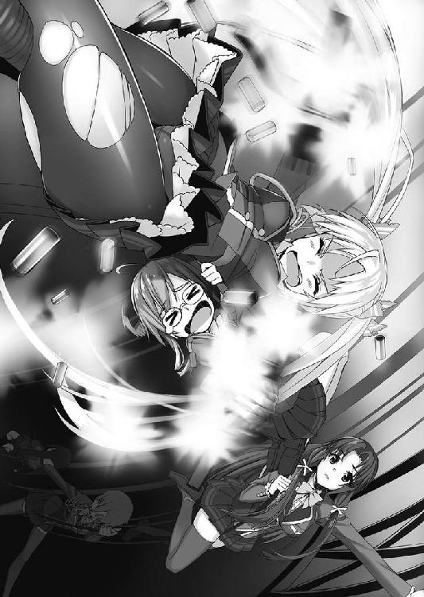
そんな状況なので、わたしに向かって何かが落ちてくる様子が確認できました。
「ふあぁぁぁ！ 熱い熱い熱い！ なんですかこれ！ 薬莢が！ 薬莢が熱いです！」
美詠さんから落ちてくる大量の薬莢が皮膚に当たり、もの凄く熱いです！ この通路、完全に失敗だったのではないでしょうか!?
「我慢しろ！ あたしも銃の下にいるから同じく当たって熱いんだよ！ しかも怖くて目が開けられないから、いつ来るかわからないんだぞ！」
そのせいでしょうか、さっきから連射はしているものの、あまり敵に当たっていません。
「あら、先頭にいるのが役立たずのせいで、これ以上登るのは諦めた方がよさそうですね」
「誰が役立たずだ──......ひっ！」
美詠さんは音子さんの方を振り向き、下を見て、小さく悲鳴を漏らし、撃つのをやめてロープにしがみつきました。
......いやもう、役立たずの名を欲しいままにしていますね。
「......本格的にこの通路は無理そうですね」
音子さんはそう言うと、近くにあった九階の扉に手をかけ、力任せにこじ開けていきます。まあ、開けようと思えば普通の人でも開けられるものなんでしょうけど、ハリウッド映画のパワーキャラみたいですね。
扉が人ひとり通れる広さになると、向こうに数人の敵がいることが確認できました。音子さんは単身そこに乗り込んでいくと、一番大柄な男にタックルを決めます。
そしてひざの裏に手をすべり込ませ、もう片方の手で襟をとりナイフを突き刺します。
相手は完全に懐をとられ、足も掬われているので身動きが取れません。
そしてそのまま体勢を崩させつつ、股の下に肩を滑り込ませ、手を相手の腰に伸ばして銃を抜き去ります。
「申し訳ありませんが、盾になっていただきます。下手に動きますと大事な血管が切れる可能性もありますので、お気を付けください」
その人を盾にしつつ、銃を他の敵へ向け撃ちぬいていきます。
そして、盾にした彼以外が全員倒れると、ナイフを抜き、そのまま柔道技の肩車のように持ち上げ......こちらに近づいてきて、
「ご苦労様」
わたしたちのいる、『エレベーターのないエレベーター空間』......まあ、つまり九階の高さの筒へと放り投げました。
......大丈夫でしょうか？
「なんか今！ ウチの横をでかいのが通過した！」
わたしにできるのは、手を合わせることぐらいです。
「お姉さま。とりあえずこの階で降りて、後は階段で行きましょう」
「わ、わかりました」
わたしがその階に降りると、美詠さん......続いて春さんがこちらへとやってきました。
「くそっ！ 目が開けられないせいで倒せなかった」
「こっちも似たようなものデスよ。さすがにあの相手に、リボルバーはキツイですネ......」
と、そんな戦果の話をしていると、未だにワイヤーにぶら下がってる響さんが──
「......」
グレネードを取り出し、下に向かって落としました。そして数秒後、爆発音と大量の悲鳴......。
今度は美詠さんと同じように、ワイヤーでポールダンス状態になり、スナイパーライフルを上に向けると、──タァンという音の後に一人、エレベーターの中を落ちていきました。
「......両方とも、一撃でしたね」
「......なんてこと......ない」
なんとなく視線が、奮闘していたお二人の方へと向いてしまいます。
「いやっ！ 高所恐怖症だからさ！」
「グレネード持ってなかったからデスよ!?」
「いえ、別に何も言ってませんよ？」
それでも、お二人は悔しそうな表情をしています。
まあ、充分すごいとわたしは思いますよ？
そんなことを考えつつも、また敵が来ないか心配になり、部屋の中を見回していると、
「......お？ なんか、見覚えのあるものがありますよ」
「見覚えデスか？」
そこにあったのは、この事件の原因となり、さらにはわたし達が出会うきっかけとなったもの。
「これ......ヌイグルミ......あと爆弾......」
響さんが手に取り、しげしげと眺めます。
「......懐かしい」
見たくもない量を解体してから、それほど時間は経っていないはずですが......どうやらわたし達とは異なる時間軸で生きているようです......。
「ああ、探していたのはこれデスよ！ ちょうどいい所にありましたネ！」
「これらは、全部持っていくのですか？」
「もちろんデス！」
「持てない量じゃないけど、この量は全員で持っても手が塞がるぞ」
確かに、三〇個以上あります。この量を持ったら、誰も銃を打てなくなってしまいます。
「大丈夫ダイジョーブ！ 銃を撃たなくていい子に運んでもらいますカラ」
「......え？」
それってわたししかいないじゃないですか。
数分後、わたしはえらいことになっていました。
「......な、なんですかこの恐ろしい状況は！ 自爆テロでもしろっていうんですか!?」
わたしは......全身に爆弾を括り付けられていました。
「お姉さま、よくお似合いですわよ」
「嬉しくありません......」
「お姉さまの引くような幼児体型が、見事なダイナマイトボディになっていますわ」
「心から嬉しくありません!!」
うまいこと言ったつもりでしょうか、まったく！
「......胸の辺りに......いっぱい入れれば......スーさんも......ばくにゅーに......」
「ひっぱたきますよ？」
「......叩かれるのは......まあ......嫌いじゃない......」
「響さんの意外な性癖が発覚しました!?」
同居人としてものすごく不安です！
「まあ、両手じゃ持ちきれないでしょうシ、ウチらは銃を持って戦わなきゃいけないし、これしか手がないんですよネー」
まあ、それはわかりますが......。
「転ぶなよ？ あと撃たれるなよ？ その瞬間、全員が木っ端微塵になるからな」
「わたしはたぶん、微塵どころか塵芥すら残らないでしょうねー......」
「それじゃあ、いざ上階ですネ！ 時間もないですし、全力で走っていきますヨ！」
全身に爆弾付けて、全力で階段を走って、しかも転んだら即死亡。
今まで編集部でデスマーチを経験したことはありますが、今のこれこそが、本物の死の行軍です。
その後、残り数階分の階段を戦いながら登り切り、わたし達は目標階へと到達しました。
「......はぁ、はぁ......やっと着きましたね」
よかった......本当によかったです。転ぶことも爆発することも塵芥になることもなく、無事目的地へと到着しました。
「そうデスね、それじゃあ始めましょうカ？」
地下で考えたあの作戦......ですよね。はぁ......本当にできるのでしょうか？
知ってのとおりわたし達は、降りた九階で目的のものを発見しました。
それはこれ......今回の事件の中心である爆弾です。
種類は工業用火薬。
これの重さの一二倍程度のコンクリートを吹き飛ばせるそうで、量を調節し、それらを天井に貼りつけました。それで何をするかというとですね......。
「本当にできるんですか、そんな無茶な作戦......」
「大丈夫、ダイジョーブ！ それに言ったデショ？ ここを丸ごとぶっ潰すって」
不安です。不安しかありません。こんな脳から常にドーパミン出してるような人の作戦が成功するなんて、まるで思えません。作戦が粗すぎます！
しかしまあ、
「セットした時間まで、あと一〇秒デス」
「落ち着いてくださいお姉さま、失敗したらしたで、次を考えればよろしいかと」
「失敗したらたぶん死んじゃいますよ!?」
──９
「死ぬとか失敗とか、縁起でもないこと言うな！ こっちは高いとこ連れてかれて、もう色々限界なんだぞ！」
「そ、それはすみませんが、嫌なら美詠さんも反対してくださいよ！」
──８
「限界といえば美詠、響から貰った紙おむつは、ちゃんとはいてますか？」
「うるさいな！ はいてるよ！ っていうか、限界でそっちを思い出すな！」
「エレベーター内でははいていなかったようですが、本当に大丈夫なのですか？」
「この部屋に入ってからはいたよ！ っていうか、人が大変だったときに、どこ見てるんだ、お前!?」
──７
「あああ！ 本当にうまくいくんでしょうか！ 死んじゃうんじゃないでしょうか！」
「......大丈夫......元気があれば......何でもできる。......孔子の言葉」
「それたぶん、言ったの孔子じゃないですね」
──６
そんな時でした、エレベーターが復旧したのか、二つともが上りを表示し始めて、こちらの階へと向かってきています。
「来てます！ どうするんですか！ 敵、来てますよ！」
──５
「大丈夫ダイジョーブ！ たぶんギリギリで全然平気デス！」
「それ大丈夫って言いますか!? ギリギリって、全然とは真逆の言葉ですよ!?」
──４
「あら......あちらからも来ているようですね」
耳をすませば、階段の方から大量の足音が聞こえてきています。
──３
「大丈夫ですか！ 本当に大丈夫ですか！ 迎え撃つ準備とか！ そういうのいいんですか!?」
「うるさい！ こっちはいろいろ覚悟を決めて、精神集中してるんだから邪魔するな！」
──２
「騒ぐなって方が無理じゃないですか!? だって、銃持った人がたくさん来るんですよ！ 天国行きですよ!?」
「澄緒ちゃん落ち着いてくだサイ。行きませんよ天国なんて──」
──１
「......だって、ウチらが今から行くのは──」
エレベーターがこの階に到着し、扉がゆっくりと開きます。それと同時に階段の方からも、この階に到達した音が聞こえます。......もうだめです、間に合いません。
「──奈落デスから」
──０
「ひっ!?」
──ドォ！ ドドドドドドドォォォォォォ！
連続した爆発音が、わたし達を包みます。聞こえてきたのは──階下から！
男たちが一瞬うろたえる間に、床にいくつもの穴が開きます。それはフロアの端、壁の近くに点線を打つように出現します。
そしてそれらの穴が、繋がるようにひびが入りました。
「さあ、面白半分に街を爆破しようとした奴らから、平和を取り返しまショウ。状況──」
そう言って春さんはニヤリと悪役的な笑みを浮かべました。そして座った状態から高く足を上げ、その踵を床に叩きつけました。
「──開始！」
すると床がビシリと音を立てたかと思うと、数瞬後にはガゴンと派手な音を鳴らし、直後浮遊感がわたしたちを襲いました。
「ふわぁぁぁぁぁぁぁぁぁぁ！ 落ちてます！ 床！ ひぁぁぁぁぁぁぁ!!」
そうです、階下の天井の端にいくつもの爆弾を仕掛けたため、わたし達のいる階の床が抜けました。というか、抜くためにそうしました。これが春さんの作戦です。
敵は呆気にとられています。なにせ、目の前にいた倒すべき相手が、ワンフロア、床ごと消えているのですから。
わたし達は今、一一階の高さ、さらには吹き抜けやショッピングモール等々、色々な施設があるので、合計すれば約六〇メートルです。そこを床ごとダイブしています。
「あぁぁぁぁぁぁぁぁ!! あぁぁぁっ!! あーーーーーーーー！」
あの時、春さんが言った作戦はこういうものでした。
「だるま落としをしマス」
「だるま落とし......ですか？」
春さんはどこから持ってきたのか、オモチャのだるま落としをその場に置きました。
「なぜそのようなものが、ここにあるのですか？」
「そこの駄菓子コーナーにあったから」
「まあいいですが......」
そしてそのだるま落としを使って、作戦の説明を始めました。
「このだるまが、ウチらのいるビルだとしマス。ウチらはこれからエレベーターを使って、だるまの頭の部分に移動しマス。で、その際、だるまの胴体部分......ハンマーで叩かれて、抜いていかれるこのカラフルな部分デスね。ここに爆弾をセットします」
「そんな量の爆弾、どこにあるんだよ？」
「爆破テロやってるんデスから、どこかにはありマスって。見つけ次第それをセット」
「見つけたとしてですね、その目的は何なのですか？」
「だるまの胴体を散々痛めつけてですネ、ヒビだらけにしてやるんデスよ！ 頭を支えられないくらいボロボロにしてデスね、そしたら上から......」
春さんはハンマーを振り上げ、だるまの頭に向かって──
「叩く！」
振り下ろしました。
すると、胴体は粉々に砕け散り、だるまの頭だけが残っていました。
「えーっと、つまるところ、だるまの頭である上階を階下に落として、その重みで階下の床を壊して......というのを続けて下に降りるということですか？」
「そうデス！」
確かに、元々崩れそうだった建物に爆薬をセットし、さらには床が落ちてくる。耐えられるわけがありません。下の階の床はどんどん抜けていきます。
しかも、下に行けば行くほど、床板の枚数は増え、爆薬をセットしていない階であろうとも重みに耐えられないだろう。
と、そんな作戦でした。
爆発が起こり、床が抜け第一段階は成功といったところでしょうか？
「ひぃぃあぁぁぁぁぁぁ！ ふぁぁぁ！ あ......あぁぁあ......と、止まった......」
叫び声しか出せない美詠さんの声が途切れた時、一つ下の階に床ごと到着です。
その直後──
──ドドドドドドドドォォォォォォォォォォォォォ！
と、再び爆発音が聞こえました。
そうです、作戦のとおりもちろん下の階にも爆弾はセットされています。そしてまた。
「ひやぁぁぁぁぁぁぁぁぁぁ！ ふぁぁぁぁぁぁぁ!! 無理だ！
やっぱり無理だ！ おり、おり、おりるぅぅ！ ここで止めてくれ！」
浮遊感と共に、美詠さんの絶叫が始まりました。
この叫びはしばらく続くでしょう。何せこの作戦は、このまま下に降りて行こうというものなのですから。
「ヨーシ！ 二つ目も抜けたなら、あとはダイジョーブですネ！」
「弾も......あまり使わなかった......安く上がる......。たぶん......ミーさん......喜ぶ」
「いやぁ......それどころじゃないと思いますけど」
さっきから、わたしが引くほどの悲鳴を上げてますし。
床は一気に抜けるのではなく、着地してそこが重みで崩れて......次の床も着地して重みで崩れて......という繰り返しです。一番上の床板にいるわたし達は、小刻みな落下なのであまり衝撃はなく、安全に落下しています。......だとしても非常識すぎる案ですけどね。
その後も下の階は潰れ潰れ潰れ潰れ......おそらく下の階にあったであろう爆弾も、数枚重ねられた床のせいで、こちらに危害を加えないまま爆発していきました。
だるま落とし完了......と同時に、床の落下も終わり、やっと動かない地面になりました。
十枚以上も重ねられた床は、その半分以上が一階床を突き抜け、地下を埋めました。
そのおかげで、わたし達は一階と変わらない高さに到着することができました。
「おー......見てくださいヨ。ビックリするような吹き抜けデスよー」
「まあ吹き抜けといいますか、空洞になってしまわれましたね」
この建物......残っているのは、外壁と、エレベーターと階段のみです。
「あ......」
いつの間にかかなりの時間が経っていたようで、朝日が昇ってきています。
ビルに光が差し込むと、その吹き抜けとなった部分がすごくわかりやすいです。
「あんな高さから落ちてきたんですね、わたし達......」
「あー......あぁ......あははは......ふふっ......あははははは！」
ペタリとお尻をつけたまま座っていた美詠さんが、壊れたように笑い出しました。
涙目で、焦点もあっていません。
「だ、大丈夫ですか？」
「だいじょうぶじゃない。だめだったぁ......」
何がどう大丈夫じゃなくダメだったのか......それは聞かないでおくのが優しさでしょう。
「......神秘的......なんか懐かしい。この感じ......お母さんの実家みたい」
響さんのお母さん、とんでもない所に住んでましたね。
「はぁ......」
しかし、春さんは最初から言っていたとおり、この組織を潰しましたね。......物理的に。
「......非常識」
もうそんな言葉しか口から出てきませんでした。
戦闘終了後
あの後、彼らの目的が判明しました。
どうやら、目的はあっても目標はないという、ちょっとややっこしい行動理由だったのです。
警察が来る前に首謀者を拘束して、脅しを伴うインタビューをしたところ『爆破場所はどこでもよかった』そうです。
いえ、どこでもいいというのは語弊があります。真一市であればどこでもいいというのが正解です。
わたしがあの時に例として言ったものと、ほぼ同じ内容でした。
それは治安の悪化。
真一市の治安を悪化させるのが目的だったようで、それによって利益の出る人がいたそうです。
それはＰＭＣなのか、それとも銃器のメーカーなのか。
はたまた、銃器の反対派が「それ見たことか」とマッチポンプをするためにやったのか。
そこまではわかりませんでした。
主犯はただ、その技術があり、それにお金を出してくれるところがあったからやった......ということでした。
「......つまりですね、割れ窓理論的な感じで、治安を悪化させようとしたわけです」
「爆弾で割れ窓理論とは、ずいぶん乱暴で大掛かりな割り方ですのね......」
あの事件から数日が経ち、わたしは春さんたちに呼ばれて旧校舎へと足を運びました。そして今のような顛末を書いた雑誌を、机の上に広げました。
「これ、スイーツ記事以外で初めてわたしが書いたものです！」
「おー！ やりますネ、澄緒ちゃん！」
「はい！ おかげさまで、編集長からもう少しだけ猶予をいただけました！」
まあ正直、これくらい大きな事件だった訳ですから、出世やら金一封やらがあってもいいと思ったのですが、とりあえず今回はクビ回避となりました。
まあ、よしとしましょう！
「なあ、割れ窓理論って何だ？」
「建物の窓が割れて放置されていると、そころからポイ捨てや軽犯罪などが起きてしまい、環境が悪化し、最終的には犯罪が起きやすくなってしまうという理論です」
「窓が割れてるだけで、なんでそうなるんだ？」
「......悪いことであろうと......小さいことから......コツコツ......そういう教訓」
違います。
「ああ、いい言葉だったんだな......」
まあ、説明してもわかってもらえなさそうなので、とりあえず放っておきましょう。
「ああ、それと澄緒ちゃん。この校舎の鍵あげますネ」
「え？ いいんですか？」
「もちろんです。いつでもいらしてください」
春さんも音子さんも、にっこりと笑っています。
「え、えへへ......なんだか仲間だと認められたようで、嬉しいような、恥ずかしいような......照れくさいですね」
「何言ってるんデスか？ 仲間デスよ？」
......わたしはただ、皆さんについていっただけですし、仲間と呼ばれるほどの働きをした覚えはありません。
でも、死線を潜り抜ければ......きっと、そうなれるのでしょう。
「わかりました......。わたしは会社に戻り、いつもの業務に追われると思いますが、皆さんのことは絶対に忘れません。きっとまた、遊びに来ます」
そう言ってわたしも、彼女たちに笑顔を向けました。それはもう、とびっきりのを！
......ですが。
「は？ お姉さま、お戻りになれると思っているのですか？」
「え？」
「ウチらのこと、外部に漏らされたら困りますシ。会社の業務になんて戻れないデスから」
「いえ......ですが、あれ？」
「仲間になるって言ったでショ？ 基本的にはこっちを主体で動いてもらいマスから」
「え？ 仲間ってその......いい感じの、心的な仲間じゃなくて......なんて言うか、物理的に仲間ですか!?」
「そうですネ」
ふおおおおぉぉ......なんかいい話な感じで終わると思っていたのですが。
「澄緒ちゃんの観察力とか発想力は、ウチのメンバーにはあまりいないデスしね。あとロリも。しかも合法デスし。期待してマスよ」
彼女たちの性格からいって、断るのは無理でしょう。
断ったところで、何かしらの弱みだったり、とんでもない圧力だったりをかけて、わたしに言うことを聞かせるでしょう。
......でも、そんな嫌々やっても、役に立てなければいい記事も書けません。
だったら......記者として、彼女たちの仲間として......やってやろうではありませんか。
「はぁ......わかりました。その鍵、いただきます」
「ん、ありがとデスね、澄緒ちゃん」
そう言って春さんは、満面の笑みを私に向けました。
こうしてわたしは、お菓子から銃を扱う女子高生たちへと取材対象を変更しました。
彼女たちと過ごす日々は、きっと刺激的で、鮮烈で、わたしには今までなかったものでしょう。
この出会いが、わたしを変えてくれるでしょう。
ちょっとだけ恨んで、ちょっとだけ感謝します。
こうして、わたしが出会った一番最初の事件、銃とウサギとの出会い、そして年甲斐もなくツインテールにした理由は幕を下ろします。
これからも彼女たちといる限り、事件をメモしたこの手帳は文字で埋められていくのでしょう。
ただ、これを書きながら思うことがあり、きっとこれからも、そう思うのでしょう。
『どうかこのメモが遺書にならないように......』
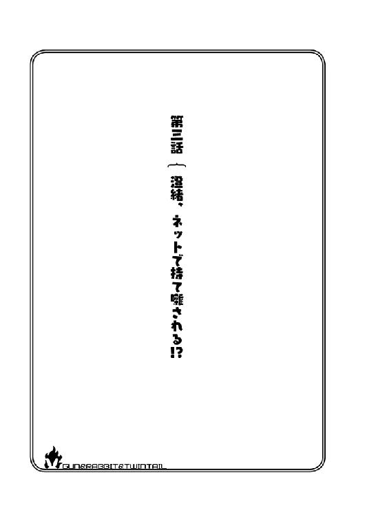
第三話 澄緒、ネットで持て囃される!?
こんにちは、天野澄緒です。
いつの時代も学生は血気盛んと言いますか、無駄に血の気が多いと言いますか、ちょっとヤンチャしちゃったりしますよね。
わたしがいた学校はそこそこ荒れていまして、授業中うるさくしていた生徒が教室を追い出され、その仕返しに廊下の消火器を噴射させたりしていました。
結果、消火器はすべて没収され、全部職員室に置かれることになりました。
......実際に火事が起きたら、とんでもないことになっちゃう処置だと思うのですが......まあ、頻発していたので仕方ないのでしょう。
さて、なんでわたしがこんな話をしているかというと、今ここで、そのヤンチャが行われているからです。
「旧生徒会役員の皆さん。銃をお収めなさい」
生徒会長の鈴千さんが、にっこりと笑いながらそう言います。ただし、その手にはモーゼルというハンドガンが握られています。
「収めてるヨー。収めてマスよー。まあ、このままでも撃てマスけどねー」
春さんは、ピースメーカーをホルスターに収めたまま銃口をそちらへと向けています。ヒップショットというやつです。
学園が学園なだけに、ヤンチャの度合いは恐ろしく過激です。やっぱり非常識です。
そんな感じで対峙しているのは二人だけではなく、音子さんも美詠さんも響さんも同じで、生徒会の方々と銃を向け合っていました。
旧校舎の生徒会室は、もはや戦場一歩手前、一触即発の状況です。
ちなみにわたしは、人が入ってきた時点で掃除用具入れに放り込まれ、コブラツイストをかけられながらパワーボムをされたような、自分の手足がどこにあるかわからないという、とんでもなく酷い体勢でそれを見守っていました。
さて、なんでこんなことになったのかというと、話は数日前に遡ります。
その日、春さんの召集を受け、灼熱兎の四人......あ、いえ、わたしも含まれることになったので五人ですね。とにかく、全員が旧校舎に集まっていました。
「みんな、よく集まってくれマシた！」
春さんは勢いよく立ち上がり、腰に手を当ててそう叫びました。無駄に自信満々です。
「いつも集まっているではありませんか......。記憶力までぶっ壊れになりましたか？」
「集まってもらったのは、もちろん訳と事件があるからデス！」
そして無視です。音子さんの声は届いていないのでしょうか？
まあそれよりも、彼女の口から出た事件という言葉の方が気になります。
「それで、どんな事件なのですか？ 無駄にテンションも高いですし、それなりのことなのでしょう？」
「そこそこの事件です！ できる限り内密で行きマスよ！」
「そこそこの事件って言ってるのに、こんな大声で喋って外部に漏れないのか？」
「大丈夫デス！ 周りに誰もいませんでしタ！」
「ハル......普通に......うるさい......」
軽快ですが、何一つ先に進まないトークです。まあ、進行役である春さんがああですから、それも仕方ないでしょう。
と、春さんは一度席について、わたしたち一人一人に目を向けていきます。
「今回の事件は武器の横流しデス！ どこかから仕入れられた武器が、どこかへと売りさばかれてるらしいノです！」
「あの......情報が『どこかからどこか』な上に『らしい』っていうのは、どういうことなんですか？」
「確定してないってことデス」
確定していない事件なのに、そこそこの事件......どういうことでしょう？ どこか、怪しい団体の行動でもつかんだんでしょうか？
「春、武器を横流ししてるというのは、どこの誰なのですか？」
「わかんないデス！」
「じゃあ、その武器を買い取ってるのは誰なんだ？」
「わかんないデス！」
「......その横流しが......発覚した経緯は......なに？」
「わかんないデス！」
「お前！ なにもわかってないんじゃないか！」
美詠さんが机を──ガンッと叩きましたが、気持ちはわかります。
っていうか、春さん......むしろすごいです。全然わかってないのに自信満々です。一体、何をどうやったらこれを事件と呼べるのでしょう。
「そうなんですヨ、ぜんっっっっっぜん！ わかってないのデス！ ウチも全然わかんないんデス！」
「お前、妄想とか妄言とか、そういう痛い感じのにあたし達を付き合わせようとしてるんじゃないだろうな？」
「病院は早いうちに行かれた方がよろしいかと思います。しかし、普通の精神状態ではないとは思っていましたが、ついに響側の人間になってしまったのですね......」
「違いますヨ!?」
一生懸命否定していますが、まあその発言じゃ言われても仕方ないですね。
「......らっしゃっせぇー......」
響さんが手招きをしてます。
「そっち側の人間じゃないデスよ!?」
というより、響さんはそれで納得してるんですかね？
「違うっテ！ 病気から来るあれじゃないんデスよ！ あるんデス、事件は！ ......たぶん」
......たぶんって。
「とりあえず、その情報収集も含めてのミッションデス！ はい、解散！」
「......」
『火の無い所に煙は立たぬ』と言いますが、今回は『煙もないのに火元を探せ』ということです。
わたしを含め、春さん以外の全員が面倒くさそうな顔をしていました。
「お姉さま、少しお時間よろしいですか？」
「はい？ なんです？」
会議が終わり、廊下に出ると音子さんに呼び止められました。
「先ほどの件で情報を集めようと思っているのですが......お姉さまの特性を見込んで、少々お願いがあるのです」
わたしの特性？ 何でしょう？ もしかして雑誌記者であるということでしょうか？ 確かに、情報収集であればそれは役に立つかもしれません。
「わかりました！ お手伝いします！」
「はい、ありがとうございます」
音子さんはニッコリと柔らかい笑みを浮かべると、近くの教室に入り、適当な席に座ってノートＰＣを開きました。
「お姉さまは、その辺りに立っていただけますか？」
「わ、わかりました」
すると音子さんは、わたしにスマートフォンを向けました。
「あの......なんですか？」
「今から、私の言うように喋っていただけますか？ ああ、安心なさってください、口より上は写しませんので」
......いったい、なんなのでしょう？ 口より上を写すと......何があるのでしょうか？
「いいですか？ では......──わたしは今、隙を突いてこの動画を送っています」
「......わ、わたしは今、隙を突いてこの動画を送っています」
よくわかりませんが、そのまま彼女の言ったことを復唱していきます。
「──わたしは偶然、武器の密売現場を見てしまい、その人達に拉致されています。ここがどこなのかわかりませんが、おそらく真一市のどこかだと思います。この人達が誰なのかわかりません。どうかわたしを見つけてください......今も玩具のように扱われ、昼も夜も性の奴──って、なに言わせるんですか!?」
「はい、よくできました。たどたどしい感じもよかったですよ」
誉められながら、指だけの小さな拍手を送られました。
「ちょっと！ 何なんですかそれ、何に使うんですか！」
「最後の部分は、見つかったから映像が途切れた感じにしましょうか」
「なに編集のこと考えてるんですか！」
「大丈夫ですよ。あんま変なことには使わない予定ですから」
「あんまりってことは、ちょっと変なことには使うってことですか？」
「お姉さま!? 私をお疑いになるんですか？」
いや......普通に信用できないんですが。
「あの......わたしの特性を見込んでって、雑誌記者の能力じゃないんですか？ なんでこんなことやらされてるんですか？」
「逆に聞きますが、何故スイーツ記事ばっか書いてる三流雑誌の四流記者であるお姉さまに、銃火器の話を聞くのですか？」
さらりと罵倒されました。
「わ、わかんないじゃないですか。もしかしたらガレット・デ・ロワ（フランスのお菓子）の中に、人形の代わりに銃弾を入れたりとか、シュー生地にグレネードが包まれてるとか、そんな受け渡し方法かもしれないじゃないですか」
「ではお姉さまは、その線で探していてくださいね。お疲れ様です」
うぅ、相手にもされてません。微妙にへこみますね。
「あの......ちなみに音子さんは、どうやって情報収集するんですか？」
「私ですか？ 私は今回、ネットの方から当たろうと思ってまして」
「あー、それじゃあわたしの出る幕はなさそうですねぇ」
「んー......厳密にいうと、出る幕はあるのですけれどね」
「え？ わたし、普通程度には使えますけど、そういう専門的なお手伝いができるかというと、たぶん無理ですよ？」
もちろん会社はＰＣ業務がメインなので、普通の人よりは使えますけどね。
「でもなんか、音子さんのようなＰＣスキルってすごいですよね！ 映画みたいでかっこいいです！」
「あー......もしかしてお姉さま、ハッキングや、どこかのサーバーに入ってデータを抜き取るとか、そういうのをすると思っておられます？」
「え？ ＰＣで情報集めるってそういうことじゃないんですか？」
音子さん困ったように笑いながら、顔の前で「ちがうちがう」と手をぱたぱたとさせています。
「すみません。期待させてしまって申し訳ないのですけれど、私ではあんな映画みたいなことはできません」
わたしも同じように、困った顔を彼女に向けます。
「ではどうするのかってことですよね？ なんて言えばいいのでしょうか？ ＰＣは使うのですが少々アナログな方法となります」
「アナログ......ですか？」
「はい、頼るのは機械じゃなくて人の手です」
「......具体的には？」
「暇を持て余してるニートに手伝ってもらい、一日中ネット上の情報を探ってもらいます」
「それは......また......本当にアナログですね」
「穀ばかり潰している彼らに、活躍の場を与えるという......いわばボランティアです」
感心していいのか悪いのか微妙なところです。
でも、機械に情報を判断させるより人の手で集めた物の方が、生きた情報や関係ありそうなことなんかを判断してくれるでしょう。
これはこれで、いい方法なのかもしれません。
「でも、そういう人たちを雇うと結構お金かかっちゃうんじゃ？ 美詠さんに怒られませんかね？」
「大丈夫です。彼らはお金で動くわけじゃないので」
「というと、やはり正義感とか、使命感とかそういう熱いものですか！」
ニートや引きこもりの方って、意外とまじめな人や、正義感が強い人っていますからね。
「いいえ、今回はある画像と、先ほどの動画で集めるつもりです」
「画像？ 何のですか？」
音子さんはスマートフォンを取り出すと、慣れた手つきでその画像を表示させ、わたしの目の前に持ってきました。
「どれどれ？」
そしてその画像というのは──
「ちょっと！ なんですかこれ！ これ、わたしの画像じゃないですか！」
「そうです。ちなみに、全部で四枚あります」
なんですって!? いったい何が撮られてるのか確認しなくてはいけません。
画像をスライドさせて、その全てを見てみます。
一枚目──わたしが制服姿で歩いている画像。
二枚目──前回の事件で、ヌイグルミをもらっている画像。
三枚目──前回の事件のビルに入っていく画像。
四枚目──初めてここに来た際、トラップにビックリして漏らしてしまった画像。
そして始まる動画──
『──わたしは偶然、武器の密売現場を見てしまい、その人達に拉致されています。ここがどこなのかわかりませんが、おそらく真一市のどこかだと思います。この人達が誰なのかわかりません。どうかわたしを見つけてください......今も玩具のように扱われ、昼も夜も性の奴──』
そこで映像が途切れました。
「なにしてくれてるんですかコラァァァァァァァ！」
「どうです？ この順番で見ると、銃器密売を偶然発見したロリ女子高生が、後日ヌイグルミを餌に廃ビルに連れ込まれて、脅されて粗相をしてしまった挙句、性の玩具にされている感じではありませんか？」
「なに時系列弄ってストーリー性を持たせてるんですか！ どうしてくれるんですか！ ホントに！」
「ありがとうございます、お姉さま」
柔らかくてものすごくかわいらしい笑顔でした。でも騙されません！ 何がありがとうですか！
「これ！ 情報提供者に、お礼として渡すんですか!? 最悪ですよ！」
「ふふっ......さすがに違いますよ。その辺りは大丈夫ですから。では、結果は明日知らせますので」
「いえいえいえいえ！ 信用できません！ 説明してくださいよ！ なんで協力させられて、ちゃんとした説明がないんですか!?」
音子さんはニッコリとした表情から一転、若干面倒くさそうな顔に変わりました。でも負けられません、あんな動画を変なことに使われたら、たまったもんじゃないです。
「音子さん、わたしたち仲間ですよね？ 変なことには使いませんよね？ お礼に渡したりしませんよね？」
「大丈夫ですよ。お礼に渡したりなどしません。ただ......ネットで拡散するだけですから」
「非常識ぃ！」
最悪です！ 一番やっちゃいけないやつです！ 個人情報に関してもっと考えてほしいです！
「待ってくださいよ！ ねぇ！ 仲間ですよね！ なんでそんな酷いことするんですか！」
「仕方ないのです。私だって泣く泣くやっているのです。情報収集のためです。それに、顔はほぼ隠れてるのだからいいではありませんか」
「よくないです！ 全然よくないです！ むしろ本物感が出ちゃうじゃないですか！」
「本物感が出なくては、まるで意味がないのです」
「やめてください！ お願いですから本当にやめてください！」
「んー......困りましたね。画像は先ほどアップしてしまったので、元を消しても今更な気もしますが......」
......最悪です。この人、最悪です。もう、泣きそうです。っていうか半分泣いてます。
「なんで、なんでそんなことするんですかぁ......」
音子さんはわたしの方を向き直って、肩を竦めました。
「たとえばですね、人の噂になる時に『この街にある銃密売の情報渡したら、お礼にロリの変態画像くれるらしいぜ』だと、大して人は集まらないのです。ですが『銃密売組織にロリが捕まって、この街で変態的なことをされているらしい』だと、話題にはなりやすい。そう感じませんか？」
「いえあの......わたしが聞きたいのはそうではなくて......」
「同じ画像を見るとき、前者は目的も行動もエロになりますよね？ ですが後者は『その子を助けたい』って大義名分ができます。心の中の目的はエロでも、対外的な理由ができるのです。この『若干遠回りしている感』これが意外と大切なのです」
「そうじゃなくて、なんで仲間に対して、そんなに非人道なことができるかを聞いているんです！」
音子さんはキョトンとした表情で「そちらですか」と呟き、そして言葉を続けました。
「そもそも、武器を密売している方々が非人道であり、全ては彼らの責任です。それを止めるためには、心を鬼にしなければならないのです。むしろ一番つらいのは、私なのです」
「どう考えてもわたしの方が辛いです」
「早期解決のためです。どうかご協力ください」
......理屈はわかりますが。
「そんなの自分の画像でやってくださいよ！ なんでわたしなんですか！」
「やっぱロリは人気あるのです。いかにも気が強そうな美詠も人気がありましたけど、今回は、すでに流した分だけでも食いつきが半端ではありませんでした」
「美詠さんもやらされてるんですかっ!?」
「もちろん内緒ですけどね」
言ったらきっと、血の海が見られることでしょう。
「あ、もうスレッドができましたよ。『真一市で拉致された少女について』ですって。書き込みも『これはいいロリ』『この子が性の玩具とかｗ』『剃毛してぇ！』ですって。変態ですね」
......もう本当に最悪です。表を歩けません。親に申し訳がないです。
「盛り上がるようにこっちからも書き込みます。えーっと『今、隙を突いて書き込んでいます。剃毛と言われましても......まだ生えてないんで無理です！』と」
「本当に何してくれてるんですかコラァ！」
「ですが、その体形で生えているのでしたら、男性に引かれてしまうではありませんか。あの......もしそうなのであれば、手入れはしっかりしませんと、いざという時に失敗する可能性が」
「そんな気の利かせ方はいりません！」
職場の人にでも見られたらどうするんですか！
はぁ......。ですがまあ、情報のためですからね。
「わかりました......今回はもうやってしまったことですし仕方ありません。皆さんは銃弾に身をさらして頑張っているんですから、わたしもこのぐらいのことはさせてもらいましょう」
「ありがとうございます、お姉さま。私の方が悪いというのに、気遣ってそういう言い方してくれる大人なところ、本当に大好きです」
うぐ......一瞬素直に非を認めるのと、それと同時に誉めるところに好感が持てます。
演技だってわかっているのに、あざといと分かっているのに、それでも嬉しく思えるような笑顔です。
「でも今後は絶対にやめてください！ 今度やったら美詠さんにチクりますからね！」
「えー......お姉さま、絶対に人気出るので、今後も使いたいのですが......」
「人気あってもやりません！ 今後絶対にその画像も新しい画像も表に出さないでくださいね！」
音子さんはつまらなそうに「はぁ......」と溜息をつきました。溜息をつきたいのはこっちですよ！
「いいですか！ 絶対ですよ！ 何があろうと絶対にダメですからね！」
「はぁい。......はぁ、私がマネージメントをすれば、三日ほどで今の年収と同じくらいいきますのに......」
「え!?」
......三日間でネンシューと同じ。
「そ......それでもダメです！ 何があろうと、わたしがクビになった時とお金に困った時以外は、絶対に認めませんからね！」
「お姉さま......お金に困ったらやるんだ」
微妙に憐れむような眼をしたまま、音子さんはＰＣモニターへと視線を移したのでした。
それから数日が経過しました。
わたしも自分なりに情報を集めてみたのですが、関係のありそうなものはまるではありませんでした。
そうであるなら、音子さんのあの情報を頼りにするしかないのでしょう。
まあ、あれだけ身を切ったのですから、何かしらの情報が入ってないと困ります。
わたしは旧校舎へ向かい、生徒会室の隣にあるＰＣの置いてある教室へと足を踏み入れました。
そこには音子さんが、だるそうに座っています。
「あの、音子さん。あれからどうですか？」
彼女は微笑むように表情を変えると──
「全然ですね」
そう溜息をつきました。
「えぇぇぇぇぇっ!? 待ってくださいよ！ 全然って何ですか！ あんなことまでしたんですよ！ なんで全然なんですか！ 説明してくださいよ！」
「ごめんなさい......お姉さま。私が役立たずなせいで」
音子さんは目元をゆっくりと頭を下げて、ハンカチで目元を押さえています。
「し、しおらしくしてもダメです！ 泣きまねだってわかりますから！」
彼女は「はぁ」と溜息をついて、わたしに赤い目を向けました。......あれ？ もしかして、本当に泣いていたとか？
だとしたらわたしは、泣いてる女子高生を怒鳴ってしまったわけで......。どう声をかけていいのでしょう？
そんなことを考えていると、扉の開く音がして、毛布を引きずった響さんが現れました。......相変わらず謎な人です。
「オッさん......お疲れ......。......スーさんも」
「オッさんはやめてくださいと言ってるでしょう。で、コーヒーは？」
「買ってきた......紙コップのやつ......。カーさんの......ブラックコーヒー。あと......私の......ホワイトコーヒー」
「気になったんで聞きますけど、ホワイトコーヒーってなんですか？」
「一〇〇％コーヒーなのが......ブラック......一〇〇％ミルクなのが......ホワイト」
「それはもはや牛乳ですね」
響さんはハッとした表情をしてホワイトコーヒーを見ています。
「これ......コーヒーじゃ......なかったんだ......。だから......飲んでも眠くなるんだ......」
「カフェイン、一ミリも入ってませんもんね」
「だから......眠気覚ましに......沢山飲むと......お腹を壊すんだ......」
ホワイトコーヒーを見ながら愕然としています。なんだか若い子の価値観を、一つ壊してしまったようで妙な罪悪感にかられます。
「それはいいので、私の分のコーヒーをお願いします」
音子さんはブラックコーヒーを受け取ると、溜息をつきながらそれを飲み干します。
よく見ると、その顔にはクマが浮かんでおり、寝不足の跡が窺えます。
「目も赤いですけど......もしかして、徹夜ですか？」
彼女はコクリと頷き、情報が来てるであろうＰＣをわたしの方へと向けました。
「受信トレイ......未読１７８９」
「量が多すぎるのです。ロリの変態画像とか......効果があり過ぎました......。しかもほとんどが『真一学園が怪しい。密売できるのもあそこしかないだろうし、外部に情報も出ないしな』と、うちの学園のこと言っていますし」
どうやら、全てのメッセージを読むのに、かなり苦労しているようです。
「人をあんな目にあわせるから、罰が当たったんですよ。これからもメールが増えて、苦しめられるといいです」
この前はやり込められましたから、ちょっとした仕返しに言ってやりました。
「言っておきますが、このメールと同じだけの人があの画像と動画を見ているのですよ？」
......そうでした。むしろ私の方が苦しめられるんでした。
「あ、響さん、昨日は家に帰ってきませんでしたけど、その様子だとお手伝いしてたんですか？」
「......ちがう」
響さんは首をフルフルと横に振り、羽織っていた毛布を横に置きました。......っていうか、あれを引き摺ったままコーヒー買いに行ったんですかね？
「私は夜......情報収集のために......徹夜で色んな所に......行ってた」
「あ、そうだったんですか」
「ボウリング場......それに併設されてるゲームセンター......そこにあったダーツ......ストラックアウト......縁日みたいなとこの輪投げ......色々行った」
「それ、行った場所は実質ひとつですね。一五分いくらで遊び放題のお店ですよね？」
「ボウリングのしすぎで......腕がしびれる。私の家より......旧校舎の方が......近かった。......だからこっち来て......自分の腕を枕にソファーで寝てたら......なお痺れる。狙撃......今日は不安......」
チーム唯一のスナイパーが、いったい何をやっているんでしょうか。
音子さんもものすごく疲れた顔をしていますが、まあ言っても無駄と思ったのでしょう。何も言わずに顔を伏せました。
「とりあえず、私一人では全部見きれないので、みんなにも手伝ってもらいます。春と美詠は来ていますか？」
「はい。さっき覗いたら、二人してなんかの書類を見てました」
「それではそちらに移動して、手分けをしましょうか」
──と、そんな感じで私たちは、旧生徒会室に移動しました。
それから数分もしないうちでしょうか、ノックがあったかと思うと、ある女生徒に引き連れられ、四人が入ってきました。
もちろん、その女生徒は鈴千幸佳生徒会長。その後ろの四人は、おそらく生徒会の役員の方々なのでしょう。
わたしは隠されるように、掃除用具入れに放り込まれ、ただただこの状況を見守ることとなりました。
これが、ここまでに起きたことです。
「あのさ、ノックはされたけど、返事する前に入るのってマナー違反じゃないのか？」
美詠さんが鋭い目つきで生徒会役員たちを睨み、そう言います。しかし、生徒会長さんはそんな睨みに怯えることもなく、柔らかい笑みを浮かべています。
「紺具さん。あなたにマナーなどという概念があったことが驚きです」
「あ？ お前、熟れたトマトみたいになりたいのか？」
ものすごい迫力です。正面に立ってたら、それだけで泣きそうです。
「怒らせたのならすみません。謝罪はしますので、どうか許してくださいね」
「あら、謝罪などいりませんよ。美詠にマナーの概念がないのは、本当のことですから」
「まあ、そうデスよね」
「......確かに」
驚くほどの四面楚歌です。ですが、わたしも納得です。
「お前ら、全員あたしの射線上に並べ」
もう一つのＭＡＣ１０を取り出し、それを春さんたちの方に向けています。この緊迫した状況で、よく軽口を叩き合って、よく銃を取り出せるものです。
と、よく見てみると、余裕そうなのは灼熱兎の皆さんと生徒会長さんだけでした。他の役員の方々は、軽く汗をかいていたり、指先が震えているようです。
やはり、こんな状況でこんなことをできる彼女たちが異常なのでしょう。
そんな時──ゴトン！ と音がしました。
生徒会長さん以外の生徒会役員は、驚いた猫のようにビクリと体を震わせ、そちらに銃を向けました。
かくいうわたしもそちらに視線を向けると、
「はーい武器置きマシた。武器置いたノデ、用事はいったいナンですか？」
春さんが、ホルスターごと銃をテーブルの上に置いていました。すると、生徒会長さんも銃を下ろし、他の方々にもそうするように指示をしています。
こちらがまだ銃を構えている中、無抵抗と言わんばかりに銃を下ろしています。すごいカリスマ性とチームワークです。
「みんな、向こうも下ろしたんデスから、こっちも下ろしなっテ」
「あら、そこクズどもが震えた指で誤射する可能性もあるではありませんか？ 私は下ろしませんので、どうぞ続けてください」
「てか、なんで春の言うこと聞かなきゃなんないんだよ？ あたしは下ろすなら、自分で判断して下ろすから、そっちはそっちで好きにしてくれ」
「......一度下ろしたら......持ち上げるのに時間かかるから......やだ......」
「えー......なんか、ウチにカリスマ性もチームワークもないみたいじゃないデスか」
はい、こちらにはカリスマ性もチームワークのかけらもありません。
「......まあ、私はそれでもかまいません。いいでしょう。用件をお話しします」
生徒会長さんは、鞄から書類の束を取り出し、それを机の上に置きました。
そして向けられた銃にひるむことなく、凛然とした立ち振る舞いで口を開きました。
「あまり詳しくは話せませんが、どうやらこの界隈で武器の密売が行われているそうなんです。それはご存知ですか？」
「噂程度には存じています。どこからか来た銃火器を、どこかの誰かさんが、どこぞに売っている......という程度ですけどね」
「さすが華押さんですね」
......本当に噂程度しかつかんでいませんが。自信満々に言うと、知ってて隠しているように聞こえますね。
「私たち生徒会は、まだそのうちの一つの情報も掴んでいないのですが、ここにいる彼がある発見をしました。伊庭くん」
「はい。現生徒会、会計の伊庭と申します。よろしくお願いします」
一歩前に出たのは、メガネをかけた線の細い男子生徒でした。爽やか雰囲気をしており、旧会計の美詠さんとはまるで違います。同じ会計でも銀行マンと闇金レベルの差があります。
「で、何を発見したの？」
伊庭さんは、先ほどの書類を広げながら口を開きます。
「武器の流出先、流出元の情報を集めていたところ、ネットである動画と画像を見つけました」
「......画像？ その画像がなんだ？ 事件とあたし達に関係あるとでもいうのか？」
「ええ、あります。こちらを見てください」
そうして広げた書類の中には......もうお分かりですよね。先日、音子さんによってネットに流された、あの四枚の写真でした。
「うわ......この写真って......なぁ」
「何か覚えでもありますか？」
美詠さんは目をものすっごく泳がせた後「ぜ、全然」と、裏返った声で答えています。
伊庭さんはそんな美詠さんに、問い詰めるように説明を続けます。
「この写真の女の子なんですが、動画で『密売現場を見てしまい拉致された』と言っており、また我が校の制服を着ているんです。......心当たりは？」
美詠さんは『どうすればいい？』という視線を音子さんに向けると、彼女はコトンと音を立て、銃をテーブルに置きました。すると注目はそちらに集まります。
「そのようですね。私もその動画は拝見しました。あの女の子、これ以上辛い目に遭ってないといいのですけれど......」
「ええ、僕もそう思います。それで、ここからが本題なんです」
彼はゆっくりと、部屋の中を見渡しています。まるで何かを探しているかのように。
「この画像に写っているもののうち、いくつかがこの校舎のタイルに似ているんです」
「確かにそうですね、私もそう思います。ですがそんなタイル材、どこにでもありませんか？ ......結局のところ、何が言いたいのですか？」
音子さんがそう聞くと、生徒会長さんはゆっくりと口を開き、こう言いました。
「あなたたちを疑っています。密売しているところを生徒に見つかり、拉致して監禁しているのではないかと......」
「はぁ!? 鈴千！ お前、言いがかりにもほどがあるんじゃないか？」
「はい、言いがかりです。ですが、我が校の生徒がこんな目に遭っている。......なのに我々はなにも掴んでいない。であれば、言いがかりでも何でも、可能性があるところに出向き、動かなくてはいけないでしょう？」
「ひ、開き直って！ やましいものが見つからなかったら、どうする気だよ」
「それは、謝罪でも何でもします。この子がされていることを考えれば、そのくらいの恥をかくことくらい、なんでもありません」
「ぐ......」
勢いよく噛みついた美詠さんでしたが、完全に言い負かされ悔しそうな表情をしています。
しかし、それに反して春さんは不敵な微笑みを浮かべつつ、両手を上にあげました。まるで降参でもするかのように。そして──
「いやー、アタリです。ここで監禁して、武器の密売をしてるんですヨ」
そう言って銃を手に取りました。
あまりの驚きに、わたしも、音子さんも、美詠さんも、生徒会長さんも、伊庭さんも、目を丸くしています。......響さんはいつものようですが。
そして早く動いたのは、現生徒会役員の残りの三人。彼らは春さんに向けて、一斉に銃を構えました。Ｐ９０、カラシニコフ、Ｇ１７......それらのレーザーサイトが、頭と心臓に向けて照射されています。
誰もが、次にいったい誰が動き、何が起こるのかと思考を巡らせているであろうこの状況で、それを破ったのはまたまた彼女でした。
「まあ、冗談だですけどネ」
そう言って、ヘラヘラと軽薄な笑みを浮かべ、上げていた腕を下ろしました。
生徒会長さんはそれを見て「はぁ」と溜息をつき、役員の方々に銃を下ろさせます。
「こんな時に、たちの悪い冗談はやめていただけますか？ こちらは全員、あなたたちを怪しいと思っているのですから、撃たれても文句は言えませんよ？」
ここに来て初めて......初めて、生徒会長さんから貼り付いたような笑顔が剥がれました。
「まあ、そうなったらそうなったでデスよ。でもまあ、冗談と言っても簡単には信じてもらえないだろうし、もともと疑いもあったわけだし、存分に調べて行ってくださいヨ」
「......元よりそのつもりです。が、それほど自信満々ということは、本当にやましいことがないか、それとも既に見つからない別の場所に隠しているかでしょう。伊庭くん、ここの調査はあなた一人で行ってください」
「あ、はい。わかりました」
取り乱しているというか、不機嫌な様子を見せる生徒会長さんに驚いているのか、伊庭さんも他の方々も、微妙に表情を曇らせています。まあ、あんなカリスマを持っている人が取り乱せば、そこについている部下も不安になってしまうのでしょう。
そこをいくとこちらは、カリスマもなければチームワークもなく、尊敬されてもいませんし、皆さん無駄に自信満々ですからね。
「それでは旧生徒会の皆様、失礼いたしました。伊庭くん、後をお願いします」
彼女はきれいにお辞儀をすると、三人の生徒会役員を連れ、この場を後にしました。
残されたのは、灼熱兎の皆さんと伊庭さん......そして掃除用具入れで苦しんでいるわたしの六人です。
......伊庭さん、早めに出て行ってくれませんかね。この体勢、ものすごく厳しいんです。
「あの、すみませんみなさん。前任であるあなた達を疑うような真似をしてしまいまして」
「いいってイーッテ、あの子の言うことはもっともなんデスし」
なぜだか伊庭さんは、先ほどまでの堅苦しい感じから急に態度を軟化させ、苦笑いで溜息をつきました。
「いえいえ。そうであっても僕は、同じ学校の人間を疑うのは気が引けるんですよ」
「どうだかな。これを機に、あたし達を生徒会どころか、学園からすら追い出そうとしてるんじゃないのか？」
「いえ、そんなことはありません。前任者である紺具さんの残した書類を見ては、アナタのようになりたいと思うばかりです。教えを受けたいと思っても、マイナスの感情はありません」
「......そ、そうか。あはは......まあ、暇な時だったら色々教えてあげてもいいけど」
相変わらず安定のチョロさです。もはや天井知らずです。
「それで、伊庭さん。この部屋......というかこの校舎、お調べにならなくていいのですか？」
音子さんの言葉に、彼は迷うように「あー......」とか「ん～......」とか、唸り声をあげています。そして決断したかのように顔を上げると、再び苦笑いを浮かべます。
「実のところ、僕らは犯人に対してある程度の目星はついているんです」
「......え、本当ですか？ 正直なことを言うと私、何の情報も掴んでなかったのですが」
「ええ。ただ、あの画像を見ると、皆さんがその組織にいる可能性もあるため、一応調べに来たというところなんです。本当に疑っているのであれば、全員で調査するでしょうし......僕だけ置いていったのは、おそらく体裁を守るためかと」
「なるほど。対外的なことを考えなければならない役職の方は、いろいろ大変ですね」
伊庭さんはそれにも苦笑いで答えます。
「時にイバくんヨ。その情報というのはどういうものなのですカ？」
「ええ、取引の場所と時間ですね。かなり信頼できる情報です」
「そうデスかー」
「......あの、もしかして乗り込む気だったりしますか？」
「しますネ」
「あー......ははっ。僕から情報が漏れたと知られたら、会長に怒られると思うので、一応内緒にしておいてもらいたいんですが」
「了解リョーカイ。ダイジョーブです」
伊庭さんは得意の苦笑いを決めると、荷物をまとめ始め帰る準備をしているようでした。
「まあ、皆さんが名誉を回復させるために奮闘しているのは知っています。僕にも何かお手伝いできるかもしれませんし、取引の場所に突入する際はぜひご連絡ください。もちろん、手柄はお譲りするので」
「ありがとうございます。こちらは人手もなければ男手もないので、あなたのような人にそう言っていただけると、本当に助かります。その時はぜひよろしくお願いします」
「伊庭......お前、いい奴だったんだ」
「あはは、それでは今日はここで失礼します」
彼はそう言うと、鞄を手に取り、旧生徒会室を後にしました。
そしてバタンという音がし、扉が閉まったのが確認できると、
「──ぶはぁ！ イタイ！ 関節の色んなところが痛いです！」
ガタガタと音を立てながら、わたしは掃除用具入れから飛び出しました。
髪はぼさぼさになり、所々に埃が付着しています。
「お帰り澄緒ちゃん。そのくらいでネを上げるとは、根性が足りないんじゃないデスか？」
「......この年齢になると、体から柔軟性が失われていくんですよ。頑張っても逃げられないんで、あなたたちも一〇年後、覚悟した方がいいですよ」
「今まで聞いた脅し文句の中で、一番怖いかもしれませんネ......」
「若さなんていうのは、いつまでもあるものじゃないんです。皆さんより幼く見られるものの、よく見れば肌なんかは完全に負けていますからね」
「......何故負けているのに、勝ってる感を出せるのですか」
そうでもしないと悔しいからです。
「それはともかく、情報が手に入ってよかったじゃないですか。こっちは暗中模索状態でしたし、伊庭さんには感謝ですね」
「確かにな。情報収集は音子以外の全員が苦手だし、丁度良かったよ」
まあ、音子さん以外、一般的なコミュニケーションに問題がありそうな方ばっかりですからねぇ。
「それじゃあ、とりあえずはイバくんからの情報を待って、そこから行動デスね」
春さんはそう言うと、荷物をまとめながら席を立ち「じゃあ今日は解散デ」と扉の方へと向かいました。
皆さんも特に異論はないようで、荷物をまとめたり、そのまま机に突っ伏したり様々です。そんな中、わたしは帰ろうとしている音子さんに声をかけます。
「あの、伊庭さんの情報も手に入りましたし、情報収集はこれで終わりですか？」
「んー、そうですね。まあある程度絞れてきましたから」
「ということは、ネットに流したあの写真も回収してもらえるんですね！」
「ですが、情報はあるにこしたことはないので、このまま続けるつもりです」
「......勘弁してもらえませんかね」
それから数日後のこと、わたしは再び呼び出され、学園の旧校舎にいました。
「お疲れ様です。今日は何の用事ですか？ 伊庭さんから、追加の情報でも来たんですか？」
「それもあるけど、実はもう一つ用事があってデスね」
春さんはニヤニヤとしながら椅子に座っています。音子さんも同じように微笑んでいます。......他人にろくでもないことを強要する二人が......笑っています。
用事ってなんでしょう？ できれば、あの画像を消去するとか、そういうことならいいんですが......そうじゃないんでしょうね。
「それじゃあ準備しまショウかね？ まずはメイクから」
ああ、やっぱりあの画像関係ではないんですね。......いいですよ、わかってましたから。
「あの？ ......メイクですか？ なんでですかね？」
「お姉さまは一度、生徒会長とお会いしているのですよね？」
「はい。一度、取材をしたときに」
「あの人、記憶力が異常にいいのです。完全ランダムな文字列を、五秒で三二文字ほど覚えるのを目の当たりにしたことがあります」
......とんでもない人ですね。
「なので、お姉さまが学園内にいても平気なよう、雰囲気を変えないとと思いまして」
「そうですねぇ。最近、ここに来ることも多くなってますし、その方がいいかもです」
「それとですね、私たちではロリ要素がないではありませんか？ そういう、特殊な嗜好をお持ちの方々を相手にする時、お姉さまが使えると思うので、もっとあからさまに媚びた感じにしたいのです」
......わたし、二六なんですけどねぇ。でもまあ、一応お役に立てるのならば......。
「わかりました。これもお仕事ですし、好きにしてください」
「うんうん、澄緒ちゃんならやってくれるって信じてましたヨ！」
「ああ、ついでに美詠もやってあげようか？」
「は？ いや、あ、あたしはいいよ」
美詠さん、そうは言いつつも多少恥ずかしそうにしていて、まんざらでもなさそうな態度です。
「ほら、エイだってこの前の爆破の件みたいに、直接人に会うこともあるわけじゃないデスか？ そういう時のために、雰囲気とか柔らかめにした方がいいんじゃないですカ？」
「いいではありませんか、美詠。女の子らしくなったアナタも、私は見てみたいですよ？」
「え......いや、でも......ほら」
「美詠さん、素材がいいんですから、やってみたらいいと思いますよ？」
「ま、まあ、みんながそう言うなら......じゃあ......ちょっとだけ」
そう言って頬をかきつつ、わたしの隣に移動してきました。
扱いやすいですが......相変わらずチョロくて心配になります。
「それでは、お姉さまは特徴を生かし、美詠は普段とイメージを変えて、色気が出るようにしてみましょうか？」
「では、ウチは澄緒ちゃんを担当しマス」
「あ、じゃあ春さん、お願いします......」
「それでは、美詠は私ですね」
「よ、よろしく」
美詠さんは少々緊張しているようで、声が上ずっています。
「あの......同じ部屋でやっても面白くありませんし、美詠は別の場所でメイクし、双方出来上がったらお披露目といたしましょうか？」
「おお、いいですネ！」
「では美詠、隣の教室に移動しましょうか？」
「ん、わかった」
音子さんに連れられ、美詠さんは洗面所へと向かっていきました。
残ったのはわたしと春さんと響さん。
「......精神が不安定な二人に囲まれてしまいました」
メンタルクリニックの待合室のようです。
「なにかいいましタか？」
「......いえ、なにも」
しかし、メイクをされるのは少し楽しみです。
もちろん、年齢が年齢なので自分でもできます。
しかし、春さんのあの変装は、かなり見事なものでしたからどうしてもらえるのか楽しみです。しかもあれは、特殊メイクのようなことはせずに、髪型や色、メイクだけで雰囲気を変えているそうです。
それでばれないのだから、この人の腕は大したものです。
「そういえば、音子さんもメイクは得意なんですか？」
「そりゃまあ、あの見た目ですからネ。様々な技を持ってますヨ」
確かに、ものすごい美人さんですからね。
「ウチのメイクは、雰囲気を変えるもの。そして日常に紛れ込ませる。オンのメイクは元を伸ばすもの。そして目立たせる。そんな違いデスね」
「なるほど......」
なかなか興味深い話です。
「それでは始めますヨー。まずは今のメイクを落としてデスね......」
春さんがメイク落としで、わたしの顔を拭いていきます。
すると、響さんがその様子をじーっと見ていました。
「......なんでしょう、響さん」
「......ハル、スーさん......すごく......暇......」
一人手持無沙汰になっている響さんが、そんなことを呟きました。でも、暇と言われましても。
「......スーさん......。無音だと、怖いから......何か......喋って」
無音の何が怖いのかわかりませんが、まあ一応同居人です。リクエストに応えてあげましょう。
「そうですね......じゃあ、今から注意事項をお教えしますね」
「......ちゅーいじこー......？」
響さんはフンフンと頷いています。
「美詠さんが戻ってきたら、ちゃんと似合ってるって言ってあげてくださいね」
「......なんで？」
「反応がないと、寂しいからです」
なるほどなるほどと、響さんは首を縦に振ります。
「でも......もしかしたら......似合ってないかも......」
「それでも、これを機に似合うように頑張るかもしれませんから、マイナスになることは言っちゃだめですよ」
「ん～......」
「美詠さんは、女性らしくするために努力をしているのですから、ならばこちらは紳士的にです。似合っていなくても、似合っているといってさしあげるべきです」
「......紳......士......？」
まあ、別にわたしたちは紳士でも何でもありませんが、言葉の勢いというやつです。
「......今の言葉......胸を打った......紳士的にいく」
どこに胸を打つ要素があったのかわかりませんが、納得してくれたならいいです。
「はいハーイ！ 喋ってる間にこっちは終わりましたヨ！」
「もう終わったんですか？ すごい手際の良さですね」
「まあ、慣れてますからネ」
「それでは、鏡を見せてもらっていいですか？」
「あー......折角デスから、二人が戻ってきてからでどうですか？」
「まあ、別にいいですけど」
人にやってもらうことなんてありませんし、どんな感じになっているか楽しみです。
そんな会話をしていると、扉がノックされ、音子さんの声が聞こえてきました。
『こちらはできましたが、そちらはいかがですか？』
どうやら美詠さんのメイクが終了したようです。
声が楽しそうに少し弾んでいるので、いい出来なのではないでしょうか？
「こっちも大丈夫デス！ 美詠、実際メイクしてもらってどうですカ？」
『い、いや......まだ鏡見てないから......』
ドアの向こうから恥ずかしそうな声が聞こえてきます。本当にこういうのに慣れていないんでしょうね。
『それでは、入りますね。あまりの色気に驚かないでくださいよ』
『う......わ、笑うなよ』
ドアが少し開き、金色のツインテールがゆっくりと顔をのぞかせています。
そしてその後に現れた美詠さんは──
「ど、どうかな？」
恥ずかしそうに俯き、真っ赤にしています。
しかしその顔のメイクはというのは......わたしが予想していたものとは、まるで別のものでした。
『ビ○チ』『チョロ子』『正正正下』の文字。
それらが頬やおでこに書いてあります。
そしてなぜか、文字の書かれた段ボールの切れ端を持っています。そこに書いてあるのは『中○○専用』『一回五〇〇円』等々、もはや直視するのが辛い単語です。
──まあ確かに、ある意味色気にあふれていました。
「......あの、音子さん」
「力作です。これなら、男性が放っておきませんよ」
「やりきった顔してますねぇ」
男どころか、女性、警察官も放っておかないでしょう。
「ど、どうかな？ 変じゃないかな？」
変です。とてつもなく変です。世界中の誰に聞いたってそう答えます。
そう答えるはずなんですが......。
「ミーさん......似合ってる......すごくいい......」
......わたしが余計なことを言ったばかりに、響さんがそんな感想を言ってしまいました。
似合っていたら問題です。大問題です。
しかし言葉をそのまま受け取ってしまい、まるで花が開くかのように、美詠さんの表情は、ぱぁっと笑顔になります。
「そ、そうかな？ まあ、そう言われたところで嬉しくないけどさ！」
すぐにいつものような表情に戻ってしまいましたが、頬の端が軽く上がってしまっています。まんざらでもないんでしょうねぇ。
と、その美詠さんが、わたしの顔を見ながら怪訝な表情を浮かべています。......なんでしょう？
「なぁ、ちびっこ......そのメイクは──」
「──皆、言いたいことはあると思いますが、お互い仕上げがまだですので、感想は少々お待ちいただけると」
......？ 美詠さんの言葉が、音子さんによって遮られました。
「そうデスね。お互いもうちょっと待ちましょうか？ あ、それと、そのメイクに合う表情の作り方とか、オンに教えてもらったらどうですカ？」
表情の作り方ですか......。確かに美詠さんは、常に眉間に皺を寄せてますし、そのあたりを改善するといいかもしれません。
いや......まあ、あのメイクに合う表情なんて、眉間の皺云々の話ではありませんが......。
「せっかくのメイクですので、しっかりとキメ顔を作り、写真に残しておきましょう」
音子さんはそう言って柔らかく笑い、スマートフォンをこちらに向けました。
わたし、このビ○チでチョロ子で中○○専用で一回五〇〇円で一八回ほど色々あった人の隣で写るんですねぇ......。
憂鬱な表情が少し顔に出ると、美詠さんも何とも言えないような表情をしています。
「それでは美詠、お姉さま。そのまま上目遣いでかわいらしく舌を出し、顔の横でじゃんけんのチョキをしてみせてください」
「チョキ......こうですね」
親指と人差し指をピンと伸ばします。
「お姉さま......指の形が田舎チョキ。まあ、いいですけど」
悪いですか、家の地元じゃこれがスタンダードなんです。
「え、えっと......上目づかいで舌を出すって。こ......こんな感じか？」
「な、なんかあざとい感じがして、やるのに躊躇ってしまいますね」
「二人とも違います。もっと思い切ってください。ああ、目はもっと白目を見せる感じでグリンと」
グリンですか？ もはや半分くらい視界がないようなレベルまで上を向いてみます。
「そうそう。お姉さまいいですよ。そして次は舌。口を思いっきり『あー』と開けて舌を『へぇー』というように出すのがいいです。で、その横でチョキをしましょう」
「ほ、ほうかな？ へきへる？」
「いいですよ美詠。ものすごくいいです！ それでは、このまま撮りますね」
わたしと美詠さんがそのまま固まっていると『──カシャ』と、スマートフォンのシャッター音が鳴りました。
「はい、これで大丈夫です。最高の一枚が撮れました」
音子さんはにっこりと笑っています。いったいどんな出来なのでしょうか？
「あの、わたし自分のメイクをまだ見てないので、ぜひ見せてください！」
「あ、あたしも、一応見ておきたいかな......」
「いいですよ。ほら......」
ドキドキしながら、美詠さんと二人でスマートフォンをのぞき込むと、そこに写っていたのは......。
「ひぃぃぃぃぃぃぃぃぃぃぃぃぃぃーーーーーー！」
「ふわぁぁぁぁぁぁぁぁぁぁぁぁぁーーーーーー!?」
そこには『ビ○チ』『チョロ子』『正正正下』と顔に書かれ、ア○顔ダブルピースをした美詠さんが写っていました。
確かに！ 確かにあの表情で撮ればそうなります！
「な、なんだこれ！ 音子、なにしてくれてんだぁぁぁぁーーー!?」
美詠さんは真っ赤な顔で、さらに涙目で、音子さんの肩を掴んでガクガクと揺らしています。
「どこが色っぽいメイクで、どこがキメ顔だ！」
「なに言ってるんですか？ ちゃんと性欲をそそりますし、キメられてる顔です」
「この女コロス！ 絶対コロスぅぅ！」
「ミーさん......似合ってる。すごく......よく似合ってる」
「似合ってたまるかぁぁぁぁぁぁぁぁ！ 響！ お前もこんな表情にしてやろうか!?」
「それはダメですよ。私は『ア○顔はツンデレに、ト○顔はクーデレに』という持論があるのですから」
「知るかぁ！ そんなもの本当に知るかぁ！」
......とんでもない大騒ぎになっています。
しかしこの大騒ぎに、わたしも混ざることになるのです。なぜなら──
「春さん！ なんですかこれは！ なんですかこのメイクは！」
「イヤー。まさかネタが被るとは......」
がっくりとうなだれています。うなだれたいのはこっちの方なんですが！
そう、わたしの顔にされていたメイクというのは、美詠さんと似たようなものでした。
スマートフォンの画面には、顔に文字を書かれてア○顔ダブル田舎チョキを決めています。
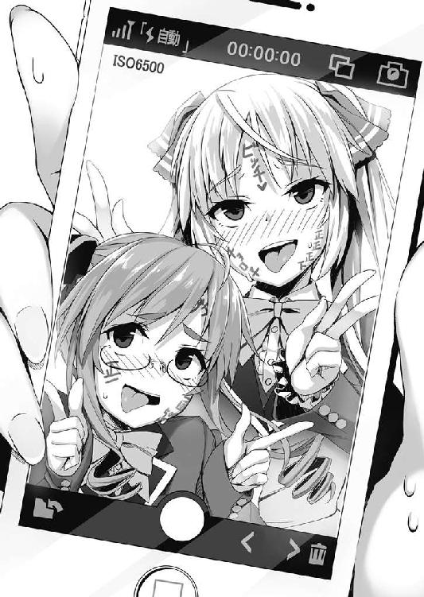
「ごめんね。さすがに人と同じネタじゃ怒りますよネ」
「そんなことを怒っているわけじゃありません！」
「......スーさん......すごく似合ってる」
「嬉しくないですっ！」
「でも、ちゃんと澄緒ちゃん用の文字になってマスから」
「もの凄く余計な気遣いです！」
ですが一応気になり、その文字を拡大してみると
『牝ブタ』『一回五〇〇円』『正一』 そう書かれていました。
「何てこと書いてんですかコラァ！」
「あと、これ......持ってくだサイ」
美詠さんの『中○○専用』『一回五〇〇円』と書かれた段ボールの切れ端と、似たようなものを渡されました。そこには──
『ロリ○○○』『一回一〇〇円』と書いてあります。
わたしは一回一〇〇円で正の字が『正一』です。
美詠さんは一回五〇〇円で正の字が『正正正下』です。
「わ、わたしの方が四〇〇円も安いうえに、一二回分も少ないじゃないですかぁ！」
「なあちびっこ、怒るところはそこでいいのか......」
「えー......メイク落としちゃうんデスかぁー」
「当然だろ、コロスぞ」
「そもそもメイクじゃありませんしね」
あれから数分後、わたしと美詠さんは顔中を引き攣らせながら、メイク落としでガシガシと拭いています。
ひどい目に遭いました......ものすごくひどい目に遭いました......。
「まったく、何の目的でこんなことさせたんですか......」
「ホントだよ。人のことおもちゃにしやがって」
「そうですね。先ほどのは確かに、オモチャにされたメイクでしたね」
「うまいこと言ってんじゃない！」
それほどうまくもありませんでしたが......。
「でも、そのメイクをした目的はあったんデスよ。今回の事件に、ちょっと関係がありまシテ」
「なんだよ。犯人はこういうのが好きな変態だってのか？ それなら──」
「いえ、犯人を見つけられずに、ライバル組織の生徒会に情報を貰うという、体たらくな自分へ八つ当たりデス」
「自分の体たらくを、なんでこっちにぶつけるんですか！」
美詠さんがわたしの方に視線を向け、しゃくるように顔を春さんに向けました。
これは多分『ちびっこ、こいつコロしていいぞ』という合図です。......わたしに武力があったらそうしたかもしれません。
「ですが、春がイラつくのもわかります。いくら情報を集めても、その片鱗すら見つけることができなかったのです......」
「音子さんって、情報収集が得意なんじゃないんですか？」
「この前も言いましたが、私が得意なのは『大勢の中から見つけ出す』というものではなく、何と言いますか......一個人の情報を、丸裸にするような行為が得意なのです」
「まあ、大勢の中からっていうは、人海戦術で聞き込み回るとか、映画に出てくるようなスーパーハッカーにでもなるしかないからな......音子一人じゃ難しいだろうな」
「逆に、その人間のさえ見つければ、オンはあっという間に片を付けるんですけどネ」
「そういうものなんですねぇ」
犯人の目星さえつけば何とかなりそうな感じですか......でもその目星が全くつかないという状態。......どこからどう動けばいいんでしょうねぇ。
「それじゃあ本当に、伊庭さんの連絡を待つしかないみたいですねぇ。まあ、後任の人の方が優秀だって言われてるみたいで、イライラするのはわかった気がします」
「そんな感じで八つ当たりしても仕方ない状況だったんデス。だから許してくれますよネ」
「それとこれとは話が別です」
八つ当たりのために、人にア○顔ダブル田舎チョキをさせるって、どんなストレス解消ですか。
「さて、それじゃあメイクをし直しましょうか？」
「は？ 嫌ですよ！ もうさっきみたいなのはやりませんからね！」
わたしは両手で顔をガードします。
「いやいや、今回は本当にメイクが必要になるんですヨ。作戦として必要ナンです」
「......作戦であろうと、さっきみたいなのは嫌ですからね！」
あんな顔で行われる作戦なんて、絶対碌なことになりません。むしろえらいことになってしまいます。
「大丈夫ダイジョーブ！ さっきのとは全然違いますから。ただ、オンが言ってたような媚びロリじゃないメイクですけどネ」
「別に媚びロリメイクにしたいわけじゃないですよ。っていうか、今度変なことをしたら怒りますよ！」
「ダイジョーブ、ウチとオンを信じてくださイ！」
信じられる要素がどこにあるのでしょう。
「それでは、メイクを開始するので、少々目をつぶっててください」
「......わかりました」
それから数十分後、目を開いた時にはわたしの顔は別人のようになってしました。
いえ......わたしの顔は別人になっていました。
突入前
それから一週間後のことです。伊庭さんからの連絡がありました。
場所は真一埠頭の倉庫。
時間は深夜の一時。
敵の数は三人。装備はいずれもハンドガン。
わたし達は色々と準備をして、当日に備えました。
準備も仕掛けも上々、後は決行の日と場所の特定を待つばかりです。
しかし、ここまで相手の情報があるのならば、もはや楽勝です。ハンドガンしか持っていない三人では灼熱兎の皆さんに勝てるわけがありません。瞬殺です。
それからさらに数日後、ついに決行の日がやって来ました。
真一埠頭──市を整備する前からある場所です。
昔はよく使われていたそうですが、交通機関が整備された今は、まったくと言っていいほど使われていません。
ゴーストタウンのようになったこの場所ですが、市の外観整備の時に、きれいに建て直されました。
そうなってからも特には使われず、雰囲気は違えど、前と似たようなものです。船は着かず、人も来ず、倉庫ですら何も入っていません。ただただ、イミテーションのようにそこにあるだけのものです。
外観は新しいのに人気はなく、まるでＣＧの世界に迷い込んだかのようでした。
そんな埠頭を、四人で悠々と歩いていきます。
全員が全員、相手を舐めに舐め、コンビニでも行くかのような感覚で銃を持ち、余裕のある笑顔で乗り込んだところ......。
「......命だけは勘弁してもらえんデスかねぇ」
船の中で四人とも縛られ、三〇人相手に囲まれ、アサルトライフルを突きつけられていました。
「半丹春、華押音子、紺具美詠、紋黄響......四人とも、武器を押収しました」
下っ端感のある、目だし帽の男がそう告げます。
「春は命だけはと仰いましたが、私としては凌辱とか拷問とか、そういうのも勘弁していただければと思います。そういう屈服させるのを楽しみたいのでしたら、どちらかと言えばと、美詠の方が向いてると思いますよ？」
「なに人を売ってるんだよ！ あんたの方がそういうの得意だろ！」
「そういうことが得意でも、実際男性の情欲を掻き立てたり、そういうことを望まれるのは美詠の方ですし......。気づいてないのですか？」
「......いや......まぁ......そういわれるとなぁ」
なぜそこで満更でもない顔ができるのでしょう。照れるとこですか、それ？
さて、それはともかく、なんでこんな目に遭っているかを説明しなければなりませんね。
わたし達は伊庭さんから連絡を貰い、取引場所に数時間前より張り込み、彼らが来るのを待ちました。
装備は軽装、隠れる場所は近くにあった重機や、キリンと呼ばれるガントリークレーンの陰に隠れていました。
そして対象と思われる人物が数人、倉庫に入っていったのを確認すると、わたし達は突入を開始しました。ものの数分で片が付くだろう......そう思っていたのですが......いたのですが......が......。
「っていうか、ずるくないデスか？ 人数も装備もタイミングも全部筒抜けって、もはやこっちに勝ち目ないじゃないですカ！ こう、あるべき盛り上がりがないですヨ！」
倉庫のドアを開けた瞬間、目の前に広がるのは銃を向けた目だし帽の男たち。そしてそれは、後ろからもやってきたのです。
武器を捨てさせられ、銃を突きつけられたまま、わたし達はカーフェリー程度の船に乗せられました。
つまるところ、罠にかかりました。
こちらの情報がすべて向こうに流れていました。装備も、場所も、突入のタイミングもです。
「くそっ！ あたし達は、伊庭にハメられたってことだな」
「まあ、今から性的にもハメられるかもしれないデスけどねー」
「やめろ。......けど結局伊庭は、向こうの回し者だったってことか」
「そうね。そして今から私たちは、その回し者にまわされるのデスよ」
「さっきからうまいこと言ってるつもりかもしれないけど、色んな意味で最悪だからな」
こんな時でも、彼女たちは余裕そうです。
と、そんな会話をしていると、わたし達に銃を向けている男たちが左右に分かれ、そこから誰かが歩いてきています。
その人は──
「ようこそ、半丹さん、華押さん、紺具さん、紋黄さん」
「......伊庭、やっぱりアンタか！」
そうそれは、わたし達に情報をくれた伊庭さん......いいえ、伊庭でした。
まあ、彼が情報を流しでもしない限り、あんなタイミングで敵に囲まれないでしょうし、今更感は否めませんけどね。
「よくここまで来てくれました。ありがとうございます」
伊庭はニヤニヤと嫌味な笑いを浮かべ、わたし達の前に立ちました。
「あの、イバくん。とりあえず銃を向けるのをやめさせてくれませんカネ？ この子ら、手が震えてるし息も荒いし、素人みたいなもんでショ？ 船の揺れでトリガー引くとかあるかもしれませんシ、正直気が気じゃないんデスよねー」
伊庭は眉を顰めていますが、全員両手を上げると、考えるような表情に変わりました。
「伊庭さん。あなた、何かしらの目的があってこのようなことをされているのですよね？ でしたらそのお話、聞かせてもらえませんか？」
「そうデスよねー。目的がないと、ウチらを殺さずに、わざわざ捕まえる意味がありませんもんネー。というわけで、銃を下ろして話と聞かせテ？」
「......まあ、武器も持ってないですしいいでしょう」
彼が指示をすると、男たちは若干ホッとしたように銃を下ろしました。
けれどその代わりに、伊庭がショットガンをこちらに向けます。
音子さんは白兵戦が得意ですし、武器を持っていなくても戦えます。それを牽制してのことでしょう。
放射状に弾丸が飛び散るショットガンをこの距離で撃たれたら、どう頑張っても被弾します。いいチョイスです。
「簡単に言いますと、僕からあなた達にお願いがあるんですよ」
「あ？ あたし達があんたの言うことを簡単に聞くと思うのか？ どんな話だろうが答えはノーだ！ あたしは死んでも嫌だ！」
「あら、私は死ぬのは嫌ですから、話は聞きますし、大概のことならお引き受けしますよ」
「あー......確かに死ぬのはイヤですネー。ウチもオン側かナー」
「おい！ 急に銃突きつけてくるよな奴らだぞ！ そんな奴の言うこと聞くのか!? 絶対ろくな奴じゃないって！」
美詠さん......自分の胸に手を当てて思い返してみてください。あなたも含めて敵味方、ここの人たちは大体そうですから。
「で？ 結局は何の用ですカ？ わざわざここに来るように仕向けたんだから、何か利用しようってことですよネ？」
「ええ半丹さん。話が早くて助かります」
伊庭は目を細めると、ある荷物を指さしました。
「一つはお願いです。もう一つは交渉......と言ったところでしょうか？ まずお願いは、あれを運んでいることを秘密にしてほしい。どうですか？」
「あれ？ あの中身って、なんなんですカ？」
「半丹さん、どうせ予想がついているでしょう？ 横流しされていると言われている、銃火器です」
「やっぱりそうデスかー」
さて、この辺りで一度整理しておきましょう。
結局のところ、伊庭が横流しをしていた犯人のようです。
そしてなぜか、わたしたちにその取引現場の情報をリークしました。
しかし、それは罠で、わたし達は捕まってしまいます。
ここで疑問点が生じます。
どうしてわたし達に知らせたのか。どうしてわたし達を殺さずにいるのか......です。
そもそも、情報をリークしなければ見つからなかったです。
仮に、わたし達の捜査を邪魔に思っていたから......という理由ならば、倉庫に入った時点で殺していれば問題なくなるわけです。なのになぜ生かしているのでしょう？
「内緒にしてほしいというのは、お願いの方ですよね？ ちなみに断ると、私たちはどうされてしまうんですか？」
「殺します」
伊庭は銃を向け、音子さんの額に押し付けました。ですが彼女は、まるでひるむこともなく、言葉を続けます。
「では本命はもう一つの方ですか？ これを秘密にしてほしいというのが本命ならば、わざわざ見つかるようここに呼び出す必要も、私たちを捕える必要もないでしょう？」
一体何なのでしょう。伊庭の目的がまるで分かりません。
彼は武器の横流しをしている。それでいて、それを見つけてほしいかのようにわたし達を罠にはめた。しかもそれを内緒にしてほしい。
潜入捜査？ ......にしては、内緒にしてほしいというのはおかしいですし。
「ええ、ここからがあなた達との交渉になります」
「......銃を突きつけられての交渉なんて、恐喝みたいなもんだろ」
「簡単な話です。あなた達にはスケープゴートになっていただきたい」
「スケープゴート？」
「はい。簡単な話、何かあった際にこの罪をかぶっていただきたいのです」
罪をかぶる......虫のいい話です。
「皆さんにはいくつもの容疑がかかっていますよね。これを、その一つに加えていただけないかと思いまして」
「思いましてって。あたし達に何のメリットがあるっていうんだ？」
「それはもちろん、この話に乗れるということです。分け前等々の話は、後で詳しくさせていただきますが」
「はぁ？ 何であたし達が、こんな話に乗るんだよ」
美詠さんは憤慨していますが、音子さんはなにか考えるようにすると納得したかのように視線を伊庭に向けました。
「罪をかぶってほしい......といいますか、うやむやにしてほしいということでしょうか？」
「ええ、華押さん。そのとおりです」
「は？ ......どういうことだ？」
大量のクエスチョンマークを浮かべている美詠さんの横で、春さんが納得したかのような顔を見作ります。
「あー......わかった。わかりましたヨ！ この人、ウチらがでっち上げられて容疑をかけられたんじゃなくて、本当に色々な罪を犯して、それを容疑レベルに留めてるって思ってるわけデスね」
「そうですね。ですから自分の犯罪も一緒に行うことで、私達にそれをどうにかしてもらおうということなのです」
どうやら伊庭は、春さんたちが『犯罪をでっち上げられてる』と思ってないわけです。
むしろ『犯罪をしたが、何かしらの力でもみ消した』と思っているわけです。
そして一緒に犯罪を行うことで、春さんたちの罪とまぜこぜにして、その力で、自分の罪をうやむやにしたい......と。そういうことだったようです。
彼にとってはそれがメリット。
そしてお金の発生するその犯罪に、一枚かむことができる。それがこちらのメリット......そう思ってるってことですね。
あー......でも、ただですね──。
「どうですか、半丹さん？」
「あー......残念ですが、お断りしマス。今回はご縁がなかったということデ」
「......一応聞きましたがね。あなた、断れると思っているんですか？」
「いやー、申し訳ないですけど、そんな犯罪に加担したくないですからネー」
「......この状況を解って言ってるんですか？ 銃を突きつけられて、人数も装備もまるで違うんですよ？」
「まあ、ウチらにはスナイパーもいますし。どうにかなりますヨ」
「スナイパー？ 残念ですが、ここのガラスは全面防弾。おまけに、あなたたちのスナイパーはここにいるでしょう？」
そう苦々しくも、その表情を噛み潰したかのような厭味ったらしい笑いを浮かべると、手に持った銃を向けます。それは......わたしにです。
「立ってください、紋黄さん」
わたしはゆっくりと顔を上げ、苦笑いしつつ、座っていた床からお尻をはなして立ち上がります。すると......
「あの......ど、どうも......」
「え......？ 小さい？」
伊庭は驚愕の表情を浮かべています。
それはそうでしょう。自分の身長と同じくらいあるはずの女の子の顔が、自分の肩辺りにあるのですから。
呆気にとられている伊庭をよそに、春さんは隠し持っていた無線を口の前に持ってきました。
「キョウ！ イバと澄緒ちゃんの間デス！」
そう叫んだ瞬間、わたしの襟首は音子さんに引っ張られ、後ろに飛び退く形になります。
すると伊庭はわたし達めがけてトリガーを引きます。
このままではいくら下がろうとも、散弾を体中に喰らってしまいます。これはまずい、そう思い目をつぶった直後──
──ズガァァァァァァァァァァァァァァ！
と、けたたましい音が響きました。
恐る恐る目を開けると、そこは巨大な鉄の塊が存在していました。
「......危ないところでした。銃弾でしたらただの致命傷で済みますけど、こちらでは、形も残りませんからね」
どっちにしろ。わたしのひ弱さなら死んじゃうと思いますけどね......。
「な？ なんだ!? どういうことだ！」
伊庭のヒステリックな叫びが聞こえます。彼もまた無事なのでしょうけど、状況がまるで理解できてないようです。
さて、今、目の前にあるのは、天井を突き破って落ちてきたコンテナです。鉄の塊の箱です。
ではここで、一体何が起こったかというのを説明したいと思います。
まず、春さんがわたしに施したメイクというのは、わたしの顔を隠すためのものではありません。あのメイクは響さんに変装するためにしたものです。
つまるところ、今日は春さん、音子さん、美詠さん、そして響さんに変装したわたし、この四人で突入し、そしてあえて捕えられました。これは、伊庭は全員を捕えないと姿を現さないだろうからとの理由らしいです。
完全に優位に立ち、尚且つスナイパーも援護もないと判断した伊庭は、先ほどのようにベラベラと喋り始めました。
そして、断られると攻撃に移ります。が、ここで外に待機していた響さんに合図を送り、狙撃をしてもらいます。
防弾ガラスがあるであろうということは予想してました。なので別のものを狙撃してもらったのです。それは──
「キョウ、次のワイヤーも撃って」
そう、撃ったのはワイヤーです。
わたし達が船内であれこれ喋っている間に、クレーン車やガントリークレーンで数個のコンテナを船の上へと移動させていました。船を一隻覆う数のコンテナが、今、わたし達の頭上に吊り下げられています。
そしてそのワイヤーを撃ち、切断することによって、三〇メートルの高さから好きな場所にコンテナを落とせるように細工していたのです。
「相変わらず非常識な作戦ですね......」
──ズガァァァァァァァァァァァァァァ！
わたし達の横に、また天井を突き破ってコンテナが落下してきました。
春さんと音子さんはそのコンテナを開けると、中からピースメーカー・ＭＰ７・マイクロウージーを二つ取り出しました。
「はい、エイ」
「......やけにあっさりと捕まると思ったら、こういうことだったのか」
美詠さんは銃を受け取り、敵に向かって構えました。
「え？ 美詠さんは知らなかったんですか？」
「ああ。なんか作戦があるっていうのは聞いてたけど、あたしは顔に出るだろうからって聞かせてもらえなかったんだ」
「......この作戦知らずに、軽装備で突入したり、捕まったりしたんですか？」
「まあ、春の作戦に音子が頷いたならそれは成功するだろうし、表に響がいればどうにかなるだろうしさ」
「......」
チームワークも、リーダーのカリスマ性もないと思っていましたが......どうやらそうではないのかもしれません。気難しそうな彼女が、ここまで信用しているのですから、これはきっとそういうことなのでしょう。
「くそっ！ 全員、こいつらを殺せ！」
伊庭が叫び、目だし帽の男たちは銃を構えて引き金を引きました。三〇人が一気にそうしたものですから、銃声音とはかけ離れた電動のこぎりのような音が船内で反響を繰り返します。
「くっ！」
音子さんは銃を構えたまま、片足を上げ、そしてそれをわたしに向かって──
「いだいっ!?」
思いっきり蹴り上げました。
わたしは吹き飛ばされ、コンテナの中に転がり込みます。
同じコンテナに、春さんは銃を構えたまま転がり込み、音子さんと美詠さんは敵に向かって撃ちながら、後退しつつコンテナに入りました。
全員が入ったのを確認すると、コンテナの入り口を閉め、中に閉じこもります。
「......ふぅ。思ったより三〇人相手はきつそうですネ」
「そりゃそうですよ。単純に一〇倍ですからね、おまけに弾数は一〇倍じゃきかないんじゃないですか？」
「っていうか、ここに入ったはいいけど、むしろ追いつめられてないか？ 開けたらたぶん、一斉射撃だろ？」
「あー......そうデスね。下手すると死ぬかもしれませんシ、とりあえず少し減らしておきますカ」
「減らすってどうやってだよ？ コンテナ全部落とすのか？」
「そんなことしたら、ここを出た時グロ映像の山になってますヨ。だからもうちょっと優しく、でもここにいる限り避けられない攻撃をするんですヨ」
真っ暗闇の中で、春さんが不敵に笑う声が聞こえました。
「キョウ、一番重いのを船首に落としてくだサイ」
『......わかった』
無線から響さんの声が聞こえてきた直後でしょうか、遠くの方で轟音が響いたかと思うと──
「ふわぁぁぁぁぁぁぁぁぁぁ!?」
「うあぁぁぁぁぁぁぁぁぁぁ!?」
地面が跳ね上がりました。シーソーの向こう側に、自分の数倍の重さを持っている人が乗ったような、そんな衝撃です。
どうやらコンテナを船首に落として、船を思いっきり傾けたようです。
わたしは美詠さんと一緒にコンテナの中を転がり、扉があった壁に叩きつけられます。
「いったぁ！ 春！ 音子！ こういうのやるなら先に言っておけよ！」
美詠さんが怒鳴るとほぼ同時に、船の傾きで船首のコンテナが海に落ちたのか、すぐに元の水平に戻りました。
足音から察するに、彼女はお二人に詰め寄ろうとしているみたいですが。
「はい次ー。今度はお尻の方に重いのデース」
『......うん』
すると船尾の方で轟音が鳴り響き、今度は逆方向に船が跳ね上がります。
「うがぁぁぁぁぁぁぁぁぁぁぁぁぁぁぁぁぁぁ!? ──いひゃいっ!?」
立ってそちらの方に歩いて言っていた美詠さんから、とんでもない悲鳴が上がっています。そして、ゴッ！ ゴッ！ とおそらく天井と、そして最奥の壁にどこかをぶつけた音がしました。
......まあ、そりゃそうなるでしょう。
そしてまた水平に戻り、春さんが合図を出します。
次は右に傾き、その次は左......意表をついてもう一度左。何度もシェイクされます。
しばらくして、外の声が少なくなってくると、真っ暗な中、足音が扉へと向かっていき、それが開け放たれました。
外から光が入り、銃を構えた春さんと扉を蹴り開けた音子さんの姿が確認できます。
そして勢いよく飛び出し、銃を相手に向けようとすると......。
「──誰一人として動く......な？」
開けられた扉の向こうには......誰もいませんでした。
まあ、正確にはいるんですけど......基本、倒れていて戦闘不能状態のようです。
「......やりすぎましたかネ。これじゃあ、銃を手にした意味がないデスよ」
「まあまあ、経費が節減できれば美詠も喜ぶでしょうし、いいではありませんか？」
「あちらで鼻を押さえながらうずくまって涙目になってる美詠さんが、そのくらいで許してくれますかね？」
「くれないでしょうネェ」
まだ微妙に揺れる船内ですが、春さんと音子さんに続いて、わたしもコンテナから出て、辺りの様子を見ます。
床には薬莢や銃弾が転がっており、おそらく船が傾いたショックのせいで、思わず引き金を引いたりしての誤射が相次いだのでしょう。想像するに阿鼻叫喚な状況だったに違いありません。
「う......ぐぅ......」
と、床に這いつくばり、情けなく呻いている男がいました。そう、この事件の主犯の......伊庭です。
「あれ？ イバくんもこれでやられちゃったの？ キミまでやられちゃったら、なんて言うか......あるべき盛り上がりが無くなちゃうじゃないデスか？ 困るんデスよねー」
「あるべき盛り上がりとは、いったいどういうものなのですか？」
「こう、親玉だけなぜか無事で、最後の対決的なやつデス。五人のチームワークを見せつけながら、ギリギリでイバくんに勝つのデスよ」
「無くていいですよそんなもの。そもそも一対一であっても、あの程度でしたら瞬殺ですのに、五人で戦ったらもはやイジメになりますよ？」
......なんかわたしも数に入れられているんですが、わたしは負ける気しかしません。
「さてイバくん。これからキミを、逮捕的な感じにしマス」
「ですがまあ、学園外にばれるとマスコミとかがうるさいと思いますので、一度学園預かりにしてからになると思われます。生徒会長に引き渡しますが、あの方、筋が通ってないことにはかなり厳しい方なので、覚悟しておいてください」
「ぐぅぅぅ！ おふぁえら！」
伊庭さんは息も絶え絶えになりながら体を起こして、こちらを睨んできました。しかし、その顔は鼻血にまみれており、さらには歯が抜けており、いい感じにメガネにひびが入っていました。
「やばい、睨んでるけど顔が超面白いデス！」
「なんですかその顔!? すごいです！ 負けた格ゲーキャラみたいですね！」
うわぁ......酷いこと言いますね。ただわたしも、こんな負け犬らしい負け犬な表情は見たことないです。
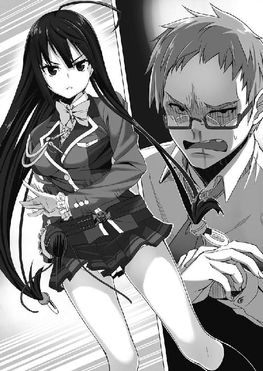
「ころひてやる！」
伊庭は苦し紛れに銃を構えますが、トリガーを引く直前──タァン！ と銃声が鳴り響きました。
「いや、さすがにもう無理ですよネー」
春さんによる、ホルスターに銃を収めたままのヒップショットです。伊庭の銃は弾かれ、床に転がります。
もはや観念したかのようにがっくりとうなだれ、空気の洩れる口で何かを語り始めました。
「なぜ、準備ができふぁ。......なぜこれがわにゃだとわかった」
「なぜワニャかわかったかってデスか？ キミらが旧生徒会室に来た時には、そこそこ疑ってたんデスよ」
......わにゃの件は放っておいてあげましょうよ。
「にゃぜだ！」
「ニャゼって、実は生徒会が怪しいってところまでは、とある人の情報で知ってたんデス。でもまあそれだけでしタ。だから確かめたんデス、ウチが『犯人は自分たち』って言ってね。そしたらあんた反応が遅れたじゃん。それならそうかなーって、それが理由デス」
「は？ ......それのどこが？」
「だってさ、あんたたち全員、ウチらを疑って旧生徒会室に来たわけでショ？ みんな、何かあったら撃つ気でいたわけジャン。ウチが『犯人です』言ったら『やっぱりお前か！』ってなるわけじゃん。なのにあんたは驚いていた。それはなぜか......。もちろん、自分は犯人を知っているから」
「......」
「もちろんそれだけで確定なんて言えないですけどネ。だから何かしらの確証を得るために、生徒会の備品の購入履歴を確認させてもらった。生徒会長は数字上何の不備もないって言ってたけど......それは数字上だけだったんですよネ」
春さんはニヤニヤといやらしい笑みを浮かべながら、鼻を押さえて後頭部をチョップでトントンしている美詠さんを指さしました。
「エイに書類を確認してもらったら、数分もしないうちに即発見。銃の発注を大量にして、後から余剰分をキャンセル。これを何回も繰り返していたわけですネ」
「だ......だふぁらなんだ」
「これはあくまで書類上の話。本当はキャンセルなんてせずに、その余剰分を自分のものにして、高値で売りさばく。その売り上げでキャンセル分の金額を補てん......そういうことですよネ？ だから数字上は何一つ不備がなかったわけデス」
なるほど。個人では手に入れることのできない銃を、そうやって手に入れていたわけですか。
どうやらそれは図星だったようで、伊庭はがっくりとうなだれその場に突っ伏してしまいました。
「それじゃあ生徒会長に連絡して、私たちは帰りましょうカ？」
「はい、そうですね」
こうしてこの事件は、誰も傷つけず、誰にも知られず、静かに幕を閉じたのでした。
戦闘終了後
「音子さん！ どういうことですか！」
数日後、わたしは旧生徒会室の扉を壊さんばかりの勢いで押し開けました。
「なんですかお姉さま？ そんなにお怒りになって」
「怒りますよ！ 怒るに決まっているでしょう！ なんですかこの画像は！」
わたしはネットで見つけた数枚の画像、そしてスマートフォンをテーブルに叩きつけました。
一枚目──わたしが制服姿で歩いている画像。
二枚目──前回の事件で、ヌイグルミをもらっている画像。
三枚目──前回の事件の廃ビルに入っていく画像。
四枚目──初めてここに来た際、トラップにビックリして漏らしてしまった画像。
五枚目──全身落書きで、ア○顔ダブル田舎チョキをしているわたしと美詠さん。
そして始まる動画──
『あたしたちは今、ヨガっているんだ。友達に無理やりやらされて......初めは痛かったんだけど、今ではなんというか......気持ちいいかな？ 夜なんかには一人で、部屋でヨガったりもしてる』
美詠さんが恥ずかしげもなく、そんなことを言っていました。
「どういうことですか！ この画像は何なんですか！ なんで画像が増えて、しかも美詠さんが卑猥なことを喋ってるんですか！」
「どうでしょう？ この順番で見ると、ロリ女子高生がヌイグルミを餌に廃ビルに連れ込まれ、脅され、粗相した挙句、最後は先輩奴隷と性の虜になったみたいじゃありませんか？」
「なに続編作ってるんですか！ この前までだったらギリギリ辱めを受けてない感じでしたけど、今回は完全に受けちゃった後じゃないですか！」
「おめでとうございます、お姉さま。これでパッと見でおぼこって判断されませんよ」
なにがどうめでたいのかサッパリわかりません！
「確かに申し訳はないのですけど、この方法で情報がものすごく集まったことは事実なのです。本当はあの一回でやめるつもりでしたが、できればこれからも継続していきたいなと思いまして」
「......これ、ずっとネットに流す気ですか？」
「定期的に新しいものを出していきませんと、すぐに飽きられてしまいますので」
......飽きられてほしいんですが。っていうか忘れられてほしいんですが。
「これ、喋っているところを見ると、美詠さんは協力してくれたってことですか？」
「これですか？ いいえ、実は美詠にヨガを教えたところ、あの子、かなり気に入ってしまいましてね。ヨガする動詞を『ヨガる』と教えたのです」
ああ......だからあんなこと言ってたんですね。
「ダメですか？ これは嘘偽りなく、お姉さまを本当に頼りにしてのことなのです」
「......」
頼りにしてる......ですか。はぁ。
あまり頼りにされることのない社会人にとって、その言葉ってかなり嬉しいんですよね......。
「わかりました。......メイクもしていて、一見ではわたしだと思えないでしょうし、皆さんの......ひいては街の平和につながるのでしたら甘んじて受けましょう」
わたしは渋々といった笑顔を作ると、音子さんが柔らかい笑みを浮かべました。
「ありがとうお姉さま」
......うぅ。同性ながらに、この笑顔にはドキリとさせられてしまいます。
「あ、でも、音子さん出演で作った方が、情報の量多くなりませんか？」
「え？ なぜそんな当然のことを聞くのですか？」
「......」
聞いたわたしが馬鹿でした。
「ただですね、私の場合は悲壮感より性欲を刺激してしまうので『可哀想！ 犯人許せない！』ではなく『犯人よ！ もっとすごいプレイを』ってなっちゃうのよね」
「なんていうか......それはそれで大変そうですね」
これが、わたしにとって二つ目の事件となりました。
こうして日記を読み返すと、なんて言うんでしょうね。
......これ、日常ですね。
今後に起こることを考えると、このレベルはほんの日常です。
銃弾が飛び交い、コンテナが降ってくる日常......異常とも言えますが、毎日がこんな風であれば、慣れもします。
んん？ ......なんでこんな日常を、わざわざ読み返したんでしたっけ？
と、ああ！ そうでしたそうでした！
この日に関係した、もう一つのことを思い出すためでした！
この後にも、メモしておかなければならないことがあったんです。
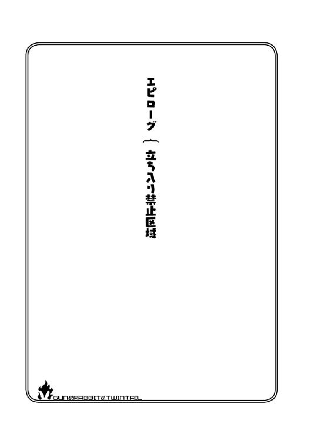
エピローグ 立ち入り禁止区域
夜もてっぺんに近くなったころの時間です。
雑誌社の仕事が終わったわたしは、帰宅しようと最終バスに乗り込みました。
乗っているのは運転手さんとわたしだけ。外の景色を見ながらバスに揺られていると、ウトウトしてしまい......気が付けば、
「あ......」
終点でした。完全に寝過ごしてしまいました。
仕方なくそこで降り、バスを待とうとするも、時間も時間......次のバスは始発でした。
「はぁ......タクシーを呼ぶしかないですね」
タクシー会社に電話をかけ、この場所を伝えるためにバス停の名前を見てみると、
「あ、ここ......真一埠頭だったんですね。............え？ あ、ああそうです。はい、真一埠頭までお願いします」
いつの間にか電話はつながっており、タクシー会社に場所を告げます。
「......」
バスの終点は、この前事件が起きた場所......真一埠頭でした。
「あまり出会いたくないタイプの偶然ですね」
溜息をつきつつも、なんとなくあの後がどうなっているのかが気になり、現場へと行ってみることにしました。
すると、その辺り一帯は立ち入り禁止と書かれたテープが張られており、人の侵入を拒んでいます。
わたしはその間を潜り抜け、件の船があった近くへと行ってみると、
「────」
「────」
......？ 何やら人の声が聞こえてきました。その声は二つ、どうやら会話をしているようです。
気が付かれないように、ゆっくりと近くに行ってみると。
「ありがとうね、春。こっちにも配慮してくれて」
「いや、生徒会に迷惑かけたら元も子もないし......。何のために辞めたのかわからなくなっちゃうしね」
......春？ 生徒会？ ......そしてこの立ち入り禁止区域にいるってことは、もしかして......。
「ありがとう。あなたのおかげで、私たちの権限では手出しのできない部分も、ちゃんと潰すことができてるわ」
「うん、気にしないで」
ゆっくりとその姿を視界に入れると、そこにいたのは......生徒会長さん......そして、春さんでした。
そしてなぜだか二人とも、いつもと感じが違います。
生徒会長さんは若干ラフに、あの貼りついたような笑顔ではなく、柔らかく笑っています。
春さんはなんというか......普通です。あの躁ハイテンションな雰囲気は見られず、喋り方もいたって普通です。
どういうことでしょう？ 二人は未だに、何かしらのつながりがあるのでしょうか？
「......」
あれ？ よく考えたらおかしくないですか？
春さんの目的としては、大きな事件を解決して、それを自分達の手柄だと知らしめたいわけですよね。
今回、事件が小さいうちに解決して、なおかつそれが外部に漏れないようにしているわけです......。
......むしろ、現生徒会を貶めるチャンスでもあったのに、むしろ助けるようなことを。
そして会話から察するに、春さんは生徒会を自分から辞めた？ 確か、解任されたはずですが......。
──ヴヴヴヴヴ ──ヴヴヴヴヴ
「──！」
いいところで携帯が鳴り始めました。発信者は......タクシー会社ですね。
「......うむぅ」
立ち聞きはよくありませんね。
運転手さんを待たすのも悪いですし、戻ることにしましょう。
それにまあ、仲間なんですから。何か企んでいたとしても、いつかきちんと話してくれるはずです。だから......彼女を信じることにします。
わたしはそれからタクシーに乗り込み、日付も変わった頃に自宅へと到着しました。
「......帰りましたー」
「お帰り......遅かったね」
部屋の奥から、眠たそうな響さんがのっそりと出てきました。
「ああ、先に寝ててくれてよかったんですよ？」
「......帰ってから......ずっと寝てた......今起きた」
ああ、それは早寝早起きなことで。
わたしは荷物を自室に置き、響さんのいるリビングに移動します。
「あの、響さん」
「ん？ ......なに」
「みなさんって解任されたんですよね？ 自分たちから辞めたのではなくて」
「......うん」
「それは、春さんも同じですか？」
「うん......ハルには......一番容疑が......かかってる......」
「そうですか......」
だとするのなら、あの会話はいったい何だったのでしょう？
「えーっと、ありがとうございます。明日も早いですし、もう寝ましょうか？」
「もう寝た......まだ寝るけど......」
眠たそうな顔を、よりいっそう眠たそうにさせて、彼女はベッドの方へと戻っていきました。
あー......実家の犬もこんな感じでしたね。美詠さんが、響さんを犬だと思うといい付き合いができると言ったのも頷けます。
わたしも着替えて、寝ることにします。シャワーは......明日でいいです。
倒れこむようにベッドに突っ伏し、わたしは先ほどのことを考えてみました。
「......はぁ」
わたしはあの時......嘘をつきました。
それは自分自身に、自分の心にです。
タクシーが来たから......仲間なら喋ってくれるだろうから......。
引き返した理由をそう言いましたが、そうではありません。
記者の勘なのか、人間としての勘なのか、それとも野生の勘なのか......。
何かはわかりません。
でも思ってしまったのです。
ここにいたら、聞いてはいけないことを聞いてしまう。
聞いてしまったら、彼女を仲間と呼べなくなってしまう......と。
あとがき
お読みいただきありがとうございます。
飯山満です。飯山満と書いてハサマと読みます。
さて『銃とウサギとツインテール第一巻』いかがでしたでしょうか？
非常識な街で非常識な女の子たちが、非常識なほど大暴れするという非常識推しな作品です。
Ｂ級アクション映画と萌を融合させたような、非常識でちょっとアレな作品です。
スナック菓子片手に、脳みそをカラッポにしてお読みいただければと思います。
とにかく、女の子が銃持って出てきて、萌えられればいい......なんて方にお勧めです。
葛藤とか、見ていて心が沈むとか、そういうのは全然ありません。
もし楽しんでいただけたのならば幸いです。
第一巻となりますが、イメージ的には澄緒編とでも言いましょうか？
主人公が女の子たちと出会い、巻き込まれていく巻であります。
次巻はぜひ、一キャラずつ掘り下げていき、活躍させ、関係性を深めていければなと思っております。
お気に入りのキャラがいた方は、ぜひ次巻以降もお読みいただければと。
ではこの場を借りてお礼を言わせていただければと思います。
イラストレーターの石鎚様。
かわいらしいキャラと重厚感のある銃器のイラストをいただきまして感謝です！
しかもあんな挿絵まで描いてくださり、申し訳ないやら吹き出すやらでトータル本当にありがとうございました！
桜ノ杜ぶんこ様。
この企画にお付き合いくださりありがとうございます。
他者様では敬遠されがちな要素のあるこの作品を、面白いと言ってくださり、本当に感謝ばかりです。
次巻もぜひ頑張ります！
さて、最後に......いつかこの作品の人気が出て『痛銃』を誰かが作ってくださることを祈っております。
飯山満
飯山満
小説やゲーム等々の執筆を仕事にしているシナリオライター。ペンネームの飯山満というのは、千葉県の地名からいただいたもの。最近、同じ名前のゆるきゃらが出てきたことにより、改名しようか悩み中。
銃とウサギとツインテール
電子版発行 ２０１５年６月５日
著 者 飯山満
発行者 長谷川 洋
発行所 株式会社一二三書房
〒１０２－００７２
東京都千代田区飯田橋２－14－２ 雄邦ビル
電話 ０３－３２６５－１８８１
カバーイラスト 石鎚ぎんこ
©HIFUMI SHOBO
本書の無断複製（コピー）は、著作権上の例外を除き、禁じられています。
●本書は『銃とウサギとツインテール』（２０１５年４月20日 初版第１刷）に基づいて制作されました。